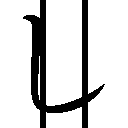
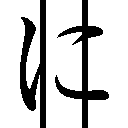
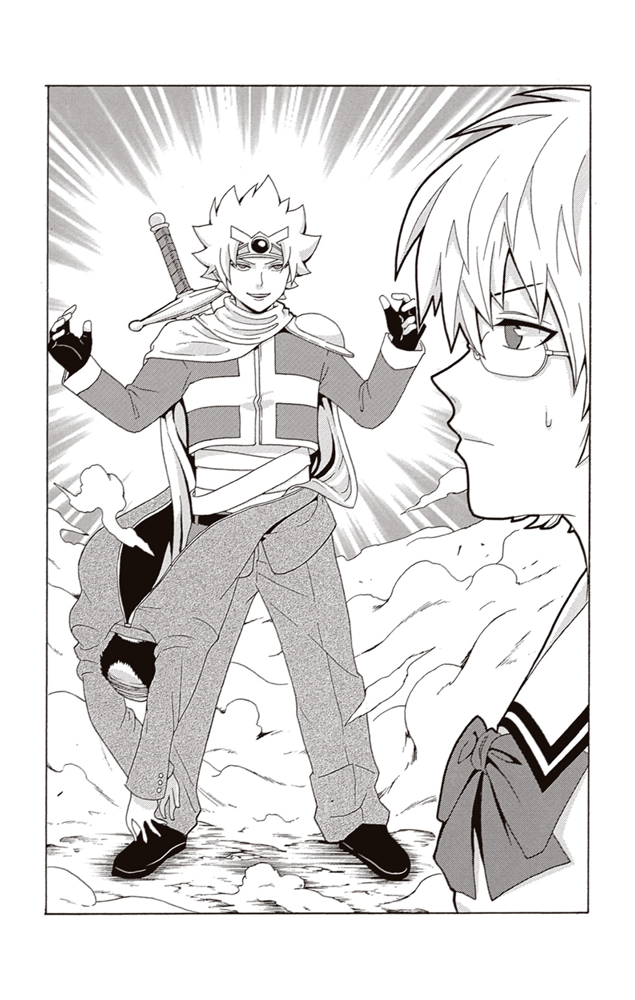

| 斉木楠雄のΨ難 EXTRA STORY OF PSYCHICS 2 | |
| 麻生周一 & ひなたしょう | |
この本は縦書きでレイアウトされています。
また、ご覧になる機種により、表示の差が認められることがあります。
CONTENTS
★この作品はフィクションです。実在の人物・団体・事件などには、いっさい関係ありません。
鳥束零太かく語りき
オレの名前は鳥束零太。霊能力者っス。ちょっ、なんで本を閉じようとするんスか!? 勘弁してくださいよ。ようやくこうして出番がきたっていうのに......。
え？ どうして斉木さんじゃないかって？
そりゃそうっスよ。なんたって今回のノベライズの主役はこのオレですからね。だからなんで本を閉じようとするんスか!? やめてくださいよマジで。
はあ......。超能力者ですらないのに今これを読んでいる皆さんが本を閉じようとしていることが手に取るようにわかってしまうこの現実......悲しいっスね......。だいたい、なんなんスかねえ超能力者って......。テレパシーだとか、サイコキネシスだとか、あと透視だとか、透視だとか、透視だとか......ズルいんスよ!! それに皆さん知ってますかね？ 斉木さん、なんと女の子に変身することもできるんスよ!? ズルいんスよ!!
斉木さんの超能力には、それぞれデメリットがあるってことは知っていますよ。斉木さんもいつも念仏のように、やれやれデメリットデメリット言っていますよ。それはわかっているつもりっスよ？ でも、でもですよ、それでもやっぱりズルいんスよ!! 納得いかないんスよ。だって、オレなんて霊能力者なのになにもできないんスよ？
ただ、幽霊を視て、話す。それだけの能力っスよ？
斉木さんなんて幽体離脱もできるんスよ？ おまけに気絶した人の身体から霊体を抜き取るなんて離れ業も......。なんなんスかそれ......。おかしいじゃないっスか......。
それを『超能力者』ができるのなら、できてしまうのなら、もはや『霊能力者』なんてカテゴリー必要ないじゃないっスか......。
それでこの前、自分もめっちゃ修業してやっとのことで『口寄せ』っていう技を会得したんスよ。やっぱりいつまでもこのままじゃいけないって思って、だからがんばったんスよ。このままだと新キャラの登場に伴い出番が減っていくかもしれないというリアルな恐怖と戦い続けるまさに地獄のような日々だったっス......。
けど、死にもの狂いで会得したこの技で再起をはかるも、なんとかして女の子からモテモテになろうとがんばるも、終いには幽霊に身体乗っ取られかけ、あわや昇天っスよ？ 再起をはかるどころか斉木さんに助けられ、鼻で笑われる始末！
まったく......『超能力者ってなんなんスかね』と考えると、いつも『霊能力者ってなんなんスかね......』になってしまうというこのやるせなさ！
そもそも――そもそもっスよ？
『超能力者に対しての霊能力者』
『もうひとりの能力者』
当初のオレの立ち位置はこんな感じだったはず......。
それなのに、差がありすぎるとは思わないっスか？ 超能力者と霊能力者のこの圧倒的な格差はなんなんスか。なんの嫌がらせっスかこれは。
というか、他のマンガとくらべて、霊能力者の扱いが酷すぎるんスよこのマンガは！ なんでかっこよく「破ァッ！」とかやらせてくれないんスか？ おかしいでしょう！ 霊能力者といえば「破ァッ！」といっても過言ではないというのに......。これじゃあなんのために寺に生まれ寺で暮らしているのかわからないっスよ。
できることなら、もうちょっと霊能力者が優遇されるような、そんな世の中になってもらいたいものっスね......。願わくば、いっそのことタイトルを『霊能力者 鳥束零太の♀難』とかにして、毎回エロい女幽霊とかが出てきて、エロい女子高生とかエロい女子大生とかがエロい被害に遭ったりして、それをエロいオレが解決してエロいご褒美をもらえるような、そんな社会派かつ哲学的な作品になってくれたらサイコーなんスけど......。
でもね、エロい女幽霊ってなかなかいないんスよ......。いつも捜してるんスけどね。
というわけで、超能力とくらべて格段に地味で使い道が思い浮かばないこの霊能力を活かしてなにかできないものかと常に考えているわけなんスが、要するに霊能力を使って人からチヤホヤされたいわけなんスけど、包み隠さず正直に言うと女の子にモテたいわけなんスけど、まあ、ぶっちゃけた話なんとかしておっぱいを――
おっと、あぶないあぶない。無心にならなくちゃいけないっスね。
なんてったって、今からなんでも見通す超能力者――斉木さんのもとへ頼みごとをしに行くんスからね。やましい気持ちがあると斉木さんは協力してくれないっスから。
斉木さんは常日頃からオレのことを煩悩まみれだなんだと言ったりしますが、オレとしてはふつうだと思うんスけどね。斉木さんが淡泊すぎるだけなんスよ。
隣のクラスにいる斉木さんの席に向かうも、もうすでに斉木さんにはオレが訪ねてくることがわかっているはず。超能力ってほんと便利っスよね。
休み時間。斉木さんはいつものように文庫本片手に自分の席に座っていたっス。
「斉木さ〜ん、どうもーっス」
後ろから声をかけると、斉木さんが本を持ったまま静かに立ち上がった。そして、ちらりと冷ややかな目でオレを見たかと思ったら、なんと教室から出ていってしまったっス。
「ちょ!? 待ってください斉木さんっ！」
慌ててそのあとを追い、廊下に飛び出すオレ。
「斉木さん！ 『なんだ鳥束回か』ってなんスか!? ひどいじゃないっスか！」
オレは露骨に嫌そうな顔をして行ってしまう斉木さんを追いかけるっス。
「『鳥束回』のなにがいけないんスか！ たまにはいいじゃないっスか！ 『鳥束回』を読みたいっていう読者もたくさんいるんスよ！ 編集部にもそういう要望が数多く寄せられているとかいないとか......ああっ、ちょっ、待ってください！」
スタスタと行ってしまう斉木さんに飛びついて、腰のあたりにしがみつく。
「要望があるのは本当なんスよっ！ えっ、数？ 四通くらいっス......待って!!」
スタスタと歩く斉木さんにしがみつきながらズルズルと引きずられていく。
「お願いがあるんスよ斉木さん！ 待ってください斉木さーん！」
引きずられながらも懇願するオレの姿に、周囲からの注目が集まりはじめたっス。
オレが大声をあげていたからか、はたまた寺生まれのイケメンだったからなのか、それは定かではないっスが、とにもかくにも廊下にいた他の生徒たちが、皆オレのことを見つめていたっス。いや、正確には、オレと斉木さんのことを見つめていたっスね。
周囲の視線に眉をひそめながら立ち止まる斉木さん。後頭部を仏像で殴打して黙らせてやりたいなどと黒いことを言いながらも、どうやら話を聞いてくれるみたいっス。
「えっとですね、お願いというのは、街はずれにある廃ビルのことなんスよ」
斉木さんは本の続きを読み始めましたが、気にせず続けるっス。
「今、うちのクラスで心霊スポットとしてちょっとした話題になってるんスよ。なんでも不気味な笑い声が聞こえるだとか、獣のようなうなり声が聞こえるとか、そんな話です」
無言のまま、ぱらり、とページをめくる斉木さん。
「この手の、心霊スポットだとか都市伝説とか、女子ってそういう話かなり好きじゃないですか。なのでオレが実際に行って確かめて、女の子たちの会話に加わってチヤホヤされたいんスよ（霊能力者としては、やっぱりどんな霊がいるのか気になるんスよね。オレが直接行って確かめて、怖がっているクラスメイトを安心させてやりたいんスよ）」
オレは自分の熱い思いを斉木さんに伝える。
しかし、なにがいけなかったのか、本音と建前が逆だろと一蹴されたっス。
それでも、オレはめげずに続けるっス。
「それで斉木さん、お願いというのはですね、いっしょにこの廃ビルに行ってもらいたいんスよ。お願いします！」
手を合わせて、お願いするっス。いざというとき、神様よりも仏様よりも頼りになる存在、それが超能力者様――すなわち斉木さんっス。
「なんでって、怖いんでいっしょに行ってほしいんスよ」
そんなオレの一言に、さすがの斉木さんも本を読むのをやめて顔を上げたっス。訝しげな表情でオレを見つめてくる斉木さん。
確かに、わかるっスよ。そんな表情になるのはわかるんスよ。
「ええ、斉木さんの言うとおりっス。前にも言いましたが〝幽霊〟は怖い存在ではないっス。むしろ穏やかな存在っス。幽霊は恐ろしいものという考え方は、半端に霊感のある人間が、おぼろげに視える幽霊を勝手に恐ろしいものとして語っているに過ぎないんス」
ですが、とオレは続ける。
「本当に怖いのは〝人間〟っスよ斉木さん」
オレはそうつぶやいて、意味もなく遠くを見つめた。
「こういう心霊スポットで一番怖いのは、幽霊でもなんでもなく人間なんです。こういった場所は地元のヤンキーたちのたまり場になっていることも多いですし、ヤンキーどころかもっと怖い人たちの取り引き現場なんかに出くわしてしまったらたいへんっスからね。それから、老朽化した建物なんかは、事故の心配もあるっスね......」
そういったとき、悲しいことに霊能力者は無力っス。霊能力者には襲い来るヤンキーたちの守護霊を為す術もなく言い当てていくくらいしかできることがないわけっスよ。
そこで、なんでもできる超能力者の出番というわけっス。斉木さんさえいてくれれば、なにが起ころうとまったく怖くないっスからね。そして明日には話題の心霊スポットに潜む霊の正体を暴いた男として、オレは一躍女子たちのヒーローになれるという寸法っス。頼りになる男ナンバーワンの座を獲得したオレは、きっとこの先、別の心霊スポットに行くとき、あるいは遊園地のお化け屋敷に行くとき、お呼ばれされるようになるはず......。
そうなると、吊り橋効果でお互いの距離が縮まるのは必然。必然ついでに怖がる女子たちは、心の距離だけでなく物理的にも近づかざるをえないというわけっス。
怖がって震えている女性を突き放すなんてこと、紳士としてするわけにはいかないっスからね。しかし、そうして薄暗い中ふたりきりで密着して歩くと、どうしてもオレの腕に女子の胸が当たってしまうことになるわけっス。これもまた必然なことであってしかたのないことっス。いや、別にオレとしても下心があるわけではないんスよ？
でも、できれば両側から挟まれて......ああヤバい思考が駄々漏れじゃないっスか！
はっと我に返り前を見たら、まるで生ゴミでも見るかのような目でオレを見つめる斉木さんがそこにいたっス。な、なんて目を......。とても週刊少年ジャンプの主人公がしていい目じゃないっスよ斉木さん......。
冷ややかな目でオレを見つめながらゆっくりと離れていく斉木さん。心の距離だけでなく物理的にも離れていってしまうっス。オレは再び斉木さんにしがみついた。
「頼みますよ斉木さ〜ん。斉木さんだけが頼りなんスよぉ。クラスの女子たち、そして全国の女性読者にも、たまには霊能力者としてかっこいいところを見せたいんスよ〜！ なんとか名誉挽回したいんスよ〜！ お願いしますよ〜！」
すでにもうかっこわるい気もするんスが、背に腹はかえられないっス。ここまできたらなんとしても結果オーライでこの鳥束回を終わらせなくてはならないっスからね......。
オレは奥の手を使うことにした。
――あれはそう、修学旅行で沖縄に行ったときのことっス......。
斉木さんの超能力が暴走して、大変だったんスよね。
それで、騒ぎが大きくならないように、オレも必死にフォローしたんスよね。「いや〜あれは本当に大変だったな〜......」は、やっぱりもうやめておくことにするっス。今そのことを思い浮かべた瞬間、斉木さんから尋常ではないほどの殺気を感じ取ったので......。
なんというか、踏みこんだらたぶん、いや、確実に、命を失うことになるっス......。
けど、実は奥の手はそれではないんスよ斉木さん！
「コーヒーブランマンジェ」
オレは静かにその名を口にする。
「コーヒーブランマンジェ......。知ってますか斉木さん？」
それを聞いて、ぴたりと斉木さんの足が止まる。
「おいしいコーヒーブランマンジェを出すお店を、見つけたんスよ......！」
コーヒーブランマンジェ。簡単に言うと、真っ白いコーヒーゼリー。
見た目は白いのに、ちゃんとコーヒーの味と香りがするという珍しい一品。幽霊に聞いて、斉木さんの好みの食べ物は調査済みなんスよ。
フフフ、ひさびさに霊能力が役に立った瞬間っスね。
「いっしょに来てくれたら、そのお店の場所を教えます......！」
しかし斉木さんは、しがみついているオレを見下ろしながら、フッと薄い笑みを浮かべる。ああ、しまった!? 言いながらお店の場所を思い浮かべてしまったっス！
このままでは、情報を持ち逃げされてしまう。オレはすかさず叫んでいた。
「奢るっス！ いや、奢らせてくださいっ！」
斉木さんが、溜息をついてようやく頷いてくれたっス。しつこい？ 男はこのくらいでないとやっていけないっスよ斉木さん。
放課後。
夕日に照らされた廃ビルを見上げる。
想像以上に、年季の入ったビルっスね。染みやひび割れなどが見受けられる壁。こういうのを撮影すると、角度によっては心霊写真のように見えたりするんスよね。知ってますか？ 心霊番組に出てくる写真のほとんどが、角度とかによる見間違いなんスよ。自分が観た番組の九割くらいは霊ではなくて光の加減とか、そんな感じだったっスね。
え？ 残り一割？ ああ、シャイな幽霊っスね。
それにしても、壁の染みといい亀裂といい、ビルの周囲の草が伸び放題になっていることといい、これはまさに絵に描いたような心霊スポットっスね。
街はずれで人気のない夕暮れ時ということも相まって、余計に不気味な雰囲気を醸し出してるっスね。学校で噂になるだけのことはあるっスね。
隣で、同じく廃ビルを見上げながら、苦虫を嚙み潰したような顔をしている斉木さん。意外っスね。でも、霊能力者であるオレですらこの雰囲気はさすがに薄気味悪く思うので、斉木さんがそうなってしまうのも無理もないっスね。
とりあえず、場を和ませるとしますか。
「どうしたんスか斉木さん？ やっぱり、さすがの斉木さんもこれはビビりますよね？ でも安心してくださいよ。幽霊相手ならオレがついているんで大丈夫っスから」
そう言って笑いかけると、途端に不機嫌になった斉木さんがそのまま帰ろうとする。
「ああーっ、ちょっと待ってください！ 奢ります好きなだけ奢りますから！ このあといっしょにコーヒーブランマンジェ食べに行きましょうよ！」
本日何度目かわからないくらいっスが、今一度、斉木さんを必死に引き止める。霊能力者は幽霊以外にはまるで無力なんで、ホントにいてくれないと困るんスよ。
ここまで来る道中、斉木さんは決してコーヒーブランマンジェが食べたいから来たのではないと何度もオレに念を押してきましたが、数分置きに念を押してきましたが、ほんと素直じゃないっスよね。うっ、睨まれた......。
不機嫌な斉木さんの視線を避けるように背を向けると、オレは廃ビルの入口を調べはじめた。傾いた『立ち入り禁止』の標識に、ゆるんだ鎖。南京錠を確認してみると、思ったとおり、鍵が壊れていたっス。
「こりゃあやっぱり人間っスね......」
幽霊なら鍵は壊さないっスからね。
オレは、ゆっくりと扉を開けると、薄暗いビル内の様子を窺った。
無人の廃ビル。当然、中には誰もいないっス。人間も、幽霊も。
「視たところ霊はいないようっスね。まあ、そりゃそうっスね。こんな街はずれの寂しい場所にいても、楽しくないっスからね。近所にコンビニもないし、駅からも遠いし......」
そんなことを言いながら、中に入る。振り返り、あとから入ってきた斉木さんに言う。
「現実問題、幽霊にとっても近場にコンビニがあるかないかとかは、けっこう重要なんスよ。ジャンプの続きが読めなくなりますからね」
幽霊たちにとって、決まった時間に立ち読みをする学生やサラリーマンなんかは神みたいな存在っスね。そういう人の周りには、いっしょにマンガを読む霊たちがウジャウジャいて、オレなんかはいつも「うわっ......」って思っているんスよ。
ということで、今これを立ち読みしているそこのあなた。たとえ気配を感じたとしても、絶対に振り向いちゃダメっスよ？
「あっ、斉木さん！ なにかいるみたいっス！」
視界の隅に動くものを捉えたオレは、その場で立ち止まる。とっさのことだったんスけど、動いたなにかはかなり小さめ。人間じゃないっス。ネズミか、あるいは......。
斉木さんに確認してもらうっス。すぐに、小さく首を振る斉木さん。斉木さんが感知していないということは、今のはどうやら霊のようっスね......。
なにかが潜む暗闇に目を凝らす。すると、物陰から犬が顔を覗かせる。小型犬っスね。
「動物霊っスか」
クラスの女子が『獣のようなうなり声を聞いた』なんて言っていたっスね。なるほど、偶然この犬の気配や鳴き声を察知してしまったといったところっスか......。半端に霊感のある人だと、これで怯えても無理はないっスね。
でも、実際はただの小型犬。しかも霊。霊はこの世界の物や人に触ることはできないっスから、たとえこれが見るからに凶暴そうな牙を剝き出しにした闘犬だったとしても、嚙みつかれることはないのでまったく怖くはないっスね。
とりあえず、この犬を追い払えば、噂の心霊現象もなくなるというわけっスね。そしてこの心霊現象を解決するということは、つまりオレがモテモテになるってわけっスね。
斉木さんに来てもらったものの、どうやら杞憂だったようっスね。たとえ小型犬だろうと幽霊が相手ならば、霊能力者たるこのオレの出番っス。
――さあ見せてやる！ 霊能力者の力を......！
「シッ！ シッ！ どっか行くっスよ！ シッ！」
オレは近づいてきた犬を激しく威嚇するっス。霊能力者には、基本的には幽霊を視て、話すことしかできないっス。でも、今回はこれだけでも充分。だいたい、幽霊はみんな穏やかでものわかりがいいので、話せばわかってくれるっス。
「シッ！ シッ！ あっち行け！ シッ！」
しきりに手を振って犬を追い払おうとする。そんなオレを、けげんな表情で見つめる斉木さん。そうか、斉木さんにはこの犬の霊が視えていないんだった......。
すると、オレの足下で犬が吠えはじめたっス。小型犬特有の甲高い鳴き声で、まくしたてるように吠え続ける。オレは後退り、思わず情けない声をあげてしまうっス。
「いひぃ！ ふぁあっ、や、やめるっスよ！ シッシッ！」
霊なので嚙みつかれることはないんスけど、実際に至近距離で犬にめちゃくちゃ吠えられるのは怖いっス。というか、今気づいたんスが、よくよく考えたら幽霊はみんな穏やかでものわかりがいいとはいえ、もともと犬には言葉が通じなかったっス。いつの間にやら為す術がない状況に追いこまれているじゃないっスか！
ビビりながら「シッシッ」と手を振り回し右往左往する。こんなオレを、斉木さんが静かに、そしてドン引きしながら見守っている。
「違うんスよ斉木さんっ！ ひとりコントじゃないんスよ！」
そう、斉木さんには、この犬の鳴き声も聞こえないんス。
「え、なんスか斉木さん？ 犬の鳴き声じゃなくて人の笑い声なら聞こえる？ なに言ってるんスか！ 目の前にいるのは犬の霊っスよ！ そ、そうだ！ 斉木さんも視てくださいよ！ この犬を！」
犬に吠えられながらオレがそう叫ぶと、斉木さんはやれやれと溜息をついて、手につけていた薄い膜のような手袋を破いた。そして、その手をオレの肩にのせる。
すると、斉木さんの超能力、サイコメトリーが発動する。
サイコメトリーとは、手で触れた物の残留思念を読み取る能力。触れただけで発動してしまうため、ふだん、斉木さんはこの能力を極薄透明手袋によって封印してるんス。
そして、物の思念を読み取るこの能力を人に使うと、その人の感覚をそのまま体験することができるらしいっス。つまりこの場合、オレに触れている斉木さんは、リアルタイムでオレが視ている世界――すなわち幽霊が視える世界を体験することになるわけっス。
どうです斉木さん？ 斉木さんの目にも視えるでしょう？ あの凶暴そうな小型犬が！
「って、なんですかその呆れ顔は!? だって、めっちゃ吠えてくるんスよ!? 見てくださいよ！ あの犬の今にも飛びかかり嚙みつかんとする構えを！ いや、確かに飛びかかられても嚙みつかれても霊体なんで通り抜けますが......」
必死に犬を指差すも、斉木さんと目があった途端、あれほどまでに激しく吠え続けていた犬が、なんとおとなしくなったっス。それどころか尻尾まで振りやがる......。
と、ここで、斉木さんがなにかに気づいたっス。
「えっ？ チワワ......？ 海藤......？ ああっ、そういえばこの生意気そうな顔、前に視たことがあったっスね。守護霊のチワワじゃないっスか！」
転校してきてすぐ、学校の女の子たちの守護霊を言い当ててモテモテだったときに、斉木さんのクラスメイトの守護霊を視たことがあったんスよね。
斉木さんの言うとおり、確かにこいつはそのときに視たチワワっスね。
「しかしまた、なんでこんなところに......？ 迷子っスかね？ なんスか斉木さん？ 守護霊が離れているとどうなるか......ですか？ 守護霊っていうのは、名前のとおり、人に憑いてその者を守護する霊なんですが、なんらかの理由でこれがいなくなると、守護されなくなるというわけなので、ちょっとした不幸に遭いやすくなったりはするっスね」
オレが得意げにそう語ると、斉木さんが哀れみの眼差しを向けてきたっス。
「いや、確かにオレの守護霊である燃堂父はいつもいないっスよ......。年中フラフラしていて守護霊らしい働きはなにひとつとしてしてくれないっス......。けど、オレは霊能力者なんで、守護霊がいなくても周囲にいる他の霊から情報を得たりしているので大丈夫なんスよ。その点に関しては、霊能力者でホントよかったと思うっス」
けっきょくプラマイゼロなような気もするっスが、深く考えるのはやめとくっス。
チワワを見つめながらなにかを考えこむ斉木さん。オレは明るく切り出した。
「守護霊がいないのを心配する気持ちもわかりますが、霊体なので触れられないし犬なので言葉も通じないしやりようがないっスよ。大丈夫っス。放っておけばそのうち帰ります。これはオレの実体験なんスが、守護霊がいなくても死にはしませんから......ハハ......」
最後のは言っていてむなしくなるっスね......。
その瞬間、肩から斉木さんの手が離れ、斉木さんの身体がその場に崩れ落ちたっス。驚いて見ると、斉木さんの身体から、霊体となった斉木さんがゆっくりと現れた......。
幽体離脱。これもまた、斉木さんの持つ超能力のひとつ。なんで霊能力者であるオレにこれができないんスか......。これ、どちらかというと霊能力者寄りの能力じゃないっスか。女子更衣室や女風呂をのぞき放題じゃないっスか。うらやましくてしかたがないっス。幽体離脱ふうに言うと、うらめしいっス。
霊体となり幽霊に干渉できるようになった斉木さんが、チワワを抱きかかえる。
オレにはあれほどまでに牙を剝いていたチワワも、斉木さんに対してはおとなしく尻尾を振るのみ。ホント生意気なチワワっスね。一コマしか登場していないにもかかわらず人気投票で結果を出したからって調子に乗るんじゃあないっスよ。
霊体となった斉木さんはそのままチワワを持って浮かび上がる。
「え？ 近くだから返してくる？ あっ、ちょっと待ってくださいよ斉木さーん！」
斉木さんは、そのまま壁をすり抜けてどこかに行ってしまったっス。廃ビルの中に、オレと斉木さんの抜け殻だけが、ぽつんと残される。
「霊の正体はチワワ！ すべて解決！ これでオレもモテモテ......なんスかねえ？」
なんか、むなしいっス。なにもしていないような気がするっス。なんだか、改めて霊能力者の無力さを嚙みしめる羽目になったような気もするっスね......。
オレはひとり溜息をつく。
「それにしても、なんだかんだ言って斉木さんは仲間想いっスよね〜」
そんなことを言いながら、斉木さんの本体を眺める。とりあえず、魂の抜けたこの斉木さんの身体を見張っておかなくてはならないっスね。チワワがいなくなり心霊スポットの謎も解明した今、オレとしてもなにもやることがないわけっス。
「暇っスね。そうだ！ いや、やっぱやめとくっス......」
いくらなにもやることがなくて暇だったとしても、斉木さんの顔にイタズラ書きなどは決してしないっス。超能力者ではないのに、今ハッキリと未来が......。近い将来このビルの屋上から突き落とされる恐れがあるのでそういうことはしないほうが身のためっス。
そう、それならば幽体離脱を習得するための修業でもしていたほうが遥かに建設的だとオレは思うっスね。斉木さんを見ていて思うんスよ。超能力者である斉木さんにできて、霊能力者であるオレができなくてどうする、と。のぞき目的だとか、そういうやましい気持ちはまるでなく、これは純粋に霊能力者としてのプライドの問題っス。
幸い、場所は静かな街はずれの廃ビル内。集中するにはうってつけの場所。
このどうしようもない無力感をなくすため、オレは斉木さんの帰りを待つまでの間、修業をするっス。座禅を組んで、無心になるっスよ。
無心無心無心女体の神秘無心ダメっスね。ムラムラして集中できないっスね。
オレが、三秒くらいで修業を終えたその瞬間――
廃ビル内に金属的な音が響きわたった。突然のことにオレは思わず身をすくめる。すると、ものすごい勢いで階段を駆け下りてくる足音が......。
足音ということは、幽霊じゃないっス。えっ、上の階に、誰かいたってことっスか!?
「えっ、ちょ、斉木さんそんなこと言ってなかったじゃないっスか!? ていうか、斉木さんはいつになったら帰ってくるんスか!?」
何者かの足音が、近づいてくるっス。オレは慌てて、斉木さんの身体を抱え起こす。
「なんスか!? なんなんスか!?」
どうやら走っているらしい足音が、すぐ間近まで迫ってくるっス。オロオロしながら斉木さんの腕を肩にかけ立ち上がる。すると、廊下の先、闇の中から魔法使いのような真っ黒い外套を身に纏った男が飛び出してきた。さらに驚くべきことに、男の手には、いかついハンドガンが握られていた......！
「ホントになんなんスか!?」
あまりにも衝撃的な光景に、オレは思わず命の危機を感じた。斉木さんを引きずりながら、必死に逃げる。追いかけてくる男の顔は、深々とかぶっているフードによってわからないっス。けど、男が掠れた声でなにかを訴えかけてくる。
「た......たす......けて......」
ゼェゼェと息を切らしながらうめくように発せられたその声は、さながら地獄の亡者のよう。突然の銃を持った男の出現に、動揺を隠しきれない。
なんスかこれ。作品が違うじゃないっスか。ギャグマンガじゃないんスか。鳥束回じゃないんスか。というか、斉木さんを抱えて逃げきるのは無理なんじゃないっスか。いっそのこと、ひとまず斉木さんの身体はここに放置して......。しかし、斉木さんが戻ってきてくれさえすれば、相手が誰であろうと怖いものはないっス......！
などなど、一瞬にしてさまざまな事柄が脳裏を駆け巡る。そのまま走馬灯まで駆け巡らないよう祈るしかない状態っス。
斉木さんを抱えて逃げるオレ。追いかけてくるハンドガンの黒マント。そしてさらにその後ろから、鬼のような形相で鉄パイプを振りまわすヤンキーまでもが駆けてきたっス。
「マジでなんなんスかああああああ!? なんなんスかああああああああ!?」
叫びながら、廃ビルから飛び出したオレは、未だ抜け殻状態の斉木さんを抱きかかえると、そのままビル周辺の草むらに飛びこんだ。草むらの中で、息をしていない斉木さんとともに息を殺しながら、ビルから飛び出して脱兎の如く逃げていくハンドガンの黒マントと、奇声をあげながら鉄パイプを振りまわして走っていくヤンキーを見送る。見つからずにすんだのは、伸び放題になった背の高い草が目隠しになってくれたお陰っスね......。
意味不明な出来事に心臓をバクバクさせながら、呼吸を整える。
「なんなんスかあれ。心霊スポットじゃなくて、本当にヤバいビルじゃないっスか......」
ごくりと固唾を吞んで、オレは叫んだ。
「ていうか、斉木さんマジでどこ行ったんスか？ 斉木さーん！」
海藤瞬かく語りき
我が名は〝漆黒の翼〟。
知ってのとおり、かつて伝説のＳ級インフィニティ・ソルジャーだった男だ。
だが、最近ではこの世界での仮初めの名、海藤瞬も悪くはないと思っている。
ふん。まったく、いつから俺はこんなにも腑抜けた存在になってしまったんだろうな。
だが、おそらくは、俺の海よりも深いこの孤独を癒してくれる唯一無二の存在――あいつとの出会いが、俺をこれほどまでに変えてしまったのだろう......。あいつがいたから、俺はこの世界を好きになれた。そんな気がする......。
かつての俺ならば、否定していただろう。執着は弱さにつながる。そう言って切り捨てていただろう。しかし今では、あいつと――斉木とともに過ごすこの当たり前の日常が、俺の中で驚くほど大切な時間になっている......。
「見ろ、斉木。どこにでもあるこの当たり前の日常を。変わらぬ景色を。俺は、お前と眺めるこんな何げない光景を誇りに思う。これこそが、俺たちが守る世界なんだ、と......」
街はずれの廃ビルで、俺はひとりそうつぶやいていた。無論、隣に斉木はいない。
「ふむ......今のはなかなかいい台詞だ。記しておくとしよう」
俺は通学鞄から大学ノート――いや、太古より封印されし禁断の魔道書『骸の章』を取り出すと、今しがた解き放ったばかりの言霊を記憶とともに刻みつけた。
なぜこのような行いを？ フッ、そう思う連中もいることだろう......。
ならば、説明しよう。
近々、この街はずれにある廃ビル――否、アジトに、盟友である斉木を招くつもりだからだ。俺が密かにつくりあげたこのアジトを見れば、きっと斉木も驚くことだろう。
斉木がどのような顔をするか、クックックッ、今から楽しみだ......。
俺はあたりを見回す。壁に張られたアンチ・ダークリユニオンのポスター、床に描かれた魔法陣、並べられた燭台が禍々しい雰囲気を醸し出していた。まさに、ここは俺の城。秘密基地だ。そして斉木は、俺以外に唯一この秘密基地のことを知る男となるだろう。
魔法陣の中心に立ち、俺は両手を広げた。
「フフ......ハハハハ......ハーハッハッハッ！ 『目覚めの刻』は近いぞ斉木！」
声高らかに笑う。誰もいない廃ビル内。響く俺の声。俺は、この瞬間がたまらなく好きだ。だからここに来るたびに、とりあえずこうして笑うことにしていた。
なぜ、俺はこんなにも廃墟に惹きつけられるのか......。インターネットなどで廃墟の画像を見ると無性に心躍るのはなぜなのか......。おそらくは、前世......いや、別の世界線にいた頃の記憶が、そうさせるのだろう......。そうとしか考えられない。望郷の念にも似たかつての記憶が、今日も俺を廃墟にいざなう......。
俺は目を閉じて、思い出す。廃墟の街に佇み天を仰ぐ俺。止まない雨。そんな俺の手には、おそらくなんらかのいわくつきの武器が握られていたはずだ。組織を裏切った俺は、おそらくかつての同胞たちと戦うことをおそらく余儀なくされていたことだろう。
そう考えると、なんとなく、見覚えがある光景に思える。確かにどこかで見たような光景だ。記憶の断片......忘れたとばかり思っていた過去、か......。
「フッ......なにかの前兆だろうか？ 突然昔のことを思い出すなんてナアッ!?」
ふいに、俺はその場に尻餅をついた。マントを足で踏みつけてしまったのだ。そう、俺は今、魔術師のような黒い外套を身に纏っていた。フードをかぶれば、ほとんど顔が隠れるという代物だ。前は見づらいが、というか、廃ビルの中は薄暗くこれをかぶれば前はほとんど見えなくなるのだが、闇夜を纏ったかのようなこの姿の素晴らしさとくらべると、それは些細なことに過ぎない。こうして深々とフードをかぶっていると、こことは違う世界で暗殺を生業としていたときのことを思い出すのか、妙に心が安まるのだ。
「最近やたらとついてないな......。ククッ、なにか邪悪なるモノにでも憑かれたか？」
苦笑しながら、俺は通学鞄の中から漆黒のモデルガン――いや、魔銃『射魔死』を取り出して構えてみた。魔銃『射魔死』は、その名のとおり闇に潜む魔を射殺すための銃だ。俺とともに数々の修羅場をくぐり抜けてきた大切な相棒だ。
「お前のことも、斉木に紹介しなくてはならないな......」
俺は魔銃『射魔死』に語りかける。物言わぬ相棒は、夕日を浴びながら、常闇よりも暗き銃身を鈍く輝かせた。斉木には、このアジトで俺の魔銃使いとしての一面を見せることになるだろう。それが今から、楽しみでならない。俺に憧れを抱く斉木の姿が、目を輝かせながら「すごすぎるよ瞬!!」と俺の名を呼ぶ斉木の姿が、目に浮かぶようだ。
俺が斉木の様子を想像しながらニヤニヤしていると、突然カンッ！ という金属的な音が廃ビル内に響きわたった。
「はぁうっ!?」
思わず声をあげてしまう。いや、本当は恐れる必要などないのだ。俺は、あえて恐れを抱くように己を制御している節がある。別の世界線で幼き頃より訓練され生きるか死ぬかの戦いの日々に身を投じていた俺は、もはや感覚が麻痺していて、痛覚や恐れを感じないという悲しきソルジャーとしての宿命を背負っていた。
そのため、俺はふだんはわざとこのように驚いたりするようにしているのだ。かつての同胞たち（感情がない）からは、きっと不思議がられることだろう。
『ナゼソンナ無駄ナコトヲスルノダ？』と。
しかしそう言われたら、俺は笑ってこう言い返してやろうといつも思っている。
『そのほうが人間らしいからだ』と。
そもそもこの音だって、ビル内に転がっている資材などがなんらかの拍子に動いて偶発的に出ただけの音であることは、実は最初の段階から見抜いていた。だがしかし、俺はわざとリアクションをとったのだ。いきなり大きな音がしたら、ふつうの人はびっくりするだろう？ 俺もそのようにしたまでのこと。ふつうの人と、同じように。
正直、俺がここで瞬時に戦闘態勢に移行するのは簡単なことだ。だが、それでは俺が歴戦の強者だと周囲の者に対してスピーカーで言ってまわっているようなもの。俺は組織からの逃亡者、正体をばらすわけにはいかないのだ。いつ何時、組織からの追っ手が現れるかわからんからな。だから決して、俺が大きな音に驚いて声をあげてしまったわけではないのだ。これは演技なのだから。我ながら、なかなかの名優ぶりだったな......。
それから、もしかしたら幽霊なのでは......などという愚かな考えが一瞬脳裏を横切ったが、そんな非科学的なものいるはずがない。幽霊などというのは、人が生み出した幻。弱き心が見せる幻影に過ぎない。もし、たとえばだが、今俺の後ろに仮に幽霊がいるとしたら、それは怖いものでなく、俺に協力するなにかしらのそういう存在であってほしい。幽霊なんているはずもないが、もしいるのならば俺がその幽霊と協力して邪悪なるものを倒していくとかそういう路線の幽霊であってほしい。俺を守護する霊、それはチワワなどではなくて地獄の番犬ケルベロスとか、そのあたりであってほしい。
チッ、一体なにを焦っているんだ俺は......？
さっきから後ろを振り向けなくなっているような気がするが、それは決して怖いからなどというくだらない理由ではない。俺は別に怖くはない。ただちょっと、肩こりがひどくて後ろを振り向いたらそのまま首の骨が折れるような気がするから振り向かないだけ。さっきの音は偶然なのだから、別に振り向いても一向にかまわないのだが、肩とか首とかがものすごく痛いから別に無理をして振り向く必要がないというだけ。振り向こうと思えばいつでも振り向けるが、そうする意味がないだけ。
「ふう......やれやれ......。それで隠れたつもりか？」
静かに、俺は口を開いた。当たり前だが、反応はない。むしろあったら困る。
俺はその場で「クックックッ......」と笑みを漏らした。
「出てこいよ......そこにいるのはわかってる」
そう、俺はすべて把握している。だいたいのことは把握しているといっても過言ではない。だから幽霊なんているはずないのだが、いるとすれば俺がすでにその存在を知覚したことに驚き慌てふためいているはずだ。俺のことを只者ではないと見抜いた幽霊は静かにその場を立ち去るはず。だから振り向いたら目の前にいるとかそういうベタなパターンはすでに封じているも同然なのだから無しにするべきだと俺は思う。それは美学に反していることくらい、いくらなんでもわかるだろう。だからやめるべきだ。
「殺気が駄々漏れだぜ？ フッ、素人もいいところだ......」
だめ押しとばかりに、俺はさらに続ける。
「そこにいるのは、実は最初の段階でわかっていた......。クックックッ......だが、あえて黙認した。貴様にその意味がわかるか？」
ふう、しゃべっているうちにだんだん怖くなくなってきた。いや、最初からわざと怖がっているふりをしていたに過ぎないのだが、そろそろ振り向いても平気だろう。
「そう、『罠』だったんだよ......貴様をこの手で葬り去るためのなッ!!」
声をあげ、俺は勢いよく振り向いた。魔銃『射魔死』を虚空に突きつけ――
目の前に、鉄パイプを振りかざした男が立っていた。
「ギィイイイイイイイッ!?」
あまりの恐怖に、俺は悲鳴をあげることすら忘れて喉の奥から「ギィ」という音を絞り出していた。人間、本当に恐怖を感じたときには悲鳴などあげないものだ。
「キャアアアア」だとか「うわああああ」なんていうのは、マンガだとか映画で使われるつくりものの悲鳴に過ぎない。本当の戦場を生き抜いてきた俺にとっては、そんなことは常識だ。本物の悲鳴は、フィクションのような生温いものじゃあない。
俺の声に驚いたのか、男が鉄パイプを振りまわしはじめた。俺は悲鳴に見せかけてあえて声をあげることによって相手を動揺させたのだ。そのまま慌てふためき尻餅をつくふりをして鉄パイプを颯爽と躱す。駄目な男と思わせ相手を油断させるための高等テクニックである。なんとか立ち上がると、俺は走って逃げだした。
目の前に立っていた鉄パイプの男。廃ビル内は薄暗く、俺はフードをかぶっているため一瞬しか見えなかったが、髪を振り乱し、白目を剝き出しにして、青筋を浮かび上がらせたその顔はまるで般若のようだった。
空中に『!?』が表示されたことから察するに、あれは間違いなくヤンキーだ。それもかなりヤバいやつだ。いや、このままだとヤバいことになるのはやつのほうだ。
ひさびさに〝恐怖〟という感情を思い出してしまった俺は、下手をすると自分で自分を抑えられなくなってしまう可能性がある。このままだと俺の右腕に宿りし闇のフォース『ブラックビート』が暴走してしまう危険性がある。だからこうしてやつから離れているのだ。不良とはいえ命を奪うのは忍びないという優しさが、一見すると逃げているようにも見えてしまう行動を俺にとらせているのだ。
しかし、愚かにもヤンキーは鉄パイプを振りまわしながら俺を追ってきた。
俺は常日頃からわざと足が遅いように装っているのだが、このときばかりは全力で走る。
――あえて運動神経が悪いように装う。
かつての同胞たち（感情がない）が聞いたら『意味ガ解ラナイヨ』と言うことだろう。しかし俺はこう答える『そのほうが人間らしいからだ』と。
俺は階段を転げ落ちるようにして降りていく。フードが邪魔で、前がよく見えない。マントはバサバサいって走りにくいし、視界も悪い。なぜ俺はこんな不便な格好をしているのか。そう、もうわかるな？ ハンデだ。人間相手なら、これでちょうどいい。
階段から転げ落ちたおかげで、鉄パイプの男からだいぶ距離が開いていた。俺はそのまま薄暗い廊下を走り続ける。すると前方に、人影を発見した。一般人か!?
巻きこむわけにはいかない！ 俺は前にいるふたり組に向かって「なにをしている!? ここは俺が食い止める！ 貴様たちは早くここから離れろ！」と思った。
しかし、ふたり組は妙にオロオロとしていた。走りながらなので前がよく見えないが、ふたり組の片方は意識を失っているようだ。ぐったりとして、動かない。いや、ちょっと待て、あれは、死んでいるのではないだろうか......？ いや、そんなはずは、だが、もしかすると、すでにこのふたりはあの鉄パイプの男に襲われて......。
『廃ビルで謎の怪死事件』だとか、『漆黒の翼、意識不明の重体』などという不吉な新聞記事が脳裏をよぎる。これはまさか、本当にヤバいのではないだろうか......？
俺は一般的な事件は警察に任せて関与しないという方針を貫いているので、やはりこのまま逃げたほうが得策だろう。くだらない事件に巻きこまれて組織に正体がバレる――マンガなどでもよくある展開だ。賢明な俺はそれを避ける。俺は逃げるふたり組に続いて、勢いよく廃ビルから飛び出した。
夕日が――さながら地獄の番犬ケルベロスの瞳がごとく赤々と燃えている夕日が、この俺を導いてくれているかのようだ。
そうだ、走れ。走るんだ、全力で。俺は漆黒の翼。行くぜ、光射すほうへ。
俺を闇夜へといざなうあの夕日目指して......。
窪谷須亜蓮かく語りき
俺の名は窪谷須亜蓮。元ヤンだ。
茨城県では知らぬものがいない暴走族グループ『炎栖覇』を率いていた〝漢〟だ。
元ヤンだった両親の影響で、幼い頃より髪を染め襟足を伸ばし不良として生きてきた俺だったが、転校を機にヤンキーを卒業し真人間として生きることを決意した。
ヤンキーを卒業しようと思った理由はいくつかある。喧嘩に明け暮れる荒んだ毎日に嫌気が差してきたということもひとつの理由だ。伸ばしに伸ばした襟足を自分で踏んでしまう毎日に嫌気が差してきたというのもひとつの理由だ。ともかく、俺は今の生活を変えたいと、そしていい加減長すぎる襟足は切るべきだと次第に考えるようになった。
そのため、転校先の学校では、俺は髪を黒に戻し、目立たないよう服装も整えて生活していた。少しでも真面目に見えるように、メガネもかけはじめた。メガネは、生まれついての目つきの悪さを誤魔化すのにも役立ってくれている。驚くべきことに、一般人は目が合っただけでは喧嘩しないらしい。
かつての族仲間が今の俺を見たらその変わりようにさぞ驚くに違いねえ。
だが俺は、なんと言われようと変わってみせる。勉強もして、真面目に生きてみせる。転校したその瞬間から、真人間として生きていくことを心に誓ったのだから。
――そう、誓っていたのだが......。
「ここか......」
俺は今、街はずれにある廃ビルを見上げていた。
不気味なビルだ。どう見ても真人間が近づくような場所じゃねえ。真面目に生きるためには早く家に帰って、ただでさえわからない授業の予習復習でもやっていたほうが百倍いいに決まっているのだが、しかし、気がつくと俺は廃ビルの前に立っていた。
――なぜ俺はこんなところに立っているんだ......。
あれは休み時間のことだ。
やることがなくて暇だった俺は、なにげなく廊下をうろついていた。
すると、女どもが『街はずれに〝ヤバい〟廃ビルがある』と怯えながら噂しているのをたまたま聞いてしまったのだ。あれがよくなかった。
〝ヤバい〟廃ビル......本能が〝疼いて〟しょうがねェ......。
夕日に照らされたこの廃ビルの異様な雰囲気。間違いなく地元のヤンキーどもの溜まり場だ。家にも学校にも居場所がねェ連中が好みそうな場所だぜ。
俺は廃ビルの周囲をぐるりと一回りして、非常階段を見つけていた。
――くそっ、俺は一体なにをしているんだ......？
そんな思いとは裏腹に、錆の浮いた階段を一段一段確かめるように踏みしめていく。
幼い頃より染みついた気質は、そうそう変わるもんじゃないらしい。鍵が壊れた窓を見つけると、引き寄せられるようにビル内へと入っていく。
真面目に生きようと誓ったというのに、血が騒いで止まりやしねェ。俺は、今でも無意識のうちにヤンキー的なものを、ヤンキー的な空気を求めているのだろうか？
――いや違う。
このあたりを通学路にしているやつらもいる。女どもも怯えていたじゃねェか。俺はただ、この廃ビルに危険がないか確かめるだけ。ただそれだけ。万が一ここがヤンキーどもの溜まり場だったとしたら真人間としては警察などに通報したほうが近隣の治安もよくなっていいんじゃねェかなと真面目にそう考えているだけだ。
そうだ。いかにもヤンキー好みの廃ビルだが、実際には誰もいないかもしれない。俺は地域の安全を考えてごくごく当たり前の一般人的行いをしているだけだ。
――だが、念のため......。
「よっと......」
俺は目についた鉄パイプを拾い上げる。実によく手に馴染む。なつかしい感触だ。だが、あくまでも念のためだ。別にこれで腐れ野郎どもの頭をかち割ってやろうとか考えているわけではない。そう、防犯だ。正当防衛だ。
勢いよく、鉄パイプを振り下ろしてみる。すると、床に当たってしまい、カンッという金属質の音があたりに響いてしまう。思わず、俺は首をすくめた。
すると――
「.........!?」
俺はあたりを見まわした。ふいに、なにか人の声らしきものが聞こえたのだ。鉄パイプを強く握りしめて、ゆっくりと声のしたほうに向かう。気のせいだろうか？ いや、確かになにか聞こえた。用心するに越したことはない。
足音を立てないように薄暗い廊下を進み、廃ビル内の部屋をひとつひとつ慎重に確認していく。がらんとしたなにもない部屋が続き、空耳だったのだろうかと考えはじめたときに、それは現れた。あまりのことに、俺は目を見開いた。
俺の視線の先、窓から射しこむ夕日を背に、真っ黒い衣装を着た男が佇んでいた。
――なんだあの野郎は!?
俺は慌てて物陰に身を潜める。男が佇む部屋には、よくわからない呪文のような文字が書かれたポスターや、蠟燭立てなどが置かれていた。そして男の足下には、なんらかの儀式でも行うつもりなのか、魔法陣らしきものまで描かれている。
――こいつはヤベェやつだぜ......！
想像していたヤンキーの溜まり場とはあまりにも違う異様な光景に、俺は冷や汗を流していた。経験したことのない嫌な感覚だ。かつて血で血を洗う抗争を繰り広げてきたこの俺が、まさか立ち姿をひと目見ただけでここまで吞まれちまうとはな......。
――侮れねェ......何者なんだ？
そっと部屋の様子を窺う。黒衣の男は微動だにしない。薄気味悪ぃやつだ。
ふと、壁に張られた不気味なマークが目についた。黒い翼と、あれは蛇だろうか？ そんなマークといっしょに書かれている英単語を心の中で読みあげてみる。
――ダ......ダルク......いや、ＤＡＲＫか......。
ここ最近は真面目に授業を聞いていたせいか、難なく英語を読みこなす。なるほど、おそらくはチームのマーク......。へっ、洒落たマークじゃねェか。元ヤンであるこの俺の魂を揺さぶるとは、たいしたデザインだぜ。チームの構成員がその証として身体のどこかにこのタトゥーを入れていてもおかしくねェ。そういうマークだぜ、これは。
――だが、なんだ？ なにかが引っかかる......。
俺は改めて、ＤＡＲＫと書かれたそのマークをじっと見つめた。
――はっ!? もしやこれは......！
その瞬間、俺の脳裏に、閃光のようにある単語が浮かび上がる。
『堕苦利癒弐怨』
これは、なぜか妙に茨城の族事情に詳しかった海藤が語っていた正体不明の暴走族チームの名前......！ まさか、瞬が言っていた連中の溜まり場だというのか......!? だがしかし、この不気味なマーク、間違いねェ......！
だとすると、あの男はチームの構成員――あの、闇を纏ったかのような動きにくそうな衣装が、やつらの特攻服だとでもいうのか？
それにやつは、こんな薄暗いところでひとりでなにを？ なにかヤバい〝ブツ〟の取り引きでもしようってんじゃねェだろうな......。
――いや、ちょっと待てよ......。
英語表記をしているということは、もしかすると国際的な組織という可能性もある。そういう可能性も当然考慮したほうがいい。フッ、ここ最近、真面目に授業を受けているからか、今日の俺は妙に冴えているぜ。しかし、だとするとまずいな......。族どころか海外にまで拠点を持つ国際的大規模犯罪者グループかもしれねェ......。
――なんてこった......想像以上に、〝ヤバい〟ビルじゃねェか......！
鉄パイプを握りしめたまま、俺はその場を動けずにいた。掌が、汗ばんでくる。
どうする？ 俺は己にそう問いかける。今ならば、やつはひとりきり。おまけに背を向けていて無防備だ。それにこっちには得物もある。いくか......？
しかし――
「ふう......やれやれ......。それで隠れたつもりか？」
黒衣の男が静かに口を開いた。
「クックックッ......。出てこいよ......そこにいるのはわかってる」
黒衣の男は、振り返ることすらせず、淡々とした様子でそう続けた。
――なん......だと......!?
ドクン、と心臓が音を立てる。なぜわかった？ 思わず声をあげてしまいそうになったのを、慌てて押し殺す。だが、俺は今、確実にパニックに陥っていた。
「殺気が駄々漏れだぜ？ フッ、素人もいいところだ......」
俺を一瞥すらせず、余裕たっぷりといった様子の男。
幼い頃より喧嘩に明け暮れる毎日だった。俺よりも背が高いやつ、ガタイがいいやつ、なかには格闘技経験があるやつだっていた。だが、相手がどんなやつであっても、負けたことはねェ。武器を持って集団で闇討ちのようなくだらねえ真似をしてきた連中もいた。それでも俺は負けなかった。すべてこの拳で殴り倒してきた。
――だが......。
『殺気が駄々漏れ』
そんなことを言うやつには、生まれて初めて出会った。というか、実際の喧嘩でそんなマンガみたいなセリフを使う場面なんてまずあるはずもない。
――こいつ......プロか......？
目の前の男は、間違いなく裏社会の人間。そこらのいきがっているヤンキーやチンピラとは一線を画す男。その見た目どおり、闇に潜み闇に生きる存在。正真正銘の強者だ。
「そこにいるのは、実は最初の段階でわかっていた......。クックックッ......だが、あえて黙認した。貴様にその意味がわかるか？」
ヤバいな......逃げたほうがいいと頭ではわかっているんだが、身体は言うことを聞いてくれねェようだ。血が、滾っちまってしょうがねェ！ 不思議な高揚感に包まれながら、気がつくと、俺は笑みを浮かべていた。
メガネを外し、髪をかき上げる。覚悟は、決まった。
――上等だ......〝戦〟ってやるッ！
俺は鉄パイプを振りかざしながら勢いよく物陰から飛び出した。
「そう、『罠』だったんだよ......貴様をこの手で葬り去るためのなッ!!」
黒衣の男がそう言い放つと、次の瞬間、俺は眼前に銃を突きつけられていた。
「なっ......!?」
拳銃......!? ヤベェ、死んだか？ 正直、ここまでとは予想外だった。相手は丸腰だと思いこんでいた自分の馬鹿さ加減に呆れるぜ。いや、無理もねェ。あのマントのような衣装は武器を隠し持つためのものだったのか。どうやら、本当に関わり合いになってはいけない連中みてェだな。やつがほんの少しでも指を動かせば、俺の命は瞬く間に吹き飛んじまう。だが、俺にだってそれなりの修羅場をくぐり抜けてきたというプライドがある。
『炎栖覇』の頭張って、地元じゃ『襟足の亜蓮』と呼ばれ恐れられたこの俺の命、タダでくれてやるほど安くはねェ。そもそも、銃なんてのは当たるか当たらないかの二択しかない。それなら、当たらなければいいだけの話じゃねーか。そう、ごちゃごちゃと悩む必要なんてない。単純だ。『アイツ、撃ツ。俺、ヨケル。ヨケテ、殴ル』これですむ話。
ヘヘヘ、簡単だ。こんなの楽勝でやれんぜ。もしくは『アイツ、撃ツ前ニ殴ル』これでオッケーじゃねーか。いいぜ、俺は死なねェ。死ぬのはテメェの方だ全身真っ黒野郎が！
とっさの状況に、俺の頭は急速に回転していた。
銃を突きつけられた瞬間、俺は鉄パイプを振り下ろしていた。一切の躊躇なく、全力で。
「絶殺だオラアアアアッ!!」
黒衣の男は、「ギィイイイッ！」と獣じみた声をあげると、人間離れした動きで俺の鉄パイプを躱した。なんだこの動きは!? こいつ、イカれてやがる......。
おそらくは、純粋に喧嘩――いや、殺し合いを楽しむような輩......っ！ チッ、真人間として生きようとした矢先、こんなとんでもねー野郎に出くわしちまうとはな！
しかし、黒衣の男は突然俺に背を向けると走りだした。なんだ？ なぜ撃たねェ？ 俺は男のありえない行動に一瞬躊躇ってしまう。その間にも、俺に背を向けて闇の中へと走っていく男。動揺した俺と違い迷いなく動くその姿。こいつは間違いなくプロだ。なにが狙いだ？ これもまた罠なのか？ それとも、仲間のもとへ向かうのか？ ともかくも、ここで逃がすわけにはいかねェ！ だからこいつは、今この場で、この俺が叩き潰す！
「待てやコラァッ！ 〝ひき肉〟にしてやんよォオオオオ!!」
鉄パイプを振り回しながら、俺は黒衣の男を追いかける。
銃まで所持しているこんなアブネー野郎を、このまま見て見ぬふりするなんてことできるわけもねェ。こうして関わっちまった以上、俺がこの手で決着をつけてやる！
あたりを警戒しながら、男を追跡する。足はそれほど速くない。だが、その動きが、いかにもわざとらしい。俺を誘いこんでいるのか？ 遊んでいやがる。苛立ちを抑えながら、慎重に追跡を続ける。どこに伏兵が潜んでいるかわかったもんじゃねェ。
瞬く間に階段を降りていく黒衣の男。俺も慌てて階段を駆け下りる。くそっ、焦るな。スピードに緩急をつけて、わざと俺を焦らせているんだ。俺が焦ることすらも、あの男の計算のうち。そうして俺を罠に誘いこむつもりだ。ナメたことしやがって......！
そのまま薄暗い廊下を走っていくと、黒衣の男の前方にふたり組の姿が。野郎、やっぱり仲間のもとへ向かっていやがったのか......！ 三対一に持ちこもうってわけか。
だが、俺には十二対一の喧嘩も無傷で乗りきった経験がある。乱戦での立ち回りはお手のものだ。けどよ、正直言って乱戦はあまりしたくねェんだわ。なんたって――
「加減が......できねェからなあああああああ！」
もう、どうなろうと知ったことじゃねェ。俺は雄叫びをあげながら三人組目がけて特攻をかける。なんてったって、相手は銃まで所持してんだ。多少やりすぎても、きっと世間は許してくれる......はず。いいや、これはそもそも裏社会の出来事だ。やつらも表沙汰になんてできるわけがねェ。表沙汰になって困るのは、むしろやつらのほうなんだからな。
なんだ、好都合じゃねーか。やりやすくなって助かるぜ。
――派手に〝暴れ〟てやる。〝ゴミ掃除〟のはじまりだ！
と、意気ごんでいたのだが......。
なぜか慌てふためいて逃げていく三人。俺は呆気にとられてしまう。
――なんだ......？ これも......罠なのか......？
銃もある。人数でも勝っている。それなのに、やつらはこれ以上なぜ逃げ続けるのか。わからねェ。追いかけながら、ありとあらゆる可能性を考える。
廃ビルから飛び出していく三人。俺もまた、それを追って廃ビルから飛び出す。目の前の黒衣の男だけでも......。そう思い走り続けるも――
「うおっ!?」
あまりにも眩しい夕日に、思わず目を閉じ顔を逸らしてしまう。そして、次に顔を上げたときには、すでに三人組の姿は消えていた。すぐに周囲の路地裏などを捜すも、影も形もない。
「野郎！ どこ行った!?」
完全に見失ってしまった。舌打ちをして近くにあったゴミ捨て場に鉄パイプを放ると、俺はその場にうなだれた。けっきょく、三人の顔すら見ていない。
――いや、そうか......。
やはり、やつらはあの場所でなにかしらの〝ヤバい〟取り引きを行っていたのだ。そんなところに俺が乱入していったから、正体を隠し逃亡した......。やつらは国際的な犯罪組織、たかが高校生と揉めて騒ぎを起こすわけにはいかない。だから顔を見られぬうちに姿を消した。これですべてのつじつまが合う。では、あの銃は......？
――最初から、撃つつもりなんてなかったということか......。
最初から相手にされていなかったのだ。ちょっと脅されただけ。からかわれただけ。
「くそっ、ナメやがって......っ！」
日没が迫っていた。廃ビルからしばらく歩くと、街は活気に満ち溢れていた。
買い物帰りの主婦、走りまわる子供たち、寄り道をしている学生に、帰路を急ぐサラリーマン......さまざまな人たちが、いつもと変わらぬ〝今日〟を生きている。
――『堕苦利癒弐怨』......一見すると平和に見えるこの街で蠢く闇の組織。お前たちの好きにはさせねェ。この俺を甘く見たことを、いつの日にか後悔させてやる......！
メガネをかけて、髪の毛と服装を整える。
そうして、俺も雑踏の中に――いつもと変わらぬ平穏な日常の中に溶けこんでいく。
内に秘めた闘志を悟られぬよう、飼い慣らしながら......。
斉木楠雄かく語りき
僕の名前は斉木楠雄。超能力者だ。
心霊スポットとして話題になっている街はずれの廃ビルに、とある理由でやって来たのだが（コーヒーブランマンジェ？ なんのことかちょっとよくわからないな）そこで心霊現象の原因と思われる海藤の守護霊・チワワを発見。迷子になっていたチワワを届けに行くため幽体離脱をしていたわけだが......。
鬼のような形相で鉄パイプを振り回す窪谷須と、全身黒ずくめでモデルガンを持った海藤と、自称霊能力者の......誰だったかな、ともかくも、そんな三人の茶番を延々と見せつけられる羽目になった。
そもそも、廃ビルに着いた瞬間から、ビル内に海藤がいることには気がついていたのだが、というか、鳥束はチワワに吠えられて気がついていなかったようだが、ふつうに海藤の笑い声がビル内に響きわたっていたりもしたのだが、まさか鉄パイプを持った窪谷須までこのビルにやって来るとは思わなかった。
おかげで、ただ迷い犬を飼い主のもとへ送り届けるというだけの話が――
『窪谷須に追いかけられる海藤に追いかけられる鳥束を幽体離脱をした僕が追いかける』
という話になってしまったじゃないか。チワワを返そうと近づいたら海藤が急に振り返り「ギィイイイッ！」とか言いだして走りだしたときには、さすがに僕も驚いたが。
それにしても、あれほどまでに意味不明な状況であったのにもかかわらず、鳥束が僕の身体を抱えて逃げてくれたのは本当に助かった。
これで海藤や窪谷須に魂の抜けた僕の身体――つまりは死体を見られていたら、余計に面倒な話になっていたからな。鳥束にしては珍しく賢明な判断だ。
それに、もしあの場所に放置されていたら、今頃僕は、鳥束を絶海の孤島あたりに放置しに行かなくてはならなかったので、本当に助かったな。なあ、鳥束？
「あっ、斉木さーん、遅いじゃないっスか！ 大変だったんスよぉ！」
海藤にチワワを返して、僕が廃ビル脇の草むらに降り立つと、鳥束が駆け寄ってきた。
「実は、斉木さんがいなくなったあと、かくかくがしかじかしてぴぺぺぺぺ！」
うん、見ていたし、いい加減読者的にも何度も何度も同じことを言われてもうんざりだと思うので、超能力を使ってセリフは省略しておくとしよう。
それにしても、やはり守護霊というのは、すごいものだな。
海藤にチワワを返したまさにその瞬間、海藤を追いかけていた窪谷須があまりにも眩しい夕日に思わず目を逸らしたからな。その結果、無事海藤が逃げきることができたというわけだ。さすがは守護霊。チワワとはいえ、やはり憑いた者を守るのだな。やれやれ、僕が返しに行かなかったらどうなっていたか......。
そして、いつも守護霊がいなくて本当に残念だな鳥束。だから不幸なのか......。
可哀想にと、僕はあたたかい眼差しで鳥束を見守る。
「ちょっ、『だから』ってなんスか!? 別に不幸じゃないっスよ！ さっきも言ったじゃないですか！ オレは霊能力者だからいなくても平気なんスよ！ あ、でも、ここのビルはヤバいんで、もう来るのはやめます......」
途端に表情を曇らせる鳥束。あんな目に遭えば、誰でもこうなる。
「ここは地獄っスよ......。あんな怖い思いは、二度としたくないっス......」
『漆黒の翼』と『襟足の亜蓮』の戦いを目撃してしまったんだ。誰でもこうなる。できれば僕も、この恐ろしくどうでもいい戦いの記憶を消し去りたいと思っているくらいだ。
「今日はさんざんな目に遭いましたよ。ついてないっス......」
まあ、『憑いて』いないのは確かだな。
作中での扱いがいつもアレなのも、もしかしたら守護霊に守護されていないのが原因のひとつなのかもしれないな。ああ、そうだ。ところで、お前さっきから壁に向かって話しかけているところを人に見られているが大丈夫か？
そう、僕はまだ霊体なので、端から見れば鳥束は、誰もいない廃ビルの敷地内で壁に向かって不幸だ霊能力者だ地獄だなんだと話しかけている人なわけだ。今も、たまたま近くを通りかかった親子が、避けるようにして足早に去っていったことを、鳥束は知らない。
しかし、人間、知らないほうがいいこともある。知らないですんでいるのならば、それはそれでいいじゃないか。とりあえず、黒衣の魔銃使いと鉄パイプのヤンキーの正体については、知らないままでいいだろう。言っても意味ないし。
――さて、肉体に戻るとしよう。
すぐに僕は目を覚ます。廃ビル脇の草むらで、むくりと身体を起こす。しばらくふわふわと浮いていたせいか、妙な感覚がある。戻った直後はいつもこうなのだ。
――やれやれ、まったく、妙な茶番に巻きこまれてしまったな。
制服の汚れを払いながら立ち上がると、鳥束が嬉々とした声をあげた。
「ああっ、見てくださいよ斉木さん！ エロ本が大量に捨ててあるっスよ！」
――ああ、うん......。
なんと返事をすればいいのか言葉に迷う。
「すげえっスよここ！ 宝の山っスよ！ お宝本の楽園っスよ！」
草むらに捨ててある大量の雑誌を拾い集めながら、鳥束が狂喜乱舞する。
「ここに来てほんとラッキーっスよ！ ヤバいっス！ 天国っス！」
よかったな。そう言えばいいのか？
すると――
「うわっ、キモ束じゃん！ ちょっとマジ最悪なんですけど〜」
「ええー？ キモ束いるとかマジありえないんですけど〜」
ふいに、そんな声がした。見ると、数人の女子高生グループが騒いでいた。
同じ学年の、鳥束のクラスメイトのようだ。どうやら、話題の心霊スポットを見てみようとやって来たらしい。クラスメイトの突然の出現に、本を大量に抱えたまま固まる鳥束を眺めながら、僕は静かに透明人間化していく。なぜかって――
「っていうか、こんなところでなんであんなに大量のエロ本持ってんの!?」
「マジありえないんですけど〜。むしろ心霊スポットよりもホラーなんですけど〜」
こんなやつといっしょにいるところを見られたくないだろ。
鳥束が、すべてを諦めたように天を仰ぐとつぶやいた。
「言ったでしょう斉木さん......。名誉挽回したいって......」
おい、話しかけるんじゃない。
「クラスの女の子たちにいいところ見せて名誉挽回したいって......」
――お前クラスで一体なにしたんだ？ 『キモ束』とは、また大層な嫌われようだな。
「っていうか、マジでなんでいるの？ 死ねばいいのに......」
――ここまで言われるのか!? お前ホントなにした？ またセクハラか？
「『また』ってなんスか!? やめてくださいよ！」
――僕に話しかけないでくれ。
「ちょ、酷いじゃないっスか！ してませんよ！ それでもオレはやってないっスよ！」
――やれやれ。鳥束、お前のために言っているんだぞ？ 考えてもみろ、透明人間になった僕に話しかけているお前の姿が、彼女たちの目にどう映るのか。
しばし、僕の姿をまじまじと見て、鳥束が驚愕する。
「なんで透明になってんスかっ!?」
――察してくれ。お友達だと思われたくないからだ。
その間にも、鳥束のクラスの女子たちは、ひとりなにもないところに向かって話しかける鳥束の姿にドン引きしながら、そそくさと立ち去ろうとしていた。
それに気づいた鳥束が、慌ててクラスメイトを追いかける。
「ちょっ、待って！ じ、実は、ここの心霊スポットには犬っ、犬の霊が――」
そう言いながら焦りのあまりか足をもつれさせた鳥束は、「チワワッ」と叫ぶと手にしていた鳥束曰くお宝本を、盛大にブチ撒けた。
宙を舞い、あたりに散らばった大量のお宝本に、悲鳴があがる。
「いやあああああっ!? なんなのこいつ!?」
「マジありえない！ 最低！ 変態！」
口々に「キモい！」「変質者！」などと罵られる鳥束。もはや言い訳すらできずに、ただただ去っていくクラスメイトを呆然と見送ることしかできない鳥束。そんな鳥束の後ろ姿を見ていると、さすがに少し可哀想になってきた。燃堂父、たまには守護してやれ。
目の前では、沈みゆく太陽に照らされながら黙々と散らばったお宝本を拾い集める鳥束という、なんとも惨い光景が繰り広げられていた。
「斉木さん......」
背を向けたまま、鳥束が静かに口を開いた。
「身近な女の子から『変態！』って罵られるのも、意外と興奮するっス......！」
――うわっ、マジキモ束なんですけど〜。
まったく、無駄にポジティブな変態ほどタチが悪いものはないな。薄ら笑いを浮かべながら本を拾い集める鳥束の姿を目の当たりにして、僕はある言葉を思い出していた。
『本当に怖いのは人間』
いつ聞いたのか、誰の言葉だったのか思い出せないが、確かにそのとおりだ。
恐ろしいのは『心霊スポット』よりも『鳥束回』のほうだったか。
さて、後日談というか、翌日のこと。
休み時間。いつものように教室で小説を読む僕の耳に、ある噂話が飛びこんできた。
「ねえ、知ってる？ 今話題になっている都市伝説」
「えっ、なになに？」
昨日行ったところか、などと思いながらなにげなく耳を傾ける。鳥束のクラスから、うちのクラスまで噂が広まったのだ。本当に女子はこの手の話が好きだな。
「もうひとりの自分――ドッペルゲンガーを見ると死んじゃうんだって！」
全然違う噂だ。そんなのもあるのか。本当に女子はこの手の話が好きだな。
「えー、なんで死んじゃうのー？ 意味わかんない」
だが、この噂は、あまりウケていないようだな。
「あ、それならこれ知ってる？ 街はずれにある廃ビルの話なんだけど――」
今度こそ昨日行ったところか。
「あのビル、もともとは国際的犯罪組織のアジトだったんだけど、今では鉄パイプとエロ本を振り回す黒マントの怪人が住み着いていて、悪魔を呼ぶ儀式の生贄にするために、薄ら笑いを浮かべながら若い女の子と小型犬を狙っているんだって！」
「なにそれっ!? 意味わからなすぎて怖い！」
話を聞いていた女子たちが悲鳴をあげた。やれやれ、尾ひれがつきまくってカオスなことになっているじゃないか。まったく、噂話とはいい加減なものだな。
「ちょっと〜、変な話やめてよね。わたし通学路なんだから〜」
そんなクラスメイトたちの会話を聞きながら、僕は溜息をついた。
――鳥束、海藤、窪谷須、お前らついに都市伝説になったぞ。
毎年秋に行われるウチの学校の文化祭『ＰＫ祭』。今年で三十一回目を迎えたらしいが、どうも今年は、例年にくらべて入場者数に大きな違いがあったらしい。
もちろんこれはあとで知ったことなのだが、過去最高の入場者数を記録したそうだ。
ウチの文化祭は、父兄をはじめ、近隣の住民や他校の生徒などの一般のお客さんも来られるように、土曜日と日曜日の二日間にかけて行われているのだが、例年とくらべると、今年だけ際立って一般のお客さんの数が多かったというのだ。
今年は二日間とも快晴に恵まれ、他校の文化祭とも日程が重なっていないなどの好条件が揃っていたというのも理由のひとつだろうが、本当の理由はそれではない。
実は、今年の『ＰＫ祭』に関して、ネット上などで密かにある噂が流れていた。噂といっても、たった一言の書きこみである。しかしそれこそが、今年の入場者数が大幅に増えた一番の要因だった。そして、瞬く間に広まっていったその書きこみがこれだ。
『ＰＫ祭』に、蒼希彼方が来るらしい。
蒼希彼方といえば、『新世紀アイドル伝説 彼方セブンチェンジ』の主人公にして今をときめく大人気イケメンアイドルである。しかし、実は本人はお笑い芸人を目指していて、笑いを取るためにたびたび暴走するというとんでもない男なのだが、そのことを知っているのは読者と超能力者と彼のマネージャーなどのごく一部の人間だ。
歌って踊れるアイドルではなく、ヨゴレてボケれる芸人になりたいという蒼希彼方の本性を知ってしまったら、多くのファンは幻滅して彼のもとを去ることだろう。
アイドルの本性なんて、知らないほうが幸せだ。
しかし、そんな幸せなファンたちというのはさすがに目ざとい。
こんな、すぐに他の情報にまぎれて消えていってしまうような、なんてことのない真偽不確かなどうでもいい書きこみすらも、しっかりと把握しているのだから驚きだ。
たとえデマだろうと、それに食いつくのがファンの嗜みとでも言わんばかりに、蒼希彼方ファンの女性たちが、こぞって『ＰＫ祭』に押し寄せてきたというわけだ。
これは、そんな真偽不確かな噂が渦巻く文化祭当日のこと。
僕は燃堂、海藤、そして窪谷須とともに廊下を歩いていた。教室の入口や壁、天井の蛍光灯までもが装飾され、校内はいつもとは違う賑やかな雰囲気に包まれていた。教室の前では、それぞれのクラスの出し物をアピールする呼びこみが行われている。
ちなみに僕のクラスは『校庭にあった石展』というなんとも地味な出し物をしていた。
というか、超能力を駆使して僕がそうさせた。部活や委員会などに所属しているクラスメイトは、文化祭当日そちらの手伝いに行かなくてはならないので、必然的にクラスの出し物でお店なんかをやると、僕のような手の空いている暇な生徒が駆り出される羽目になるからだ。お店ではなく展示ならば、交代で見張り当番をやるだけですむ。
なので僕は文化祭期間中ほとんど自由に動けるわけだが、いくら自由にいろいろと見てまわっていていいと言われても、しょせんは高校生の出し物だ。お店で飲み食いできるものだってたかが知れているし、展示スペースなどをまわっていてもすぐに飽きてしまうだろう。だから本当ならこの二日間、家に帰ってのんびりとコーヒーゼリーでも食べながら映画でも観ていたいというのが正直なところなのだが、それをやると僕と同じように手の空いている暇な生徒ＡとＢが僕が行方不明になったと騒ぎだすかもしれないからな。しかたなくこうして特にやることがない文化祭に参加しているというわけだ。
僕は小さく溜息をついた。
あたりを見まわしても、取り立てて興味を惹かれるお店がないのだ。
お化け屋敷、カフェ、ストラックアウト、お化け屋敷、カフェ、お化け屋敷、カフェ、お化け屋敷、お化け屋敷、お化け屋敷......。カフェとお化け屋敷かぶりすぎだろ。
なんでこんなにもひとつのフロアに集中しているんだ。文化祭実行委員は全体の運営をもうちょっと考えるべきだな。そしてついにお化け屋敷カフェなるものまで発見してしまったがどうなっているのか。どこのフロアもこんな感じだったらますます帰りたくなるな。せめてコーヒーゼリーを食べられる店でもあるといいが......。
そんなことを考えていると、近くを歩いている女子高生たちの会話が聞こえてきた。
「やっぱりデマだったんじゃない？」
「あーもう、最悪〜！ なんでいないの〜？」
制服を見るに他校の生徒のようだ。数人のグループで固まって歩いている。そして聞こえてきた会話から、ネットに流れた噂に踊らされた蒼希彼方ファンだとわかる。
「ステージに出るのかと思って楽しみにしてたのに〜」
「なんか下手くそなバンドしかいなくて最悪だったね......」
「あ、でもなんか最後のほういきなり上手くなったよね」
なるほど。彼女たちは蒼希彼方が文化祭のライブにサプライズゲストとして出演するものと思いこんでここに来たのか。確かに外につくられた特設ステージと、体育館の舞台では、軽音楽部や吹奏楽部、演劇部などの出し物や、観客参加型のクイズ大会やビンゴ大会などが行われているが、そこにそんな大人気アイドルが来るはずないだろう。
そもそも、ウチの高校にそんな予算があると思うか？
呼べるのは、せいぜいアメージングのおじさんくらいなものだ。
それに、たとえ予算があったとしても、スケジュールが詰まっている大人気アイドルが高校の文化祭ごときにわざわざ来てくれるはずがない。オフの日にお忍びで来ているとかならばともかくとして、ふつうは事務所が許可しないだろう。
「はあ、なんかお化け屋敷ばっかで飽きてきたねー」
「そうだね。もう帰ろっか？ あんまおもしろそうじゃないし」
そんなことを言いながら、彼女たちは乱立するお化け屋敷を眺めている。
お化け屋敷の入口では、交代要員なのか休憩中なのか、幽霊の格好をした生徒が、たこ焼きなんかを食べながらクラスメイトと馬鹿話で盛りあがっている。幽霊役のお前はお客さんの前でそんな生き生きとした顔で笑っていちゃダメだろ。
しかし、これは別に珍しい光景ではない。
文化祭期間中の校内では、このように幽霊の格好をした生徒だけでなく、メイド服やアニメキャラの衣装など、他にもさまざまな格好でうろついている生徒をよく見かけるのだ。自分たちの教室の前だけでなく、お店の呼びこみや休憩を兼ねてあちこちをウロウロしていたりするので、そこらじゅうで見かけるのだ。ちなみに、僕がクラスの出し物をお店ではなく展示にさせた理由のひとつもこれだったりする。
妙なコスプレをさせられて校内を歩かされるのを回避したかったのだ。
たとえば、今近くを通りかかった男子生徒は、派手な色のウィッグをかぶってフリルがたくさんついた可愛らしいメイド服を着ていたが、どうだろうか。
女装メイド喫茶の呼びこみをしているわけだが、化粧もしていないし衣装も安っぽい。あれではただ単に、ゴツイ男の頭の上にチアガールが応援で使うポンポンをのっけただけではないか。あのような残念な姿でウロウロする勇気が僕にはなかったのだ。
幸いなことに、彼はとても楽しそうだし、周囲のお客さんの反応も上々だ。それが唯一の救いだな。これでスベリ倒していたら悲惨なことこのうえない。
まあ、今前から歩いてくる男は、ものの見事にスベリ倒しているわけだが......。
前方から、プロレスラーのような覆面をかぶり、股間から白鳥の首が伸びたバレリーナ衣装を身にまとい、両乳首を洗濯バサミで挟んだ男が悠然と歩いてくる。
それを見て、女子高生たちが短い悲鳴を漏らして石化したみたいに固まってしまう。彼女たちは、ドン引きしながら男とすれ違うと、颯爽と歩いていく男を見送った。
「な......なにあれ......」
女子高生たちが戦慄する。
「も、もう帰ろうか......」
「そだね......。変な人もうろついてるし......」
「あれ絶対ただの変質者だよね......」
そそくさとその場から立ち去る女子高生たち。
「あーあ、蒼希彼方に会いたかったな〜」
そんなことを口々に言いながら行ってしまう。
――まったく、おかしなことを言うものだ。
念願だった蒼希彼方なら、たった今すれ違ったではないか。
しかし本当に驚いたな。デマだとばかり思っていたネットの噂が本当だったとは......。
振り返り、僕は〝お忍び〟でやって来ていた蒼希彼方の後ろ姿を見送った。
僕の名前は斉木楠雄。超能力者だ。実は二十ページほど前でも一度自己紹介しているのだが、一話目を読み飛ばして今ここから読み始めたというそこの君のためにもう一度だ。
さて、一話目の鳥束回、君はどう思った？ 思ったほど悪くはなかった？ そう言ってくれるとありがたい。まあ、僕としては冷や汗ものだったが......。いきなり鳥束が語りはじめた時点で本を閉じられる危険性があったからな。よくここまでたどり着いてくれた。
すでに僕には、テレパシーによってこの鳥束回に関するありとあらゆる感想が聞こえてきているわけだが、一番多く聞こえてくる声はこんな感じか。
『鳥束回だなんて......なぜそんな危ない橋をわざわざ渡るの......？』
『第30χ......あの惨劇を忘れたんですか!? どうかしてる！』
『いくらノベライズとはいえ、そこまでの賭けに出る必要が果たしてあるのだろうか？』
こういった声が続々と僕のもとに届いているわけだが、安心してくれ。
僕もまったく同じ思いだ。
ここで宣伝も兼ねて、皆に思い出してほしい本がある。もし手元にあるのならば開いて確認してくれると僕としても嬉しいのだが、少しノベライズ第一弾の話をさせてくれ。
皆は、ノベライズ第一弾の一話目――第１χを覚えているだろうか？
『引き当てろ！ ＥＳＰカード』というサブタイトルがついている話だ。
ノベライズ最初の話らしく、キャラ紹介がてら複数のクラスメイトが登場するといった流れだが、その内容に注目してほしい。この話でフィーチャーされているのは、実は燃堂でも海藤でも灰呂でもなく高橋だということに気がついただろうか？ サブタイトルが書かれた一話目扉に高橋の顔が表示されていることからも、この第１χ、事実上の高橋回と言っても過言ではないのだ。つまり――
最初の話からモブキャラ。一話目から高橋。まさかの高橋回。
これがノベライズ第一弾だったわけだが......。
おっと、すでに何人かの読者は、僕がなにを言わんとしているのか察してくれたようだ。
では、今回の話を見てみよう。
最初の話から霊能力者。一話目から鳥束。まさかの鳥束回。
これがノベライズ第二弾――つまり、今、君が手にしているこの本だ。
なぜあえてこんなことをするのか。なにに対しての挑戦なのかまるで理解ができないな。
各キャラの名前入りのサイコロを振って出た順に書くとか、そういうバラエティー的なふざけたノリでやっているのではないかと思わず疑ってしまうほどのありえなさ。
そして、仮にもしそうだとするのなら、ありえないほどのサイコロ運のなさ。
無論、そんなことはないだろう。真面目に書いているはずだ。しかし、だとすると――
このノベライズを書いたやつはどうかしている。そうとしか思えない構成だぞ。
まったく、主人公にここまでダメ出しをされるノベライズなんて聞いたことがない。
僕がテレパシーで感想なんかを逐一拾ってしまうから、人よりも気になってしまうというのもあるのだろうが、こればかりは勝手に聞こえてくるのでどうしようもない。
そして今、授業中の教室内でも、僕は勝手に聞こえてくる心の声に悩まされていた。
といっても、海藤がエイワズしてノベライズでラスタライズする妄想のことではない。いや、それは常時聞こえているのだが、今回はそれとは違う。
（斉木くにお......コーヒーゼリーか......）
これは、先ほどから物憂げな表情で、僕とコーヒーゼリーのことを考えている照橋さんの心の声だ。照橋さんが、こうして授業中にぼんやりと考えごとをしているとは珍しい。
しかし、照橋さんの様子がいつもと違うからといっても僕にはまるで関係ないし、ふつうはこの程度の心の声なら気にならないのだが、今回はそうも言っていられない。
僕は、常日頃からテレパシーによって聞こえてくる無数の声を、半ば無意識のうちに取捨選択しているのだが、こうして名前を出されると、どうしても耳を傾けてしまって気になってしょうがないのだ。たとえその名前が間違っていたとしてもだ。
テレパシーでなく実際の声でも、たとえば雑踏の中で自分の名前を呼ばれたり、自分に関係のある言葉を言われたりしたら妙にハッキリと聞き取れるといった経験は誰でもあることだと思うが、僕は意識されるだけでそうなってしまうのだ。
なので、こうして自分のことを考えられている状況というのは、かなり居心地が悪い。
おまけに、照橋さんはなぜかコーヒーゼリーのことまでいっしょに考えている。
これを気にするなというほうが無理というもの。気になってしかたがない。
（斉木くにお......コーヒーゼリーがあれば、おふるかしら......？）
――なんだ？ 今、さらっと恐ろしい考えが聞こえたが......。
僕は照橋さんに意識を集中させる。授業中の教室内は、クラスメイトたちのありとあらゆる心の声で満ち溢れていてかなりうるさいのだ。集中しなければ聞き取れない。
（コーヒーゼリーをフハハハハ封印されし闇のくにおに捧げるのだ！）
海藤と混線した。妙なコラボはやめろ。
やれやれ、海藤には少し黙っていてもらいたいものだな。いや、実際には海藤は静かに席に着いているのだが、毎日のように心の声――妄想がうるさくて疲れる。
このように、街中や授業中の教室のような無数の心の声が聞こえる状況だと、ひとりひとりの声を聞き分けるのが難しくなるのだ。
だが、なんとか照橋さんが考えていることがわかったぞ。
照橋さんは、どうやら目良さんから僕が『純喫茶 魔美』の常連で、いつもコーヒーゼリーを注文していることを聞いたらしい。まったく、余計なことを言ってくれたものだ。
（コーヒーゼリーを使って、なんとしても『おっふ』と言わせてやるんだから！）
そして、その結果がこれだ。照橋さんが、俄然やる気を見せはじめた。
（みてなさい斉木くにお......って、ああもう！ なんで完璧美少女であるはずの私が、あんなモブキャラみたいな冴えない男のことでこんなにも悩まないといけないのよ！）
モブキャラみたいな冴えない男のことなんて放っておいてほしいものだ。
だが、自他ともに認める完璧美少女である照橋さんにとって、自分に『おっふ』しない人類はありえないのだ。しかし僕にだってプライドがある。絶対に『おっふ』はしない。
モブキャラのような位置で冴えない印象にしておきたい僕にとって、照橋さんのようなありえないくらいに目立つ存在から目をつけられるのは非常に厄介なことだが、だからといって『おっふ』はお断りだ。絶対におふりたくない。なんだこの日本語？
ともかく、なにか企んでいるようだが、なにをしてきても無駄だ。
（手作りコーヒーゼリーなら、喜ぶかも......）
無駄だ。心の中で感謝はするが無駄だ。
長い黒髪をさらりと揺らして、照橋さんがなにやら悩みだす。
（そもそも、コーヒーゼリーってどう作れば？ まずは豆よね。栽培の方法を......）
そこからやるの？ というか、そこまで長期的にやられると、僕としても心苦しいのでやめてくれ。もっと手軽に作れる方法でいい。ゼラチンやインスタントコーヒーを使えば自宅でも簡単に作れるだろう。そういうのでいい。いや、よくない。そもそも作らなくていい。なにをしても僕はおふらないのだから。
（うーん......完璧美少女である私としては、手作りのコーヒーゼリーも完璧にしたいところだけど、あまりこだわりすぎても勘違いさせちゃって可哀想よね......）
照橋さんが、そんなことを考えはじめる。そろそろ授業を聞こうか。海藤、お前もだ。
（ふふっ、そうよ。私はただ、斉木がおどおどとしながら顔を真っ赤にして『おっふ』を連発するところが見たいだけなのだから......）
絶対にしないからその点は安心してくれ。勘違いも、『おっふ』連発も。
（でも、そもそも手作りのコーヒーゼリーをどうしたら自然な流れで渡せるかしら......。作りすぎちゃったからしかたなくあげるのよ的な感じで、あくまでも斉木のために作ったんじゃないということを強調しておかないと、ますます勘違いされてしまうわね......）
ツンデレか。
（それに、もしもコーヒーゼリーがひとつだけだったとしたら、バレンタインチョコと同じように、コーヒーゼリーの奪い合いがはじまってしまうわ。なんていったってこの私の手作りコーヒーゼリーだもの、みんな喉から手が出るほど欲しいに決まってる......）
照橋さんの脳内で、屈強な男たちにコーヒーゼリーを奪われメガネを割られ、無惨にも大地に崩れ落ちる僕の姿がイメージされる。
（けど、争いが起きないようにたくさんのコーヒーゼリーを用意するなんてこと、とてもじゃないけど無理だわ。全人類の分なんて、いくら私でも......）
照橋さんが表情を曇らせる。八方塞がりといった様子だ。僕にとってはいい兆候だ。
（どうすればいいの？ ひとつだけなら私の手作りコーヒーゼリーを巡って第三次世界大戦が勃発......。たくさん用意してもやっぱり争いが起きて世界滅亡......）
大げさすぎるだろ。ちなみに海藤の脳内では、今さっき世界が滅びたが。
妄想の中では、漆黒の翼が、あてどなく荒野を彷徨っていた。
海藤の妄想（新作）がヒートアップしていく。
（滅び去った世界は、まさに弱肉強食の戦場。マッチョなモヒカン男が、水と食料と油、そしてコーヒーゼリーを求めて生き残った人々を襲いはじめた......！）
なんでお前までコーヒーゼリーの話をしてんだ。どういう世界観だ。
やれやれ、照橋さんの心の声に集中しよう。
（そもそも、世界が滅びたらどうなるのかしら......？ とりあえず、マッチョなモヒカン男が、水と食料と油、そしてコーヒーゼリーを求めて人々を襲いはじめるわよね？）
なんで妄想がシンクロしてんだ。奇跡か。
（はあ......なにも思いつかない......。困ったわ。どうしたらいいの？）
悩み続ける照橋さん。
そもそも作らない。渡さない。どうもしない。そんな選択肢はないのだろうか。
だが、このままなにも思いつかなければ、僕としても面倒なことに巻きこまれずに――
（思いついたわ！）
なん......だと......。
くっ、さすがというかなんというか、ずいぶんと神から優遇されているじゃないか。
（斉木が来る日だけ、目良さんのバイト先で働けばいいんだわ。コーヒーゼリーを運んでくるのは、そこにいるはずもない私。フフッ、これは間違いなくおふるわね......）
照橋さんの脳内では、挙動不審な僕が『おっふ』しながら『てっ、照橋さんかぁ、あまりの美しさに天使様かと見間違えてしまったほどだよう』などとほざいている。
（そうよ。『ノーマルおっふ』がダメなら『サプライズおっふ』で攻めるべきね）
『おっふ』にも種類があるのか。今明かされる衝撃の事実......！
まあ、これほどまでにどうでもいい事実も珍しいが。
（みてなさい斉木くにお......この私のサプライズで『おっふ』するのよ！）
僕のことをチラリと見て、ふふんと笑みを浮かべる照橋さん。大変申し訳ないんだが、サプライズの内容は準備すらしないうちからすべて把握した。
――さて、どうするかな......。
僕には、週に一度ほど行きつけのお店『純喫茶 魔美』で絶品のコーヒーと同じく絶品のコーヒーゼリーを堪能しながらのんびりと読書などをして過ごすという習慣がある。
そして、本来ならば今日がその日なのだが......。
本日決行されるサプライズのことを考えながら一日じゅうそわそわしている照橋さんを眺めながら、僕も考える。予定どおり喫茶店に行くべきか、それともやめるべきか。
いつもの道。いつもの喫茶店。いつもの席。いつものコーヒーゼリー。
そんな、いつもと変わらないものを期待して店に行く僕としては、当然今日は行かないほうがいいに決まっている。なぜならば、そこには照橋さんがいるから。期待は見事に裏切られ、いつもとは違うサプライズが待っているから。
まあ、サプライズがあるということをすでに知っているというのは、果たしてサプライズと言えるのだろうかという話はとりあえず置いておこうか。
では、もしも今日行かなかったとしたらどうなるのだろうか？
照橋さんが入念に準備したサプライズを僕が華麗にスルーしたとしよう。
今日はそれですむかもしれない。あくまでも今日一日は。
だが、明日は？ 明後日はどうなる？ 僕には、とても照橋さんが一度のスルーくらいで諦めるとは思えない。少なくとも、『サプライズおっふ』を成功させるまで店で働き続けるくらいのことはしてくるだろう。それどころか、学校だろうが帰り道だろうが、ありとあらゆるところで『サプライズおっふ』を仕掛けてくるようになる可能性すらある。スルーしたら、ますます事態が悪化するであろうことは目に見えている。
それに、スルーし続けるとしたら、僕は一生『純喫茶 魔美』の絶品コーヒーゼリーを食べることができなくなるわけだ。
そんなの馬鹿らしいとは思わないか？
ならば答えは簡単だ。
いつもどおり店に行き、いつもと変わらぬコーヒーゼリーを食べるが『おっふ』しない。
絶対におふってはいけない『純喫茶 魔美』、といったところか。面倒事は避けるに越したことはないが、避けたほうが面倒なことになる場合はあえて飛びこむ。目立たずに生きていくための処世術だ。さあ、さっさとサプライズを終わらせてしまおう......。
そんなことを考えながら、いつもの道で『純喫茶 魔美』に向かう僕だったが......。
――なんだ......これは......？
すぐに異変に気づいた。
『純喫茶 魔美』の前に、黒山のような人だかりができていたのだ。
通りに面しているものの、目立たずひっそりとしていた喫茶店が、今や、さながらバーゲンセールでも開催しているかのごとき賑わいを見せていた。理由はもちろん、照橋さんがいるからだろう。それしかありえない。しかし、まさかここまでとは......。
千里眼を使って視てみると、満席になった店内では店長と目良さんがパニックに陥っていた。嬉しい悲鳴どころか、店長が本当に悲鳴をあげて泡を吹いている状態だ。
無理もない。いつもならば、この時間でもほどほどに席が埋まるだけで、店内には古き良き喫茶店ならではの独特な時間が流れているのだ。こんな通勤ラッシュのようにお客が押し寄せてくるなんて状態はありえないのだ。それにしても異常な数だ。そしてお客が注文するのはなぜか決まってコーヒーゼリー。すべてのテーブルに次々とコーヒーゼリーが運ばれていく様を視て、僕は首をひねった。確かに、この喫茶店のコーヒーゼリーは市販のものとはくらべものにならないくらい味がいい。だが、来る人来る人全員がコーヒーゼリーを頼むというのはさすがにおかしい。どうなっている？
訝しがりながら照橋さんの様子を確認してみると、その答えがわかった。
メイド服を着た照橋さんが、ひたすらコーヒーゼリーを作っていたのだ。
なんてことだ......。僕は絶句した。以前目良さんが着たメイド服だろうか、臨時のバイト扱いの照橋さんが制服代わりにそれを着ていたのだ。
当然、照橋さん目当てで押し寄せた客は、その姿を見て『おっふ』し、そんな照橋さんが作っているコーヒーゼリーのみを注文するというわけだ。
メイド姿の照橋さんというたったひとりのイレギュラーが加わっただけで、変わらないものがこうまで変わってしまうとは......。第三次世界大戦は大げさだろと思っていたが、これはあながち否定できないな。
――よし、帰ろう。
店内の様子を確認して、僕は、くるりと踵を返した。
とてもじゃないが、あんな『おっふ』の集団がいる店に飛びこむ勇気は僕にはない。それに僕は人混みが嫌いなんだ。たとえ好きだったとしても、人が多すぎてもはや近づくことすらできない状態だが。
店に背を向けて歩きだした矢先、照橋さんの心の声が聞こえてきた。
（まさか喫茶店のバイトがここまで忙しいなんて......。間に合わないわ......）
額に汗しながら次から次へと入る注文をさばいていくも、照橋さんのペースは徐々に落ちてくる。しかし、完璧美少女である照橋さんは、その程度ではへこたれない。
（腕の感覚がなくなりつつあるわ......。でも、斉木が来るまでがんばらなくちゃ。なんのために毎日家で練習したと思っているのよ......『おっふ』させるためでしょ！）
人をおふらせたい。その一心で、限界を超えてコーヒーゼリーを作り続ける照橋さん。やれやれ、まったく、テレパシーというのは勝手に聞こえてくるからタチが悪い。
――しかたがない......！
（もうダメ......腕が限界......って、え？ なにこれ!? 今までよりも早く作れる!?）
コーヒーゼリーを作りながら意識を失いかけていた照橋さん――その腕が、突然今まで以上のスピードで動きだす。困惑する照橋さんをよそに、これまでの何倍もの速さでコーヒーゼリーが仕上げられていく。
無論、僕が超能力を使い照橋さんをアシストしたのだ。このまま過労で倒れられたら、後味が悪いにもほどがあるからな。
アシスト――以前、燃堂に使った『火事場のバカ力』の応用といったところか。サイコキネシスを使って照橋さんのパワーやスピードを上げたのだ。これで、しばらくは疲れ知らずで作業を続けることができるはずだ。
（すごい！ 腕が羽根のように軽いわ！ ふふっ、こうもあっさりと限界を乗り越えてしまうなんて、さすがは私ね！）
まあ、そういうことにしておいてくれ。
――さて、あとはコイツをどうするか、だな。
僕は、後ろで電柱の陰に隠れてこちらの様子を窺う男の存在に気づいていた。
（やっと見つけたぜエロメガネが......。こうして俺がお前を監視している以上、俺の心美には一歩たりとも近づかせねーからな！）
背後からただならぬ気配を感じる。やれやれ、面倒なのに見つかってしまった......。
まさか変態お兄ちゃんまで出てくるとはな。せっかくのノベライズなんだから存在そのものを抹消してもよかったのではないか？ それにしても、一話目二話目と連続で変態が登場するが、この本の売り上げは大丈夫なのだろうか？
この変態お兄ちゃん――照橋さんの兄・照橋信は、『六神通』という名前でテレビに出ている今話題の若手アイドル俳優なのだが......。
（さあ、どこへ行くつもりだ色ボケメガネ？ お前が俺の心美を狙っていることなんてバレバレなんだよ！ だがな......心美と結婚するのは兄であるこの俺だ！）
その本性がこれだ。
実の兄であるにもかかわらず照橋さんと結婚することを望んでいるというとんでもないシスコン。いや、シスコンの域をも超えた、もはやただの変態であるとすら言える男だ。
（今から会いに行くつもりだな？ フッ、仕事をバックれてきて正解だったぜ）
早く芸能界を干されればいいのに......。
（待ってろよ心美。お兄ちゃんが今行くからな。ああ心美かわいいよ心美！ お兄ちゃん今脳内で心美の名前呼んでいるよ！ ここみ、ココミ、ＫＯＫＯＭＩ、心美ィヒィィ！）
有名人なので、帽子にサングラスにマスクで変装しているわけだが、脳内の声が聞こえてしまう僕にとっては、その姿はまぎれもなく変質者だ。それ以外の何者でもない。
（家でコーヒーゼリー作りの練習をしている心美を、偶然見かけたのはラッキーだった。理由を聞いても教えたがらないなんて怪しい。俺へのサプライズプレゼントだと思いたいが、万が一ということもあるからな......。そこで見つけたのがお前だクソメガネ。レンズ越しに目をギラつかせながらこうして街を徘徊し隙あらば心美の手作りコーヒーゼリーを食べるつもりだろう？ ふざけやがって。心美の手作りコーヒーゼリーはお前ごときが口にしていい代物じゃない。一個三〇〇〇円の最高級コーヒーゼリーにも引けを取らない一品なんだからな。身のほどをわきまえろ。心美の手作りコーヒーゼリーを食べていいのは俺だけだ！ ハーハッハ、残念だったな変態野郎！）
そろそろ『手作りコーヒーゼリー』がゲシュタルト崩壊しだすぞ。
（ちなみに、昨日心美が練習で作っていたコーヒーゼリーも、すでに冷蔵庫に保存してある。心美の手作りコーヒーゼリーをペロペロしたいなどという変態メガネの醜悪な野望を打ち砕いたのちに、勝利の美酒を味わうかのごとくペロペロするためにな！）
なぜこんな危険なやつが放置されているのだろう。日本の警察はなにをしているのか。それどころかテレビにまで出演し人気があるのだから、世も末だ。
どうするかな。これでは帰るに帰れないではないか。あんなのに家までつきまとわれるのはごめんだ。かといって、このまま前方に見える『おっふ』の人混みに突入するのもごめんだな。幸い、変態お兄ちゃんは『純喫茶 魔美』店内で照橋さんが今まさにコーヒーゼリーを作っているということには気づいていないらしい。やつの脳内は――
（それにしてもなんだあの異様な人だかりは？ 芸能人でも来ているのか？）
こんな調子だ。
そんな中、店の前には先ほどよりもさらに人だかりができていた。なぜこんなに......？
どうやら、超スピードでコーヒーゼリーを作り続ける完璧美少女が話題になってしまったらしい。まさかこんなことになるとは、なんということだ......。
その情報は瞬時に拡散され、すぐに取材クルーが駆けつけてきた。
生放送での緊急特別番組が始まった。
「ご覧ください。あれが今話題の、超スピードでコーヒーゼリーを作り続ける完璧美少女です。『おっふ』です。『おっふ』としかお伝えのしようがありません」
さらに、店の上空を報道ヘリが飛びはじめる。カメラやヘリを見て、より多くの野次馬が集まっては『おっふ』していく。ダッシュからの『おっふ』だ。人々が近寄ってはおふっていく様を目の当たりにし、さすがの変態お兄ちゃんも異変に気づいたようだ。
（芸能人じゃない......？ まさかあの人だかり、心美がメイド服を着てコーヒーゼリーを作っているのでは!? 空気中の『おっふ』濃度も急上昇している......そうに違いない！）
正確すぎるだろ。お前はいつから超能力者になったんだ。それと『おっふ』濃度ってなんだ。勝手にオリジナル用語を作るんじゃない。麻生が困惑するだろ。
すると突然――
「なにやってんだああああああ！ 撮影やめろオオオオオオオ！ 撮影をオォオオオ！」
声を張りあげながら、変態お兄ちゃんが取材クルーに向かって走りだした。集まってくる野次馬をかき分けてカメラマンに飛びかかる。
「映してんじゃねえッ！ 映してんじゃねええええッ！」
猿のようにカメラにしがみつく変態お兄ちゃんに、取材クルーが悲鳴をあげる。
「うわあああああっ!? なんだこいつ！ 不審者か!?」
「やめなさい君！ だ、誰かっ、警察を！」
「テレビ観るのやめろおおお！ 中止ィィィッ！ 撮影中止ィィィッ！」
取材クルーと揉み合いになる変態お兄ちゃん。なにが彼をここまでさせるのだろうか。
変態お兄ちゃんの、照橋さんへの想いが聞こえてくる。
（あまりにも完璧美少女な心美をテレビに出すわけにはいかない。うっかりテレビになんて映ってしまったら『完璧すぎる妹』として一瞬にしてネット上で話題になり、次々とバラエティー番組などに呼ばれるようになりすぐに連ドラや映画の主演が決まってしまう。そしてそれに並行してアイドル歌手としても華々しくデビューを飾り、日本のみならず世界でも注目されるようになってしまう。こうなるともう世界中のファンたちが心美を放ってはおかない。海外でも爆発的に曲は売れ世界中の映画にも出演し、主演女優賞をはじめ各国の名だたる映画賞をすべて総なめにすること間違いなしだ。それにともない、やがては心美を神と崇める集団までもが誕生し、全人類が心美を巡って血で血を洗う争いを繰り広げるようになってしまう。人々が『おっふ』を求めその手に銃を握りしめる――そう、第三次世界大戦勃発だ。くそう、心美に触れていいのは兄であるこの俺だけだというのになんてやつらだ。貴様らの顔面戦闘力で心美と釣り合うわけがないだろうが。だが、そんな俺の思いとは裏腹に、心美を巡る争いは日に日に激化の一途をたどり、ついには世界は滅びてしまうだろう。そして滅び去った世界では、マッチョなモヒカン男が水と食料と油、そして心美の手作りコーヒーゼリーを手に入れるため罪もない村人たちを襲いはじめるに違いない。だが、そんな荒廃した世界においても依然として女神であり続ける心美は、人々の希望として『おっふ』を振りまくものの、悪のモヒカンがそれを独占しようとするのは目に見えている。しかしこの俺がそれを許さない。心美、俺といっしょに逃げるんだ。悪のモヒカンの企みを今の段階ですでに見抜いていた俺は、心美の透き通るように白くてすべすべな手を握りしめ荒野へと走りだす。この手は決して放さない......。なぜならば、滅びゆく世界を救うため、俺と心美は新しい世界のアダムとイヴになるのだから......！）
――長い。読み飛ばそう。
取材クルーと揉み合っているうちに、変態お兄ちゃんのサングラスがなくなり帽子もなくなりマスクもなくなっていた。つまり、大人気俳優『六神通』の素顔が晒されていた。
すぐに、周囲に集まった野次馬たちから驚きの声があがった。
「あれ、六神通じゃね？」
「ええっ、なんでこんなところに!?」
「え、なにこれ？ ドラマの撮影なの？」
そんな声を聞いて少しだけ冷静さを取り戻したのか、変態お兄ちゃんが『六神通』の顔になる。ゆっくりと叩き壊そうとしていたカメラから離れていく。そして――
「そうだぜ......？ 俺は六神通。サプライズゲスト......だぜ......？」
呆然とする取材クルーを尻目に、平然とそう言い放った。
変態お兄ちゃん――いや『六神通』が、集まってくる野次馬たちに笑顔で手を振りはじめた。そして次々と握手をしていく。サインもしていっしょに記念撮影までしはじめた。
外面だけは異様にいいのだ、この男は。
しかし、人気の若手イケメン俳優が突如街中に現れたのだ。ファンがそれを放っておくはずもない。あちこちから黄色い声があがり、多くの女性ファンが押し寄せてきた。
実は、今までこの場所に集まっていた人の多くは男性であった。メイド姿でコーヒーゼリーを作る照橋さん目当てで来ているので当然といえば当然なのだが、喫茶店内部とその周辺は照橋さんと目良さんを除いてほぼすべてが男性という状況だったのだが、ここにきてそこに『六神通』ファンの女性も大量に集まってきたのだ。
するとどうなるか――
そこは、さながら戦場のようであった。
老若男女で溢れかえる通りには、報道陣や警官隊やマッチョなモヒカン男が駆けつけ、けたたましい音を撒き散らしながらヘリが上空を舞うという異様な光景がそこにはあった。というか、コーヒーゼリーを求めて暴れるマッチョなモヒカン男ほんとにいた。
押し寄せた人の波に為す術なく吞まれてしまい、僕もまた身動きが取れない状態に陥っていた。揉みくちゃにされて、無惨にもメガネがズレていく。
――くっ、なんてことだ......。
超能力を使おうにも、こうも人が多くては対処のしようがない。
メイド服を着た照橋さんと、大人気俳優『六神通』。とんでもない兄妹だ。
冗談抜きで、これで照橋さんがネコミミでもつけようものなら世界は本当に滅ぶな。
人の波に揉まれ、なにもできぬままそのまま押し合いへし合いをくり返していくうちに、気がつくと僕は『純喫茶 魔美』の前にやって来ていた。
ちょうどいい。ここまで来たからには、なんとしてもコーヒーゼリーを食べて帰るぞ。
そもそも、照橋さんがいようがいまいが、僕は今日この喫茶店に来る予定だったのだ。たとえ『おっふ』の集団に阻まれようとも、たとえ変態お兄ちゃんと遭遇しようとも、僕が自分の予定を変えてやる義理などなにひとつとしてないのだ。
勢いよくドアを開け放つ僕であったが――
（材料が......尽きたわ......）
真っ白になって燃え尽きた照橋さんがそこにいた。
僕は静かにドアを閉めた。
（なんでこんなことに......けっきょく斉木は来ないし......）
呆然と立ち尽くす照橋さん。コーヒーゼリーを食べながら『おっふ』する客たち。売り上げを数えながら目を輝かせている目良さん。あまりの激務にとうとう白目を剝いて倒れた店長......。そんな店内の様子を確認して、僕は即刻帰宅することを決意した。
ちらりと通りを見やると、たくさんのファンに囲まれて笑顔を見せる変態お兄ちゃんの姿が。照橋さんのことを考えながらも押し寄せるファンやテレビカメラの相手をするのに精一杯といった様子なので、もうつきまとわれずにすみそうだ。
――コーヒーゼリーがないのなら、用はない。
なんとか人混みから抜け出すと、僕はスタスタと歩きだした。まったく、人の波に揉みくちゃにされた挙げ句コーヒーゼリーも食べることができないなんて、最悪の一日だ。
そんな僕の心を癒してくれるのは、やはりコーヒーゼリーしかない。
近くのコンビニでコーヒーゼリーを購入する。選んだのは、僕の小遣い一か月分に相当する金額の最高級コーヒーゼリーだ。これさえあれば、この最悪の一日を帳消しにすることができるだろう。
上機嫌でコンビニから出ると、喫茶店の前にはまだ人だかりができていた。さらに人が増えているような気さえする。本当に恐ろしいな照橋兄妹は。
すると、照橋さんのことを考えていたからだろうか、店内にいる照橋さんの心の声が、はっきりと僕の脳内に飛びこんできた。
（こんなことで諦めないわよ......。完璧美少女は一度や二度の失敗で折れたりしないんだから！ 斉木くにお......次こそは必ず『サプライズおっふ』を成功させてみせるわ！）
――だろうな。照橋さんなら絶対にそう考えると思ったよ。だから今日中にサプライズだけでもクリアしておきたかったんだがな......。
（そうだわ！）
照橋さんが、またなにか思いついたようだ。
（どうせサプライズをするのなら、ふつうのコーヒーゼリーを作るんじゃなくてもっと驚きの要素を加えたほうがいいわね。たとえば、真っ白なのに味も香りもコーヒーの――）
――すまない照橋さん。そのネタ一話目でやった。
（ふふっ、そんな純白のコーヒーゼリーを運ぶのは、同じく純白の衣装に身を包んだこの私。これはいくら斉木でもおふらずにはいられないでしょうね。なにせ純白の衣装だなんてまるで花嫁......いや、べ、別にそういうのじゃないのよ!? 特に深い意味はないんだから勘違いしないでよね！ あくまでもただのサプライズなんだから！）
そんな脳内で必死に言い訳しなくても。
（――でも）
照橋さんが溜息をつく。
（あんなにがんばって練習したのにな。やっぱり食べてほしかったなぁ......斉木に......）
そんな照橋さんの心の声を聞きながら、僕は喫茶店に背を向けて歩きはじめた。
――『練習した』か......。
手に提げたコンビニの袋から、最高級コーヒーゼリーを取り出す。そうだな。いけるかどうかわからないが、やってみる価値はある。手の中のコーヒーゼリーをじっと見つめる。すぐに、カップの中のコーヒーゼリーに変化が起きた。
――成功だ。
アポートを使い、瞬時にカップの中身を入れ替えたのだ。
中身はもちろん、照橋家の冷蔵庫に大切に保存されていた練習で作ったコーヒーゼリーだ。変態お兄ちゃんの話は聞き流すに限るが、たまには役に立つことを言うな。
手に入れたコーヒーゼリーを眺めていると、再び照橋さんの心の声が聞こえてきた。
（ああもうっ！ ていうか、なんで来ないのよ斉木！ この私がサプライズを用意して待っているのよ？ ふつうの男なら喜んでひっかかりに来るわよ？）
――無茶を言うな。
サプライズを把握していたらそれはもうサプライズじゃないだろ。そもそも、今日この場所でサプライズがあることなんてふつうの男に把握できるわけがない。
――超能力者でもない限り......。
手作りコーヒーゼリーを入れた袋を手に、僕は足早に帰路についた。
休み時間。教室で推理小説を読んでいると、隣の席の生徒がこんなことをつぶやいた。
「暇ですね......。なにか事件でも起きないでしょうか？」
僕は気にせず本を読み続ける。事件なら、今まさに本の中で起きているところだ。
すると、再び隣の席の生徒が声をあげた。
「どうせなら殺人事件がいいですよね......。一クラス丸ごと死なないでしょうか？」
不謹慎を通り越して確実に病んでいるとしか思えない発言に、さすがの僕も顔を上げた。
――一体誰なんださっきから？
隣の席に、見たことのない生徒が座っていた。室内だというのに、目深に帽子をかぶり、マフラーを着け、コートを羽織っている。おまけにその口にはパイプをくわえていた。
マンガや映画などに出てくる名探偵のような格好をした男だ。こんなクラスメイトいただろうか？ それとも、誰かがテコ入れの犠牲にでもなったのだろうか？
そんなことを考えながら見ていると、僕の視線に気づいた男が、影の差した目元でじっと僕を見つめてくる。ああ、そういえばどこか見覚えがある顔だ。
お前はたしか、大好評発売中のコミックス『麻生周一短編集 超能力者斉木楠雄のΨ難』に載っていた読み切り作品の主人公じゃないか。
タイトルは『三上少年探偵ファイル』だったか。なんでこんなところにいるんだ？ バラエティー番組でよくある番宣的な感じか？ たいへんだなお前も。
「第０巻......もっと売れるといいですね」
僕に向かってそう言うと、三上は再び虚空を見つめながらぶつぶつとつぶやきだした。
「それにしても暇ですね......。私の出番はいつでしょうか......」
表情ひとつ変えずにただただ虚空を見つめている三上。なにを考えているのかわかりづらい男だ。だが、僕は超能力者。なにを考えているのかわかる男だ。
まあ、あえて心の声を聞くまでもない。本人がぼやいているとおり、私立探偵の三上は、事件が起きない以上なにもやることがないのだ。わざわざ登場したのに、これでは暇で暇でしょうがないというわけだ。
「人が死ななきゃただの無職――それが探偵。因果な仕事です......」
極論ではあるが、確かに教室に探偵がいても、そこまでやることもないだろうな。
「せめて女子の体操着や下着なんかが何者かに盗まれるといったような事件は起きないものでしょうか？ 上履きでもいいです。人は死なずとも、そのレベルの事件が毎日のように起きる......そんな名探偵にとって生きやすい学校になってほしいものですね......」
そんな学校、冗談じゃないんだが。
というか、そんな毎日のように盗難事件が起きる学校に誰が入学してくるのか。
そしてその事件は、なんとなく鳥束が犯人になって終わるような気がしてならない。
「そうですか。すぐに犯人が見つかってしまっては、名探偵のいる意味がありませんね」
そうつぶやいて、やっぱり虚空を見つめる三上。
「どうせなら、やはりもっとインパクトのある事件がいいですね......」
そして、そんなことを言いながらまた悩みだす。いつまでいるのだろうか。こうして隣でぶつぶつとしゃべられていては、気になってしまい本が読めないじゃないか。
「そうだ。〝校舎裏の魔術師〟なんてどうでしょう？」
本を閉じて、席を立つ。しかし三上は動じず、そのまま続けた。
「何者かによって校舎裏に謎の文字と奇妙な魔法陣が描かれているという――」
それ海藤がやってた。
「そうですか。すでに解決済みでしたか」
解決済みというか放置した。つきあっていられないからな。
「それなら『教室蒸し風呂事件』なんてどうでしょう？ 何者かが夏だというのに閉め切りの教室内で『もっと熱くなれよ！ どうして諦めるんだよ!?』などと――」
ちょっとなにを言っているのかよくわからなくなってきた。溜息をつきながら、僕は窓際に移動した。窓から外の景色を眺める。
暇を持て余した三上が、ただでさえ低いテンションをさらに低くして言った。
「それなら、もうただの不審者でもいいです......」
一番ダメなんだが。
「事件さえ起きればそれでいいです......暇で暇で死にそうです......」
三上......わりと危険思想の持ち主だな。こんなやつを放置していて大丈夫なのだろうか。そして『事件さえ起きれば』だなんて無理な話だ。
なぜなら――
窓の外を眺めていると、閉まっていた校門を乗り越えようとしている男がいた。が、すぐに駆けつけた警官によって引きずりおろされる。やれやれ、間に合ったようだな。
虫の知らせ。
テレパシーを使用して、近くをパトロールしていた警官に擬似的に虫の知らせを行った。ＰＫ学園に侵入しようとしている不審者がいる、とな。
連行されていく不審者を見送る。残念だが三上、この作品は『三上少年探偵ファイル』ではなく『斉木楠雄のΨ難』だ。僕がいる限り面倒な事件など起こさせない。
「暇ですね......。はっ!? 事件の気配が......！ いや、気のせいでした......」
勢いよく立ち上がり、すぐにまた腰を下ろした三上を横目に、僕は再び本を開く。
推理小説はいい。基本的に最後まで読まなければ犯人がわからないところがいい。
現実だと、心が読める僕は一瞬で犯人がわかってしまうからな。
「事件......起きませんねえ......」
ぱらりとページをめくる。新しい事件ならたった今起きたぞ。本の中で。
夏が続いていた。
足を止めた僕は、通学路にある街路樹を見上げていた。
街路樹では、夏の暑さをさらに引き立てるかのようにセミが鳴いている。超能力のおかげで汗ひとつかかずに過ごすことは可能だが、こうして降りそそぐ蟬時雨に包まれているだけでうんざりするほどの暑さを感じる。この鳴き声――音だけで夏を、そして暑さを感じるのは、日本人ならではの感覚かもしれない。ふとそんなことを考える。
セミを知らない外国人が日本のアニメやドラマなどの夏のシーンを観ると、意味不明なうるさい雑音が入っているようにしか聞こえないという話だ。『セミの声→夏→暑い』という概念がないからそうなる。だから彼らにはこの音だけでは暑さは伝わらないのだ。
セミといえば、以前燃堂がこんなことを言っていた。
あれは、今日と同じように暑い夏の日のことだった。
抜けるような青い空の下、セミの声に包まれながら、僕と燃堂は歩いていた。
時刻はお昼過ぎくらいだったか、一番暑い時間帯だった。だとすると、ふだんの日ならそんな時間にウロウロしているのはおかしいので、おそらくは休みの日――夏休みだったのだろうか。貴重な休みの日になぜ燃堂なんかといっしょにいたのかは思い出せないが、燃堂は僕が今のところ唯一心が読めない相手、どこから湧いてきても不思議ではない。とにもかくにも不運なことに、その暑い夏の日、僕の隣には燃堂がいた。
すると突然、燃堂が街路樹の下で立ち止まった。
「お？ 見てみろよ相棒。セミが鳴いてるなあ......」
しみじみとした顔でそんなことを言うのだ。
ずっと炎天下を歩いてきた僕も、木陰に入ってその木を見上げてみる。セミの姿は見えない。木洩れ日に目を細めながら探していると、再び燃堂が口を開いた。
「セミはよぉ、夏を全力で生きているんだぜ。こうして毎年、そんなセミを見るたびに思うぜ。オレも、セミのように生きていかなくちゃならねえ......ってな」
――なにを言っているんだこいつは。夏が終わったら死ぬと、そう言いたいのか？
そんなことを思いながら燃堂の顔をまじまじと見つめたのをよく覚えている。
あれはいつのことだったか。だいぶ前のことだったような気がする。
しかし、今は夏だな。
だとすると、ついこの前の出来事だろうか？ いや、そんなはずはない。いくらなんでも、それならばもっと鮮明に覚えている。思えば、僕には燃堂と何度かいっしょに夏を過ごしたような記憶がある。しかしそれはありえないことだ。僕は今高校二年生で、高校一年生のときに初めて燃堂と出会ったのだ。何度かいっしょに夏を過ごしていたら、僕たちはとっくに高校を卒業してしまっていることだろう。だが実際はそうではない......。
ふと違和感を覚える。そして、こんなことを考えてしまう。
――これは何度目の夏なんだ、と。
今までは暗黙の了解として見て見ぬふりをしてきたが、この世界はなにかがおかしい。
......と、これだとよくあるループものみたいな話になってしまうな。
まあ、それはありえないだろう。もしもこの世界がループしているとしたら、それはまず間違いなく超能力者である僕のせいというオチになってしまうし、第一、さすがにいくら僕でもそこまでのことはできないだろう。頭の左側にある制御装置を取ればどうなるかわからないが、取ったとしてもさすがにそこまでのことはできない......と思いたい。
しかし、今この世界がおかしいというのは確かだ。なにかがおかしい。ループとは違うなにかがある。見慣れた通学路のはずなのに、どこかが違うのだ。違和感がある。
妙な胸騒ぎを覚えながら、僕は学校へと向かう。
学校も、一見するといつもと変わらぬ様子だ。昇降口を抜け階段を上がっていく。おかしい。歩きなれた廊下のはずなのに、まるで別の世界に来てしまったかのような感覚に襲われる。教室へ入り、真っ直ぐ自分の席へと向かう。席に着いたところで、すぐにいつものように海藤が話しかけてきた。
「フッ、斉木......終焉の刻は近いぞ......」
第一声がこれだ。海藤は、いつもと変わらずおかしなことばかりつぶやいている。僕もまた、いつもと変わらずスルーする。しかしなんだろう。なにかがおかしい。
「終末を告げる亡者たちの声が聞こえてこないか......？」
こんな海藤のなにげない一言ですら、今日はいつもと違うような気がする。一体なにが原因なんだ？ これは困った......。この違和感の正体がわからない......。
悩みながら、なにとはなしに海藤の顔を見やる。
しかし当然のことながら、海藤はいつもと同じように、目元に黒いアイシャドーを入れて、口元にも黒いルージュを引いて、さながらメタルバンドを結成している悪魔のような白塗りの顔で僕を見つめていた。
「む？ どうした斉木？ そんな鳩が豆鉄砲を食ったような――否、薄力粉より出でたる人造の神《ＨＡＴＯ》が『鎮魂歌』を詠ったような相貌をして？」
――お前がどうした。
驚いた。いつもと同じではなかった。海藤がおかしなことになっている。いや、海藤は常日頃からアレなのだが、アレとは違うアレな感じになっている。
――そうか、わかったぞ。この違和感の正体が......！
ここで、僕はようやく気づく。
ここはループしている世界などではなく、パラレルワールドだったのだ。
並行世界。人生には無数の分岐が存在しており、それぞれが枝分かれして別の未来へと繫がっているのだ。たとえば、些細なことだがお昼にラーメンを食べるかカレーを食べるか悩んでいるとしよう。これも立派な分岐だ。僕がラーメンを選んで食べたとする。家に帰ると夕食はカレーだった。これは、なんてことはないふつうの日だ。しかし、お昼にカレーを選んだ僕がいる世界ではどうなるだろう。家に帰ると夕食もカレーだった。げんなりとして一日を終えることだろう。たとえ僕が選ばなかったとしても、そういう未来も、そういう世界も、そこには確かに存在するのだ。
――なんてことだ。またパラレルワールドに迷いこんでしまうとは......。
そう、僕は以前、こことは違うパラレルワールドに行ってしまったことがある。
そこは、人気投票の結果がすべてで、人気順によって地位が決まっているという世知辛い世界だった。人気者は『おっふ』され、そうでない者は扱いが酷くなるのだ。
あの世界は、第一話冒頭で犬を助けるか助けないかの分岐で枝分かれしたらしい。
第一話の冒頭、僕は超能力を使って犬を助けた。新連載の巻頭カラーということで少し力が入りすぎてしまったが、ともかくも犬を助けた。
しかし、犬を助けなかった僕がいる世界も同時に存在していたのだ。そんな、あったかもしれない別の可能性、別の未来を進んだ結果、あの世界の僕は物事に積極的に関わるようになり、やがて人気者となり仲間に囲まれるようになったというわけだ。
犬を助けた時点では、ほんの僅かなズレだったかもしれない。
しかし、そのズレはやがて大きく広がっていき、ついには僕の立場や性格にまで影響を及ぼすようになってしまったのだ。
些細な分岐の先に待ち受けていたのは、今とはまったく別の未来だったというわけだ。
ちなみに、本来僕のいる世界では中二病をこじらせて引くに引けなくなった海藤は、多くのクラスメイトから痛いやつとして扱われ燃堂と同じく避けられているのだが、人気がすべてのその世界では、海藤の様子もそれとはだいぶ違っていた。
人気投票第二位の海藤は、なんとたくさんの部下たちを従えて『ダークリユニオン』と戦う組織『オーシャン・ウィステリア』なるものを結成していた。
だが、この世界の海藤は、人気がすべての世界で見た海藤とはまた違うようだ。
なにが違うってまず顔がおかしい。不気味な悪魔のようなメイクをしているし、それの影響もあってか雰囲気もいつもとは違いおどろおどろしい。なんというか、邪悪なのだ。
『邪悪』などと言うと、いかにも漆黒の翼こと海藤瞬が好みそうな単語であるが、ファッション的な邪悪さではなく、本物と感じさせる邪悪さとでも言おうか。とにかく、見た目的にも雰囲気的にも僕の知っている海藤ではないことだけは確かだ。
「クックックッ......愚かな人間どもめ......滅びよ......！」
そして見た目や雰囲気だけでなく、邪悪なことをつぶやいている。やはりおかしい。
僕の知っている海藤は、邪悪なるチカラをその身に宿しながらも自分を見失うことなく悪の秘密結社『ダークリユニオン』と戦っている男（という設定）だったはずだが......。
この世界の海藤は、どうやらなにか違うようだ。
「『人類選別計画』は、すでに最終フェーズに突入している......」
海藤が静かに続ける。一見するといつもと同じようなセリフだ。
その『人類選別計画』とやらを阻止するために『ダークリユニオン』を裏切ったのが漆黒の翼（という設定）なのだが、なんだろうか、セリフに妙な違和感がある。
「フフフ......。斉木、貴様もダークリユニオンにしてやろうか？」
――『貴様も』ってなんだ。まるで自分が......そうか、わかったぞ......！
海藤が、静かに嗤う。そして――
「ククク......。斉木、このままにしておくには惜しい存在だ。貴様ほどの実力者ならば、幹部クラスも夢ではない。さあ、今こそ我らがダークリユニオンの一員となれ！」
ついに『我らが』とか言いだしはじめた。これ完全にダークリユニオン側の人だ。
「フハハハハ散るがいい！ 愚かなる『オーシャン・ウィステリア』の犬どもよ！」
ようやく理解した。セリフに妙な違和感があると思ったが、海藤の立ち位置、視点がいつもと違うんだ。漆黒の翼目線ではなく、ダークリユニオン目線になっているのだ。
一体なぜこんなことに......？ この世界の海藤は、『ダークリユニオン』を裏切って、『人類選別計画』を阻止するために戦う決意をしなかったとでもいうのだろうか？
いや、そもそもそんな世界は最初から無いのだ。それは海藤が妄想のなかでつくりだし黒歴史ノートに記したただの設定に過ぎないのだから......。
だとすると、立ち位置が逆であるこの世界の海藤は、中二病をこじらせすぎた結果、妄想のなかで悪の秘密結社『ダークリユニオン』に属し、封印の包帯などでは飽きたらず、白塗りメイクまでして日夜人類の滅亡を望んでいるやつということになるな......。
――なんて危ないやつだ。僕の知る海藤よりも遥かに危険人物じゃないか。
「フハハ、間もなくこの世界は滅び去り、我らが創る新しき世界がはじまるのだッ！」
両手を広げて声高にそう宣言する海藤。そんな海藤の声に、悲鳴をあげる生徒がいた。
「うわあああああああっ、もうやめてくれえええええ！」
床に跪き、頭を抱えながら震える生徒。
「くっくっく、いいぞ、もっとだ。もっと怯えるがいい。そして唄ってみせよ、崩壊の序曲を！ 絶望した人間が奏でる悲鳴という名の最高の楽器でなぁ！」
怯える生徒の反応に気をよくしたのか、邪悪なる海藤が「滅びよ、フハハ滅びよ」などと言いながら、彼の周囲をぐるぐるとまわりはじめた。また悲鳴があがった。
「ダメだ怖いダメだああああ！ どうせ地球は滅びるんだ！ 僕はもうダメなんだ！」
小動物のように震える生徒。一体誰なんだ？ あんなやつ、うちのクラスにいたか？
「もうダメだ！ 助からない！ みんな助からない！ 諦めよう！ 諦めたほうがいい！」
だが、その声には聞き覚えがある。こいつはまさか、灰呂なのか......？
ネガティブなことを叫びまくっている生徒をまじまじと見つめる。
その顔は、負のオーラが滲み出ているのか、どんよりとした闇に覆われていてよく見えない。しかし、その見た目、声は、間違いなく灰呂のものであった。
「ああダメだ！ どうせ死ぬんだ！ 努力なんて無駄！ がんばったって意味がない！」
頭を抱えたまま、灰呂が叫ぶ。
「なにをやっても無意味！ 生きている価値がない！ 人生やめちまえ！」
鬱陶しいくらい熱血でうるさい男。それが僕の知っている灰呂だ。
鬱々としていてネガティブなことしか言わないのに、やはりうるさいこの世界の灰呂。
「無理だできないできないできないできないギブアァアアアアアアアアップ！」
熱血漢の灰呂は、僕とはなにもかもが正反対で暑苦しくてうんざりなのだが、こちらの世界の灰呂は、そんな熱血漢の灰呂とまったく変わらないテンションで、えらくネガティブなことを叫ぶのだからタチが悪い。力強い声で人を鬱にさせる言葉を撒き散らすのだ。
――やれやれ、聞いているとこちらまで気が滅入りそうになるな......。
邪悪なる海藤に、鬱々としている灰呂。なんてことだ。僕の知っている世界とはあまりにも違いすぎる。一体どこでなにが分岐したら、こんな未来になるというのか。
すると突然、遠くからバイクのエンジン音が聞こえてきた。音が、しだいに大きくなっていく。だんだんと近づいてきているのだ。音のするほう、廊下を見やると――
「転校生の窪谷須亜蓮とは俺のことだァァァッ！ ヒャッハー夜露死苦ゥゥゥ！」
やたらと襟足を伸ばし特攻服に身を包んだ窪谷須が、鉄パイプで窓ガラスを割りながらバイクで廊下を駆け抜けていった。なんだあれは......。
あれは、転校してきたものの真人間になる気などサラサラなく、むしろこのＰＫ学園を全力で制圧しようとしている窪谷須――『襟足の亜蓮』ということか......？
思わず絶句してしまうが、違うのは海藤や灰呂や窪谷須だけではなかった。
教室を見回すと、夢原さんが一心不乱に半裸の男が絡み合うよくわからないマンガを描いていた。血走った目で黙々と描き続け、たまにニヤリと笑みを浮かべている。なんとも近づきがたい雰囲気だ。僕の世界の夢原さんは、夢見がちなところがあるものの、もっと親しみやすい雰囲気だったのだが......。
そして目良さんに関しては、ブランド物のサングラスや派手なネックレスを身につけて見た目も変わってしまっている。にやっと笑うと、すべての歯が金歯になっていた。
僕の視線に気づいたのか、そんな目良さんが声をかけてきた。
「おお！ 斉木はん！ ......って、なんや？ そないな暗い顔してどないしたん？」
なんだその胡散臭い関西弁は。そしてこの顔は標準だ。
「アカン、そないな暗い顔してたらアカンでホンマ。そや、おもろいもん見せたるわ」
そう言うや否や、目良さんは取り出した札束に火を点けた。たいまつのように燃える札束を振りかざしながら、目良さんが金歯を見せる。
「どや？ 明るいやろ？ こうすると世界がキラッキラ輝いて見えるやろぉ？ これな、ワイが考案した『成金発電』っちゅうねん。革命やろ？ ニッポンの夜明けやで〜！」
ごうごうと燃える札束を放ると、再び新しい札束に火を点ける。
「捨てるほどある札束はんを、ぎょーさん燃やしながら眺める世界も......素敵やん？」
上機嫌な目良さんは、大笑いしながら燃えさかる札束をばんばん放り投げる。僕の世界の目良さんならば、一瞬の躊躇すらなく燃える札束の救出に向かっていることだろう。
夢原さんも目良さんも、いつもとは違いこの調子だ。すでに照橋さんを見るのが非常に怖くて怖くてしょうがない。そして視界の隅では、今まさに『おっふ教』と書かれたタスキを身につけた黒ずくめの男たちがなんらかの儀式を行っているのだが、それはあえて見なかったことにしようと思う。さらに、黒ずくめの男たちの中心に、赤い覆面をかぶり顔を隠した謎の女子高生が立っているが、それも見なかったことにしようと思う。
こうして教室をざっと見回しただけでも、この世界の変貌ぶりがすさまじいことがよくわかる。夢原さんや目良さんだけではない。その他のクラスメイトたちもまた、僕の世界のクラスメイトたちとは少なからず様子が違うようだ。たとえば高橋も――
......うん、まあ......こいつは相変わらずモブだな。
高橋――人気投票の世界でも相変わらずモブだったが、ここでもそうなのか。こいつの変わらなさは、これはこれで異常だな。謎の安定ぶりをいかんなく発揮している。
ところで、ここで僕はこのパラレルワールドのクラスメイトたちのある共通点を見つけていた。『邪悪なる海藤』『鬱々とした灰呂』『依然として襟足』『なんかマンガ描いてる』『わかりやすい成金』そして『おっふ教』......。
『安定の高橋』を除くすべての者が、どこか悪い方向へと進んでいるのだ。僕にはそう思えてならない。どこでどう間違えたらこんな世界になるのだろうか......。
――そうだ。肝心なのを忘れていた......！
僕は慌てて周囲を警戒する。
そう、いつもならセミのようにラーメンラーメンうるさいやつがまだ残っていた。
僕が心を読めない唯一の存在――心の声が聞こえてこないので、静かにされていたのではどこにいるのかすらわからなくなってしまう厄介なあの男が、まだ登場していない。
――またあのときみたいになっていたらどうすれば......。
ノベライズ第一弾では、一時的な記憶喪失のせいで、哲学書を片手にニーチェだニートだなどとつぶやくようになってしまったからな。あれにはまいった。
固唾を吞んで、ゆっくりと教室内を確認していく。どこにどんな姿で潜んでいるのか、わかったものじゃない。なにせ相手の心が読めないのだ。慎重に、慎重に......。
――ん？ おかしいな......。
キョロキョロとあたりを見まわす。掃除用具入れの中を透視する。試しにゴミ箱の中ものぞきこむ。念のため黒板の下についているチョーク入れの中も確認してみる。
だが、いない。どこにもいないのだ。あの忌まわしい男が......。
僕が教室内をウロウロとしていると――
「なにをしている斉木？ 我らが『ダークリユニオン』の一員となる決心はついたか？」
顔を白塗りにした海藤が、そんなことを僕に訊ねてくる。
しかし今はそれどころではない。
やつが......あのラーメンを主食とし「お？」と言う男がどこにもいないのだ......！
「なに？ 粘土がいない？ 念動力を捜している？ なにを言っているんだ貴様は？」
そんな海藤の反応に、思わず目を見開いてしまう。
近くでこのやりとりを聞いていた灰呂が、勢いよく立ち上がった。
「そんな人......知らないっ！ うおおっ、そして僕はなんの役にも立てなあああいっ！」
そう叫ぶと、灰呂が号泣しながらまた床に崩れ落ちた。なんで立ったんだろうか。
しかし、これで確信した。
――ここは、燃堂が......燃堂力が存在しない世界なのだ......！
なんてイイ世界なんだ！ 主に僕が得をする素晴らしい世界だ。心が読めない燃堂がいなくなれば僕は無敵だ。これでもう「ラーメン！」という咆吼とともに背後を取られることもなくなる。最高だ。それにこの世界では「相棒」などと呼ばれてしつこくつきまとわれることもないんだ。天国だ。こんなにも暮らしやすい世界があったなんて！ 燃堂さえいなければ、燃堂さえいなくなれば、僕の学園生活も......燃堂さえいなければ僕は......。
――くっ、なんでいないんだ燃堂......？ 逆に気になるじゃないか。
燃堂、存在しても存在しなくても僕を悩ませるとは、本当にろくなやつじゃない。
僕は改めて教室の様子を確認する。燃堂がいないとすれば、おかしなことがあるのだ。それを今一度確認する。やっぱりそうだ。教室は僕の世界と変わらない。席の数も同じ。だから、クラスメイトの人数も変わらない。燃堂がいないにもかかわらず。
燃堂の代わりにいるのは――
「おや、どうしたんですか？ 斉木君」
ふいに、後ろから声をかけられた。いや、『ふいに』という表現は正しくないな。心の読めない燃堂じゃないから、すでにそこにいるのはわかっていた。
だが、まさかこいつがいるとはな――
僕が振り返ると、そこには、夏だというのに制服の上にトレンチコートを羽織った男が立っていた。おまけに首にはマフラーまで巻いている。さらにはキャスケット帽をかぶり、パイプをくわえていた。その姿は、どこからどう見ても探偵そのものだ。
――三上迷......！
かつて赤マルジャンプ（今で言う『ジャンプＮＥＸＴ!!』にあたる雑誌だ）に、読み切り作品として掲載された『三上少年探偵ファイル』の主人公だ。
幕間にゲストとして出てきたときに放置したのがいけなかったのだろうか。ちょっと顔を出すだけかと思いきや、まさかこんなにもがっつり本編にまで出てくるとは......。
「斉木君、誰か......お捜しですか？」
三上は、パイプをくわえながら、そんなことを訊ねてくる。じっと僕を見つめている。
帽子のつばによりその目元には影が差しており、表情が読みづらく、なにを考えているのかよくわからない。ふつうの人間なら、そう思うだろうな。だが、僕は違う。
（人捜しなら私立探偵である私にお任せください）
燃堂と違って、三上の心は読める。
僕が薄く笑みを浮かべると、なにを勘違いしたのか三上が、
「ああ、『未解明』じゃありませんよ？ 『三上迷』です」
こんなことを言いだした。よく間違えられるのだろうか？
「人を捜しているのですか？ それなら私立探偵である私にお任せください」
影の差した目元を爛々と輝かせる三上。やけに嬉しそうだ。
だが、三上に燃堂のことを話しても無駄だろう。いくら私立探偵とはいえ、この世界に存在しない者を見つけ出すことなど、できるはずもないのだから。
それに、すでに僕には心当たりがある。そいつのほうが、三上に聞くよりも確実だ。
「そうですか。残念です......」
事件の調査ができないことを本気で残念がる三上。
「まあ、ですが、実を言うと私も今、別件で人捜しをしているところなんです」
そう言うと、人差し指をビシッと立てて、三上が不敵な表情を浮かべた。
「『ＰＫ学園校長先生行方不明事件』の謎を追っているんです！」
校長......？ ああ、朝礼のたびに「であるからして......」と言っている......。
三上が、嬉々として続ける。
「校内で他の先生方に目撃されたのを最後に消息を絶っているんです。私がご家族に確認したところ、ここ二、三日家に帰っていないとのことでした」
通報しろ。それは、もはや私立探偵じゃなく警察が扱う事件だろ。
「いなくなって二、三日ですからね。誘拐や監禁だけでなく、これは殺人事件の可能性をも視野に入れて捜索にあたらねばならないでしょう（楽しみです......）」
なおさら通報しろ。そしてなぜそんなにも嬉しそうなんだ。
人がひとり消えているんだぞ？ それから脳内の（楽しみです......）ってなんだ？
――やれやれ......ずいぶんと不謹慎な探偵だな。
おまけに、三上の近くにいるとコートやマフラーのせいで暑苦しく感じる。同じく暑苦しい僕の世界の灰呂とは違って淡々とした口調で冷静に話しているのだが、その見た目はなんとかならないものなのか......。夏なのに暑くないのか？
僕の指摘に、三上が苦笑する。
「これは探偵のトレードマークですからね。目立たぬよう着ているんです」
そんなもろに探偵か刑事かみたいな格好していたら冬でも逆に目立つだろ。
額の汗を拭いながら、三上が続ける。
「それに、長い時間外で尾行や張りこみを行う必要のある探偵としては、暑さ寒さへの対策、慣れは必須なんですよ斉木君。いつ何時、灼熱の砂漠を舞台に熱湯風呂と熱々おでんを凶器として使用した殺人事件が起きないとも限らないですからね」
そんな事件に巻きこまれることは一生ないから安心しろ。
というか、よく見たらものすごい汗かいているじゃないか。やはり暑いのか......。
「とにかく、私は引き続き『ＰＫ学園校長先生行方不明事件』を追います。たとえどのような結果であれ、この事件は必ずこの私の手で解決してみせます！」
『たとえどのような結果であれ』ってなんだ。不吉すぎるだろ。いいから警察を呼べ。
「なにしろ私は――」
パイプをくわえながら、三上がニヤリと笑みを浮かべる。僕にはすでに三上の次の言葉が聞こえていた。三上の心の声が聞こえていた。だが、まさか、そんなことは......。
「この作品の、主人公ですから」
そう言うと、トレンチコートをひるがえして三上は教室をあとにした。
授業を抜け出して、僕は校舎裏にいた。
授業をサボる――それは、目立つのを嫌う僕にとってはありえないことだが、今日はそうも言っていられない。なにせパラレルワールドに来てしまっているのだ。ふだん僕のいる世界ですら面倒な連中が、この世界ではさらに輪をかけて面倒臭くなっている。あんな居心地の悪い教室で授業を受けるなんて冗談じゃない。あのまま教室で授業を受けていたら、邪悪なる海藤の世界を滅ぼす妄想を延々と聞かされ続けるのは目に見えている。
それに、言い訳といってはなんだが、三上もまた、『ＰＫ学園校長先生行方不明事件』の捜査をしていて教室には戻っていないようだし、『襟足の亜蓮』もバイクを乗りまわしていて確実に授業をサボっているだろう。たとえ教室に僕がいなくとも、この世界ではそこまで悪目立ちすることもないはずだ。
それにしても、と僕は考える。突然、自分がこの作品の主人公だと言い放った三上。あれは一体なんだったんだ。とても冗談を言っているようには思えなかった。
燃堂が存在せず、代わりになぜかいた三上もあの調子だ。この世界は、本当になにもかもが異質で違いすぎる。どうなったらこういう世界になるんだ......。
――だが、すぐにその答えがわかるはずだ。
僕はすでに、『変身能力』を使って女体化していた。
僕は、自由自在に自分の姿を変化させることができる。
変身に時間がかかるものの、この能力を使えば女だろうと動物だろうと想像上の生き物だろうと、実在する他人以外にならどんなものにも変身することができる。ネコに変身してもよかったのだが、今から少しある男と話さなくてはならないからな。ネコだと話しづらいからこの姿にした。〝斉木楠子〟とでも呼んでくれ。
目当ての男と会うためには、こうして、とりあえず自分――斉木楠雄以外の誰かになることが重要なのだ。そうしなければ、そいつは出てこられないからな。
斉木楠子の姿で、僕はそいつに会わなければならない。この世界の謎を知るために。
すでに、そいつはそいつで、僕とコンタクトをとるために動いているはずだ。あたりを見まわす。授業中なので、当然のことながら校舎裏はひっそりとしていた。
テレパシーで、すでに周囲に誰もいないことはわかっている。
誰もいないここならば、お互いちょうどいいだろう。
〈そうだな、ちょうどいい〉
僕の脳内に、声が響きわたった。
いつも聞いている、この世の誰の声よりも身近で、それでいて、こうして客観的に聞くとなんともむず痒くなる、そんな不思議な声だ。
すぐに僕は声の主を見つける。声の主は、校舎の屋上にいた。
見上げると、転落防止用のフェンスを背にして、すでに屋上の縁ギリギリのところに男が佇んでいた。そして次の瞬間、男が落ちた。あっという間の出来事だった。
しかし慌てることなく僕は落下する男を静かに見守る。すると、地面に激突するかしないかのところで、男の身体が一瞬にして霧散した。まるで幻でも見ていたかのようだ。だが、この男にはこの程度のこと造作もない。なぜならば、僕にも簡単にできるのだから。
〈やれやれ、やっと出てくることができた......〉
背後から、声がした。
振り向くと、僕の目の前に僕自身が、この世界の斉木楠雄が立っていた。
無数に広がるパラレルワールドだが、そこには『ひとつの世界に、同じ人間はひとりしか存在できない』という確固たる法則があった。つまり、この世界に『斉木楠雄』はひとりしか存在できないため、僕がこの世界に来てしまい存在している限り、この世界に本来いるはずのもうひとりの僕は存在できなくなってしまうのだ。
だから僕がこうして『斉木楠子』になれば、『斉木楠雄』は存在していいことになり、すなわちこの世界の僕がこうして出てこられるというわけだ。
人気投票の世界で出てきた斉木楠雄は、一話目冒頭で犬を助けなかったことを後悔し、その後は積極的に人助けをするようになったと言っていた。
その結果、たくさんの仲間に囲まれて笑顔が眩しい好青年になってしまっていたが、果たしてこの世界の斉木楠雄は、どんなやつなのだろう。
僕の前に立つ斉木楠雄の見た目は、当たり前だがいつもの僕と変わらない。
ピンク色をした髪に、頭の左右にはアーケードゲーム筐体のスティックレバーみたいな物をつけ、レンズの色が緑のメガネをかけている。しかし、こうして客観的に自分の姿を眺めるというのは、鏡を見ているのとはまた違う、なんとも言えない気持ちになるな。
さて、燃堂はどこに行ったのか、どうして三上がいるのか、どうしたら僕の世界とはあまりにもかけ離れたこんな世界になるのか、そもそも、なぜ僕はパラレルワールドに迷いこんでしまったのか......。聞きたいことは山ほどあるが、こうしていつまでも斉木楠子でいるのも面倒だ。質問よりも、すぐにでも元の世界に戻してもらうとしよう。
そう、僕が元の世界に戻るためには、この世界の斉木楠雄の協力が必要不可欠なのだ。
世界線を移動するのは、さすがに僕ひとりの力だけでは不可能だ。
それに、この世界にとってしょせん僕は部外者だ。元の世界に戻るためには、この世界の斉木楠雄の力を借りる以外方法はない。僕が戻りたいと望み、こちらの世界の僕がそれを許可する。おそらくそれで元の世界に戻るはずだ。
〈『変身能力』か......〉
この世界の僕が、そうつぶやいた。テレパシーを通じて、その声が僕の脳内に届く。
〈出てこられて本当によかった。君なら、いや『僕』ならそうするだろうと思ってね〉
そう言って、目の前の斉木楠雄は薄く笑みを浮かべる。そして――
〈燃堂のことを考えているな？〉
そんなことを言ってくる。
――おかしい。心が読まれているのだろうか......？
僕には、目の前の斉木楠雄の心がうまく読めていないというのに。
まるでラジオでひっきりなしに選局をしているときのように、多種多様な声に邪魔をされて、目の前にいる斉木楠雄の心の声は聞き取りづらい。
僕は最初、このことを『さすがは僕だ。自分自身にも心を読ませないとは』などと考えていたのだが、もしかすると僕だけが読めていないのか？ なぜだ......？
〈どうして燃堂がいないのか、燃堂はどこに行ったのか、そう考えているだろ？〉
再び、斉木楠雄が僕にそう語りかける。
この世界の斉木楠雄は、少なくとも僕よりはしつこい。そんなことを思いながら、静かに頷く。考えているというか、ちょっと気になっているだけだがな。だが、まあ、せっかくだから、この世界の燃堂はどうなったのかだけ聞いてから元の世界に帰るとしよう。
〈消した〉
目の前の斉木楠雄が、さらりと答えた。
――そうか......。
想像していたとおりの答えだった。
燃堂に気に入られ、「相棒」などと呼ばれつきまとわれはじめた当初、空気を読まずにぐいぐいと僕のパーソナルスペースを侵略してくる燃堂にうんざりとしていた僕は、確かにそのとき、いっそのこと超能力を使って消してしまおうかと考えたことがあった。
この世界は、あのとき本当に燃堂を消したことで分岐した世界だったのだ。
目の前の斉木楠雄が、僕の顔を見て眉をひそめた。
〈今、少しだけ表情を曇らせたな？ なぜだ？ あんなやついないほうがいいだろ？ 僕の判断は正しかったはずだ。超能力者であることがバレないよう目立たず生きていくためには、あんなやつ害悪にしかならない。消して正解だ。なにも間違っていないだろう？ だいたいなんなんだ『相棒』って。馬鹿馬鹿しい。あんなのにつきまとわれる高校生活なんて冗談じゃない。僕は静かに暮らしたいんだ。そうだろ？〉
――なんという正論。そうだな......。そうだったな......。
〈だが、なぜだろうな......〉
もうひとりの僕が――斉木楠雄が、怒りをあらわにする。
〈なぜこの僕が、『斉木楠雄のΨ難』が、十週で打ち切られなくてはならないんだ！〉
近くにあった窓ガラスが、すべて砕け散った。ガラスの破片が降りそそいでくるが、僕は動けなかった。幸い、ガラスは僕に当たることなく地面に散らばった。
――打ち切り......だと......？
あまりのことに呆然としてしまう。燃堂を消して、その結果が、打ち切り......？
〈ああ、そうだ〉
――そんな......。だが、それならば麻生は？ 麻生という男は、今一体なにを？ 麻生というのが誰のことなのか正直よくわからないのだが、なぜか気になる。自分のことのように気になるのだが、なにか心当たりはないか？ まさかとは思うが、またバイト......。
斉木楠雄が、吐き捨てるように答えた。
〈その男なら、今もマンガを描いている。アニメ化確定の大ヒットマンガだ〉
――麻生、よかった。生きていたのか。誰だかわからないが、ほっとした。
〈『斉木楠雄のΨ難』が打ち切りになってすぐに読み切りを掲載し、読者アンケートで結果を出し、瞬く間に連載が決定した作品だ。タイトルは――〉
依然として、目の前にいる斉木楠雄の心は読めない。次の言葉がわからない。だが、それでも僕の予想は当たっていた。聞く前に、すべてを察してしまった。
〈『三上少年探偵ファイル』〉
――やはりそうか。
〈僕はもう、主人公ではない......〉
なぜか登場し、自分が主人公だと言っていた三上。これがその理由か。
つまり、この世界は、燃堂を消した先にあった未来。燃堂を消し、すでに打ち切られてしまった世界。クラスメイトたちが悪い方向へと進んでいるように感じたのは、それが原因か。皆、グレてしまったのだ。
〈それにしても、一体なぜ打ち切られたんだ......？ わからない......〉
もうひとりの僕が、そう言って頭を抱えた。
僕がここまで感情を剝き出しにするのも珍しい。相当追いつめられないとこの表情にはならない。自分自身のことなのでよくわかる。
〈燃堂を消し、誰とも関わらずに目立たずひっそりと生きて、ただただコーヒーゼリーに想いを馳せる毎日......。真っ白いコーヒーゼリーを手作りしてみたり、喫茶店の常連客であるマッチョなモヒカン男とコーヒーゼリーを巡る心理戦を繰り広げたり、超能力を駆使してコーヒー豆の栽培を試みたりしながら最終的には一日を平穏に終えて熟睡するというこの素晴らしいマンガが、なぜ打ち切られなければならないんだ！〉
――アカン。
思わず『アカン』と言ってしまうほどに、そのマンガはジャンプでは無理だ。
というか、よく連載できたなそれ。燃堂と同じくそのあと海藤も無視し灰呂も無視して......そうして今に至るというわけか。この世界の斉木楠雄のスルースキルは一流だな。僕も見習いたいくらいだ。だが、やはりそれでは打ち切りになるのも無理はない......。
〈なぜなんだ!? コーヒーゼリーが出てくるんだぞ!? それを僕が食べる！ 癒し系マンガみたいなジャンルで受け入れられるはずだ！ これは売れる！ 売れるはずなんだ！〉
――なんだこの斉木楠雄......。
人気投票の世界で出てきた犬を助けなかった斉木楠雄も、今の僕とは似ても似つかない中身になっていたが、この斉木楠雄も妙な変化を遂げているな。自分ではそうは思わないが、もしかすると僕は意外と単純なのだろうか......。我ながら情けない。
この世界の斉木楠雄がまだなにか言っている。
〈あいつだ。あいつが描く誰得企画がもうちょっとおもしろければこんなことには......〉
――そろそろ帰らせてくれ。
僕の一言で、ぶつぶつと文句を言い続けていた斉木楠雄が冷静になる。
〈ん？ ああ、帰るか。そうだな、そろそろ自分の世界に帰りたいだろう。だが――〉
次の瞬間、目の前の斉木楠雄の手から衝撃波が放たれた。
僕はそれをもろに受け、為す術なく宙を舞った。僕の身体は、瞬く間に校舎の壁に叩きつけられていた。壁に亀裂が走る。亀裂が放射状に広がっていく。しかし、斉木楠雄は手を緩めない。サイコキネシスでそのままさらに押しこまれ、壁ごと吹き飛ばされた。校舎の一部が轟音とともに崩れ落ちていく。鉄筋を含んだ巨大なコンクリートの塊が、次々と僕の身体目がけて降りそそぐ。しばらくして、音が収まった。舞い上がった土煙が風に散らされると、あたりは驚くほどの静けさに包まれた。
そんな静寂を、斉木楠雄のテレパシーが破る。
〈わざわざ呼んだんだ。帰すわけがないだろう？〉
なにが起きたのかわからずに、僕は呆然と瓦礫の隙間から漏れる光を見上げていた。
まず思ったのは『こんな馬鹿でかい音を立てて校舎を破壊するなんて、目立ってしょうがない』ということだった。しかし、そんな僕の心を読んだのか、斉木楠雄が答える。
〈安心しろ。すでにこの世界の住人たちはマインドコントロールされている。僕とお前がいくら争おうが、気にするやつなんていない。たとえ校舎がなくなろうが、街ひとつ消し飛ぼうが、この地球が崩壊しようが、誰も気づかない。いや、『気づけない』か......〉
テレパシーの声が、耳鳴りのように聞こえてくる。
そんな声を振り払うかのように片手で目の前の瓦礫をどかして、僕は立ち上がった。
まったく、いくら自分同士とはいえ、今の僕は女子高生だぞ。女子高生をサイコキネシスで校舎ごと吹き飛ばしちゃダメだろ。服が汚れてしまうじゃないか。
身体？ ああ、それは当然無傷だ。いきなりだったので驚いただけだ。
――それで、今のはどういうことだ？
服についた砂ぼこりを払いながら、僕は斉木楠雄に訊ねた。
〈どうもこうもない。お前を倒して、僕がメイン世界の斉木楠雄になる。そのためにお前を呼んだんだ。お前にはこの世界で、一生おとなしく眠っていてもらう......！〉
そう言って、斉木楠雄が再びこちらに手をかざす。サイコキネシスだ。僕もまた、同じように手をかざした。見えないエネルギーがぶつかり合い、相殺される。
なるほど、すべてが悪い方向に進んでいる世界だとは思ったが、僕までこんなふうになっているとは......。まさかもうひとりの自分に襲われる羽目になるとはな......。
『もうひとりの自分――ドッペルゲンガーを見た者は死んでしまう』
そんな都市伝説を聞いたことがあるが、まさにそれだな。まあ、死ぬのはごめんだが。
〈これならどうだ？〉
斉木楠雄が僕を指し示すと、周囲に散らばっていた瓦礫やガラスの破片が一斉に宙に浮かび上がる。そして、それらが次々とミサイルのように飛んできた。
僕は常人では考えられないほどのスピードでそれらすべてを必要最低限の動きで躱す。
やれやれ、いつからバトルマンガになったんだこの作品は。
そういえば、つい先日もパラレルワールドとはまた違った不思議な世界に迷いこみ、歴代ジャンプキャラたちとの戦いを余儀なくされたが、これではまるで、そのときの同キャラ対戦みたいじゃないか。自分自身を相手にすることほどやりづらいものはない。なぜならば、同じ自分なのでどのような能力を持っているのかだけでなく、攻撃のクセやパターンなどを把握できてしまうからだ。つまり――
〈予想どおりの動きだ〉
躱した先に、すでに斉木楠雄が待ち受けていた。撃ち出した瓦礫の死角から懐に飛びこんできたのだ。こういうことが可能となる。だが、斉木楠雄が蹴りの体勢に移ったのを、僕は見逃さなかった。次は全力の蹴りがくる。僕ならそうする。同じ自分だから次にどう動くのかが、直感的にわかるのだ。逆にこういうことも可能となる。
残念だったな。僕からも言わせてもらおうか。
――予想どおりの動きだ。
刹那、上からサイコキネシスで押し潰された。
――馬鹿な......っ!?
〈下から蹴り......と見せかけて、上からだ〉
地面に叩きつけられ、ここで僕は初めて冷や汗をかいた。同じ自分であるはずなのに、僕のほうが押され気味じゃないか。そうか。僕は今、相手の斉木楠雄の心が読めていないんだった。それに対して相手は僕の心が読める。
そんな相手と戦わなければならないとは、まいったな......。
――無理ゲーにもほどがある......。
サイコキネシスを相殺して立ち上がる。ひとまず距離を取ろうとするも、当然斉木楠雄が逃がしてくれるはずもない。トドメを刺そうと、一気に距離をつめてくる。
僕は迫る斉木楠雄の足下を瞬時に凍らせる。これで動きを止めるのだ。
――が、そんなことは百も承知だろう。
地面が凍りつくが、すでにそこには斉木楠雄の姿はない。瞬間移動だ。
そして現れるのは僕の背後。だが、それでいい。
〈もらった！〉
僕の背後を取った斉木楠雄が手を振り上げる。しかし、そのときすでに僕も瞬間移動をしていた。場所はもちろん、斉木楠雄の背後だ。
――秘技『トン』を食らうがいい。
斉木楠雄の首目がけて、僕は手刀を振り上げる。
こんなことをしてもお互いが超能力者なら、瞬間移動合戦になってふたりで延々と背後を取り続けることになるのでは？ と思う読者もいるかもしれないが、思い出してほしい。僕の持つ超能力の多くには、それぞれデメリットが存在するということを。
そしてこの瞬間移動のデメリット、それは連続で使用ができないということ。一度使うと、三分間のインターバルが必要になるのだ。だから、僕は待っていたのだ。戦闘中に、相手が瞬間移動をするこの瞬間を。たとえ心を読んでいても、為す術がなくなるこの状態を。むしろ、心が読めるのだから、常人よりも遥かにつらいだろう。自分が今からなにをされるのか、すでに知ってしまっているのだから。さあ、覚悟はいいな。自分自身なのだから、余計な手加減はしなくていいだろう？ 全力で『トン』を打たせてもらう！
〈そうだな。全力で打とうか〉
背後から、声がした。気がつくと、目の前の斉木楠雄が消えていた。
――連続瞬間移動......だと......!?
一秒にも満たない時間の中で、僕は慌てて身体を反転させる。視界の隅に、斉木楠雄の顔を捉える。僕は、思わず目を見開いていた。
この世界の斉木楠雄――その頭の左側にある制御装置が外れていたのだ。
――そんな、まさか、自分相手にそれを外すなんて......。
思わず仰け反った途端、斉木楠雄の『トン』が放たれた。目の前を、暴風が通過していったかのような衝撃が走る。手刀のエネルギーは、僕の鼻先をかすめ、大地を切り裂いて進んでいき、校舎を、そして近隣の家々をも真っ二つにしていった。それだけではない。さらには遥か彼方にそびえる山々までをも、一刀両断にした。
これが、本気の『トン』。
あのまま仰け反らなければ、こんなものが僕の首筋に当たっていたのだ。
――遠くの山まで切り裂くなんて、ギャグマンガじゃあるまいし......。
いや、いきなりシリアスというか命の危機に立たされるバトル展開になってしまったからすっかり失念していたが、これはもともとギャグマンガだった。
――だが、あれをまともに受ければいくら僕でもギャグではすまないだろう......。
『トン』の威力をまざまざと見せつけられて、さすがの僕も顔色が変わる。制御装置なしの『トン』が、これほどまでのものだとは......。
今もなお成長を続けている超能力を抑えるために生み出したもの。それが制御装置だ。
頭の左側につけているこの制御装置を外せば、僕は今よりも何倍、何十倍、何百倍もの力を使うことができるのだが、そうならないようにこの制御装置はある。
たとえば、世界全体に影響を与えてしまうマインドコントロールなどの大規模な能力も、暴発しないようにこれで制御しているという状態だ。
だが、制御装置はあくまでも力を抑えるためのもの。成長を止めることはできない。
成長期だからなのだろうか、身体の成長と同じように、僕の超能力は今でも成長を続けている。こうして制御装置をつけていても、僕の能力は年々強くなっている。
だから正直、自分でも制御装置を外したときの全力の攻撃がどれだけの威力になるものなのか、すべてを把握しているわけじゃないのだ。
しかし、これだけは言える。
『トン』の威力を見る限り、制御状態の今の僕では、次の斉木楠雄の攻撃には対処できないだろう。こちらも同じく制御装置を外さなくては......！
〈もう遅い〉
眼前に、自分の顔があった。斉木楠雄が、再びインターバルなしで瞬間移動を使用したのだ。緑色のレンズの奥で、斉木楠雄の瞳が不気味な光を帯びる。
〈さあ、眠れ〉
斉木楠雄の手には、いつの間にか赤ちゃんをあやすためのおもちゃ――ガラガラが握られていた。それを振りながら、斉木楠雄が子守唄を歌いはじめる。
子守唄とガラガラの音が脳内でくり返し響きわたる。なんだこのシュールな光景は？
突如、目眩のような感覚に襲われて、僕はそのまま膝をついてしまう。
――なんだ!? なにが起きて......いる......？
身体が重い。しだいに意識が朦朧としてくる。しかし、僕にはなにが起きているのか理解できない。頭がうまくまわらない。ダメだ。立ち上がれない。
――脳内子守唄ではない......。なんだ......この能力は......？
〈やれやれ、我ながら情けないな〉
斉木楠雄が僕を見下ろしていた。
〈もう少し手こずるかと思ったんだが、こんなにも呆気ないとはな。とても同じ自分とは思えない。制御装置をつけているとはいえ、僕の超能力はそんなものじゃないだろ？〉
落胆の声を聞きながら、ついに僕は倒れ伏してしまう。目の前に、斉木楠雄の靴があった。それを眺めながら、僕はただただ動けずにいた。
〈お前、弱くなってるんじゃないか？〉
溜息混じりに、そう問いかけられる。
〈燃堂だの海藤だのと仲良くやっているんだろう？ それが原因か？〉
――なにを......言いたい......？
〈見たところ、どうやらお前は無意識のうちに力をセーブしているようだな。その原因をハッキリとは断定できないが、大方、そっちの世界では周囲の人間に常に気を遣い、加減をしながら超能力を使っていたとか、そんなところだろう。馬鹿なことをしたものだ〉
だんだんと、まぶたが重くなってくる。もはや、指先すら動かせない。
〈僕の心を読むことすらできず、それでいて自分の心の声は駄々漏れ。サイコキネシスのパワーも貧弱だ。おまけに防御や回避にばかり意識がいっているからか、すべてが後手後手にまわり、せっかくの超能力がなにひとつとして活かせていない......〉
斉木楠雄が淡々と続ける。テレパシーの声が、静かに僕の脳内をかきまわす。
〈くだらない仲間意識なんてもののせいで、お前はこんなにも弱くなっている。だが、その点、僕は違う。ずっと孤独に生きてきた。超能力を使うのに遠慮なんていらない。そもそも、遠慮する必要がない。なぜ、超能力者であるこの僕が、そこらの人間たちの顔色を窺い生きていかねばならないんだ？ なぜ、圧倒的に優れた存在であるこの僕が、馬鹿なクラスメイトたちと仲良くお友達ごっこをしてやらなければならないんだ？ 僕は目立たず静かに暮らしたいだけだ。ならばそのために全力で超能力を使えばいい。単純な話だ〉
テレパシーの声が、何度も何度も脳内でくり返された。そう、この世界の僕が言うとおり、単純な話だ。静かに暮らしたいから、この世界の斉木楠雄は燃堂を消した。目立たずに学園生活を送りたいから、この世界の斉木楠雄は海藤を無視し続けた。
〈僕がただの人間に歩み寄ってやる意味などない。やつらに合わせてやってなにになる？ しょせん常人なんぞに超能力者を、この僕を理解することなどできやしないのだから〉
そうだな......。斉木楠雄の言っていることは正しい。だが、なんだろうな......。なぜだかわからないが、それは間違っているような、そんな気がする......。
朦朧とする意識の中で、ふとそんなことを考えるも、その思考はすぐにテレパシーの声に搔き消される。斉木楠雄が僕に語りかける。
〈僕は正しかった。だが、世界が間違っていた。だから――〉
だからだからだからだからだから......脳内でくぐもった声がくり返される。ダメだ......。なにも考えることができない。眠い......。なんでこんなに眠いんだ......。
しかし次の瞬間――
〈この僕が、本物の『超能力者 斉木楠雄』を見せてやる。お前の世界に行ってな〉
はっきりと、そう聞こえた。
その言葉に、心臓が激しく脈打った。冷たい汗が背筋を伝っていく。しかし、僕はもう起き上がることができない。身体に力が入らない。超能力が、使えない。
〈僕たちは入れ替わるんだ。僕が『斉木楠雄』になる。お前は『斉木楠子』として、この世界で永遠に眠り続ける。醒めない夢を見続けろ。夢の中では、僕はいつも超能力を使えないだろ？ だからそれを利用する。自分自身を捕えるのなら、やはり夢世界に限る。超能力を使えるままで放置しておくと、〝我ながら〟なにをされるかわからないからな〉
やがて、目を開けていられなくなる。視界が狭くなっていく。
〈お前は負けたんだ。この先ずっと、孤独な夢の世界で生きていけ。負け犬としてな〉
――そんな......この僕が......負けた......だと......!?
焦りが、恐怖が、冷静な思考を搔き乱していく。
ダメだ。目を閉じたら終わりだ。そうだ、変身を解除すれば、ひとまずやつは消える。変身を......解除して、それで、僕はこの先、この世界で、どうすればいい......？
燃堂のいない変わり果てたこの世界で、どうすればいい......？
〈これからは、僕がメイン世界の『斉木楠雄』だ！〉
その声を聞いたのを最後に、僕の意識は闇に沈んでいった。
僕の名前は斉木楠雄。超能力者......ではない。
そうだ。僕は超能力者ではない。無能力者だ。いや、無能力者ってなんだ。それじゃあまるで、今まで僕になにか能力があったかのような言い方じゃないか。それはおかしい。
僕はただの人間。生まれたときからふつうの人。なんの特技も取り柄もないただの一般人。超能力なんて使えるはずがない。そもそも、一瞬とはいえなんで自分が超能力を使えるだなんて思ったのか。まいったな。これは中二病というやつだろうか？ 僕ぐらいの年頃のやつは、多かれ少なかれ自分は他人とは違う特別な存在と考える傾向にあるが、こうしてそれをわかったうえで冷静に分析できている僕は大丈夫なはずだが......。
いや、だが、先ほどまで超能力を使って女体化していたような気がするのだが、それも気のせいか......。僕は男だし、女体化なんてできるはずがない。
というか、『女体化』ってなんだ......もしかして僕は大丈夫じゃないのでは......？
そんなことを考えていると、いきなり賑やかな和太鼓と笛の音が聞こえてきた。
はっと我に返ると、目の前で縁日が催されていた。気がつくと、周囲には大勢の浴衣の人々が行き交い、明々と明かりを灯した屋台が、ずらっと並んでいた。
夏が続いていた。いつの間にか、僕は夏祭り会場にいた。
祭り囃子と人々の喧騒に包まれながら、僕は、ひとり立っている。
僕はどうしてこんなところに佇んでいるのだろうか......。
ああ、思い出した。やけに外が騒がしいので気になって出てきたんだった。やれやれ、家を出たのはついさっきだったのに忘れるなんてどうかしてるな......。
だが、なにかがおかしい。違和感を覚えるも、その正体がわからない。
いつもとは違う、夏祭りの独特な雰囲気のせいでそんな気がするだけだろうか。
闇夜をぼんやりと照らす提灯の明かりを見上げながら、そんなことを考える。
このなんとも言えない喪失感はなんなんだろう......。思春期特有のものなのだろうか。なにか大切なものを失ったような、忘れているような、そんな気がする......。
同時に、強烈な既視感もある。なんだろうか。前にもこの祭りに来たことがあるような気がする。その祭りで僕は......僕は誰と会ったんだ？ 誰かに会わないようにしていたのだが、けっきょくは見つかってしまったような、そんな記憶がある。しかし、それはありえないことだ。僕はいつもひとりだ。親しい友人などいるはずもない。誰かとは、一体誰なのか。まずいな。中二病が悪化しているのか？ 妄想の中の友達の話か？ なんでこんなに記憶が曖昧なんだ？ 事故にでも遭って頭を打ったのだろうか......。
親子連れが、カップルが、学生のグループが、立ち尽くし考えこむ僕の横をすり抜けていく。皆、楽しそうに笑っている。そうだな。なにを馬鹿なことを考えているんだ。こんなにも賑やかで楽しげな場所で、悩んでいてもしょうがない。
せっかく来たんだ。祭りを楽しもうじゃないか。
屋台を眺めながら、歩きはじめる。
香ばしい醬油の匂いに誘われていくと、焼きトウモロコシの屋台があった。近くには焼き鳥に焼きそば、イカ焼きにフランクフルト、たこ焼きにフライドポテトの屋台もある。
こういうものはなにを食べてもはずれがないからな、どれを食べるか迷うところだ。
そうそう、食べ物だけじゃなく射的なんかもおもしろそうだ。お面やくじ引きもある。こういう遊びもまた、縁日の醍醐味だな。もっとも、金魚すくいやスーパーボールすくい、それにヨーヨー釣りなんかは僕が超能力を使えば即店じまいになってしまうだろうが。
子供の頃、両親に連れられて行った縁日では遠慮なくすべてを取っていたことを思い出す。今から思うと、お店の人に申し訳ないことをしたものだ。今の僕なら当時よりも繊細に超能力をコントロールできるから、節度をわきまえて半分くらいに......。
いや、僕は超能力者じゃないんだった。なんでこんなことを考えているのだろう。
しかし、幼い頃に山盛りの金魚をすくいあげた記憶は確かにあるのだが、これは一体なんなんだ。子供の頃の記憶だから、多少の誇張や美化はあるのかもしれない。僕に限ってそれはないとは思うが、夢と現実の区別がついていないというケースもあるだろう。
だが、僕は超がつくほどの凡人だ。決して金魚すくいの達人などではない。すべての金魚だなんて、どう考えてもそんなにたくさんすくえるはずもないのだ。
だとすると、この記憶はやっぱりあとからつくられたものなのか......？
僕がすべての金魚をすくいあげた瞬間の露天商のおじさんの表情は、とても捏造された記憶とは思えないほど現実味を帯びたものなのだが......。
頭の中に、もやがかかってしまったかのようだ。昔のことだ。曖昧なのはしかたない。
そんなことよりも祭りを楽しもう。そろそろなにか食べておくか。
どれにするか。キョロキョロと屋台を見回していると、同時に買い物をしている人たちの色鮮やかな浴衣が目に入る。どうせなら、僕も浴衣を着てくればよかったかな......。
ふと、そんなことを思う。
シャツにデニム......思えばずいぶんとラフな格好で来てしまった。こういうときは浴衣に下駄なんて風情があっていいとは思わないか。石畳の上を、カラコロと小気味よい音を奏でながら流していくのなんて粋じゃないか。どうせならキツネの面なんかも買ってみようか。和の雰囲気が強調されて実にいい。片手に金魚の泳ぐ袋を提げたら完璧だな。僕の理想とする夏祭りスタイルだ。せっかくの縁日だ。こうして形から入るのも悪くない。
ただ、わざわざ今から家に帰って着替えてまた戻ってくるのは面倒だな......。瞬間移動でもできれば、こんなことで悩む必要もなくなるのだが。ああ、でも瞬間移動は、一度使うと次の使用まで三分間のインターバルが必要になるから、すぐに戻ってはこられないな。そうだな、超能力者ならば今すぐこの場で服装を自由自在に替えることくらい......って、また超能力か！ いい加減にしてくれ！
なんなんだ......さっきから超能力のことばかり考えて？ どんだけ超能力にこだわりがあるんだ僕は。いつからそんな超能力マニアになったんだ僕は。なんだ『三分間のインターバルが必要』って？ 連続で使えたら便利すぎるからあえてそういうデメリットをつけるとか妄想にしては本格的すぎるだろ。勘弁してくれ。このままいくと数年後に延々と超能力の設定が書かれた黒歴史ノートが発掘されて死にたくなるパターンに陥るだろうが。
次々と思い浮かぶ超能力の妄想を振り払うかのように首を振る。気を取り直して、甘いものでも食べようと屋台を探す。外で食べる屋台のスイーツも乙なものだ。
綿アメやかき氷を食べている子供たちを見かける。夏祭りの定番って感じだな。だが、定番といったらキンキンに冷やしたラムネもいい。今川焼きにたい焼き......ほう、ベビーカステラなんてのもあるのか......。悪くない。
だが、ここはまずチョコバナナか......。いやいや、りんご飴も捨てがたい。チョコレートでコーティングされ色鮮やかなトッピングが施されたバナナと、ツヤツヤと濡れ光るりんご飴......どちらも店頭に並べられ僕を迷わせる。どうしたものか......。
そうだ、いっそのこと両方買うという手もあるな。ふふ、両手持ちとはセレブだな。
よし、りんご飴は三〇〇円だな。足下を見られているような気もするが、まあいいか。
僕はポケットの中から財布を、財布を......ん？ ......財布がない？ 落としたのか？
足下を見回す。しかし見つからない。そのとき――
「財布がねぇよ!! 盗まれた!!」
近くの人混みからそんな声があがった。すると、周囲の人だかりから次々と財布がなくなっている者が現れ、あたりはちょっとした騒ぎとなった。スリが出たのだ。
なんてことだ......。まさか、僕もスられたのか......？
財布がなくては、りんご飴が買えない。それだけではない。チョコバナナもベビーカステラも買えないし、来週の週刊少年ジャンプも買えなくなってしまう。財布の中には、それなりの金額が入っていたはずだ。人のお金を盗むとは、なんて酷いことを......。
激しく憤るも、なにもできずに僕はその場に立ち尽くしてしまう。
ああ、僕はなにもできない。無力なモブキャラみたいなものだ。
でももし、もしも超能力が使えたら......。
こんなときですら、こうしてくだらない妄想をすることしかできない。自分が嫌になってくる。それでも荒唐無稽な妄想を止めることができない。
僕の脳内に、超能力者である自分が現れる。
そう、超能力さえあれば、スリなんて一瞬で捕まえられるんだ。だが、人が多く心の声が絞りこみづらいのでテレパシーではきっと見つけられないだろう。だから僕は、不法投棄されていたバイクを少しだけ修理して財布と同じ価値にすると、それをテレポートさせるのだ。これで一瞬にして僕の手元に財布が返ってくる。僕としてはここで一件落着なのだが、このまま犯人を許すわけにはいかない。他人様のお金を盗み楽しい時間をぶち壊した犯人を野放しにはしておけない。千里眼を使えば、財布と入れ替わったバイクに押し潰されている犯人をすぐに見つけることができるだろう。僕は犯人のもとへ行き、盗まれた他の人の財布も取り返そうとする。しかし犯人はろくでもないやつだから、きっとナイフなどを出して僕を脅してくるだろう。超能力者にナイフなど効くものか。僕は瞬く間に犯人を気絶させ縛りあげるとテレパシーで警官を呼ぶ。財布はサイコメトリーを使って被害に遭った人たちに返してまわるとしよう。超能力者にとってはこの程度たいした手間でもないからな。こうして事件は無事解決し、皆は祭りを最後まで楽しめたのだった......。
そこまで考えて、僕は静かに溜息をついた。
なぜならば、現実は、そうはならない。
僕はそのことを知っている。誰よりも理解している。いつだって現実は僕の空想どおりにはならないのだ。僕は超能力者ではないのだから。
だからきっと、僕の財布は返ってこない。犯人だって見つかるかどうかわからない。仮に見つかったとしても、どちらにしろそれは今すぐではないだろう。警察がどんなに優秀だったとしても、超能力のように一瞬で解決することは不可能だからだ。僕はこのまま祭りの楽しい気分を台無しにされたまま、なにも買えずにトボトボと家に帰るのだ。
現実なんてそんなものだ。超能力など夢物語に過ぎないのだから......。こんなときに助けてくれる超能力者なんているはずもないのだから......。
ほんと、バカみたいだ。超能力なんてありもしないことを真剣に考えて......。
「待てコラ！ なにしてんだテメェ、その財布を返しやがれ！」
聞こえてきたその声に、僕は振り返る。すると、近くの人混みでふたりの男が揉み合いになっていた。アロハシャツを着たガタイのいい男が、キャップをかぶった男から財布を取り上げる。なんだあれは？ 犯行現場か？ 呆然と眺めていると、キャップの男が慌てて走りだした。しかし、駆けつけた警官によってキャップの男は取り押さえられた。
なんだ、そっちが犯人だったのか。
キャップの男の鞄からは、次々と盗まれた財布が出てきた。てっきりアロハシャツの男の現行犯なのかと思ったが、彼は奪われた財布を取り返そうとしていただけであった。
発見された財布の中に僕の財布もあるはずだ。そう思い人垣に加わろうとした瞬間――
「ほらよ」
ぽん、と財布を渡される。いきなり目の前に現れた自分の財布に驚いた僕は、思わず落としそうになり、あたふたとしながらそれをしっかりと握りしめる。スられたものとばかり思っていた財布が、なんでここに......。
「あいつが財布を抜いているところを見かけてよ。取り返せてよかったぜ」
アロハシャツの男がそう言って、警察に連行されていく犯人を指し示す。
まさか、わざわざ犯人を追いかけていって、危険を冒してまでスられた僕の財布を取り返してくれたのか......？ なんでこの男が、僕にそこまでしてくれるのか......。
僕は、まじまじと目の前の男の顔を見やる。背が高く、ガタイのいい男だ。洒落た柄のアロハシャツがよく似合う。しかし、僕にはその男の顔がよく見えない。目がかすんでいるのだろうか。瞬きをするも、男の顔は、まるで墨で塗りつぶされているかのように暗く、はっきりと見えない。提灯のほのかな明かりと、周囲に立ち並ぶ屋台の照明であたりは昼のように明るいというのに、なんなんだ、これは......？
「一応確認しといたほうがいいぜ。あの野郎、中身抜き取ってるかもしれねぇからな」
僕が黙っていると、男が笑顔で言った。いや、顔がよく見えないので笑顔かどうかはわからないのだが、声色と雰囲気から笑顔で言っているような気がした。
言われたとおり、財布を開けて中を確認する。お札もカード類も無事だ。よかった。
「平気か？ よかったぜ〜。アレ？ そういやオレの財布はどこいったんだ......？」
お前もスられてたのかよ。
すでに警官は犯人を連れていってしまった。財布も押収されている。
「まあ、しゃーねえな。さっきたこ焼き食ったし、この財布だけでも取り戻せたから結果オーライだな。おぉ、そうだ聞いてくれよ。さっきのたこ焼き、たこ入ってなかったんだぜ？ 六個中五個入ってねェんだよ。そんで残りの一個もペラッペラのゴムみてぇのしか入ってねえんだよ。ありゃあひでぇよな。あれじゃただの『焼き』だぜ。お？」
なんだこの人、ペチャクチャペチャクチャとよくしゃべるな。それに全然結果オーライじゃないし、なんて運の悪い男だ。今日の運勢最悪の人か？
「お？ そうだ、見せたいもんがあったんだ」
しかしこの男、先ほどからなんでこんなに親しげなのだろうか？ 見ず知らずの僕に、なんでこんなに楽しそうに話すのだろう......。財布を取り返してくれたことにはもちろん感謝しているが、それにしてもなれなれしい。
「なにしてんだ？ ほら、行こうぜ」
ふいに、男に腕を摑まれる。驚くよりも先に、なんだか妙な懐かしさを覚える自分がいて、戸惑ってしまう。そのまま、わけもわからずに引っ張られていく。
一体誰なんだこいつは？ 男の背中を見つめながら、考える。
しかし、記憶のどこを探っても、目の前の男の名前が出てこない。顔を思い出すことができない。最初から、僕の記憶に存在していないのではないか。初対面なのではないか。あまりにも思い出せないので、そんなことまで考えてしまう。
そうだ、こんなやつ知らない。僕に親しげに話しかけてくるやつなんているはずない。
だって、僕は今までずっとひとりで生きてきたのだから。
孤独には慣れている。むしろ僕はひとりでいるほうが好きなんだ。僕のような凡人は、目立たずひっそりと生きるのが一番なんだ。幼い頃からそう思いながら生きてきた。
人混みだって苦手だ。たくさんの人がいる場所に行くと疲れてしまうし、すぐに人とぶつかりそうになるからほんとはあまり出歩きたくない。不思議とこういう祭りは嫌いじゃないが、ふだんは家と学校を往復するだけの生活で精一杯だ。放課後に寄り道をするのなんてもってのほかだし、第一いっしょに寄り道をする友達もいない。ひとりでラーメン屋なんて怖くて入れない。僕は小心者なのだ。
そんなときふと思うことがある。こうして僕の手を引っ張って連れ回してくれる誰か。空気を読まずに僕の生活を搔き乱す誰か。地味で内気な僕の毎日を振り回してくれるそんな誰か。そんなやつがいたらきっと楽しいだろうなと夢想することがある。けれども、それも思うだけ。けっきょく僕はひとりだ。僕は人づきあいには向いていないタイプだし、僕が思ったことは現実にはならない。いつもそうだ。
だが――
僕は今、名前も顔もわからないそんな男に手を引かれて走っていた。
人混みをすり抜けながら、ぐんぐんと進んでいく。
提灯の明かりは道しるべ。立ち並ぶ屋台は、まるで光の道のよう。
これは夢なのだろうか。それとも現実か。
屋台のつらなりを抜けると、あたりはしだいに暗くなっていく。そのまま、僕たちは神社の本堂へと続く階段を駆け上がっていく。人々の喧騒と祭り囃子が遠ざかる。
いきなり走りだしたせいで、僕はすでに息切れを起こしてしまっていた。インドア派な僕は、見るからに体力のある目の前の男と同じようにはいかない。
しかし、ハァハァと呼吸を荒らげながらも懸命に男についていく。ついていかねばならない。なぜだかそう思う。この男を見失うわけにはいかない。
「もうすぐ着くからな！」
男が、そう言って振り返る。その顔は、薄暗くてよく見えない。ただでさえ記憶にない顔なのに、周囲の薄暗さも手伝ってか、さらに見えにくくなったような気がする。
走りながら、気がつくと僕はまた超能力のことを考えていた。
――花火でも打ち上がってくれれば、夜空が一気に明るくなって顔が見えるのに......。
そんなとりとめもないことを考える。いや、いくら超能力者でもさすがにそれは――
ドーンという音とともに、夜空に大輪の花が咲いた。
あたりが一気に明るくなる。
噓だろ？
「おっ!? 花火一時間後じゃねーのかよ!?」
前を行く男が、驚きの声をあげた。
「やべえ、急げ!!」
次々と打ち上がる花火が、夏の夜空を彩っていく。
それを見て、僕は呆気にとられてしまう。男に引っ張られながら、ぽかんと空を見上げてしまう。偶然......？ いや、違う。これは――
「着いたぞ！ どうよ、オレ様の特等席！」
神社本堂の裏手にある林を抜けたところで、男がそう言って立ち止まった。空が大きく開けた見晴らしのよい場所だ。周囲には人影もない。これは確かに『特等席』だ。
「ここから見える花火すげえんだぜ！」
男が、そう言って無邪気な笑みを浮かべた。声の調子から、浮かべたような気がした。
しかし、僕はその場でうなだれてしまう。
こんなに走ったのはいつ以来だろう。僕は運動が苦手なんだ。心臓が早鐘と化し、肺は新鮮な空気を欲して喘いでいる。もはや花火どころではない。
こんなにも疲れていたのでは......疲れて......ん？ 疲れて......いないな......。
身体は、まったく疲れていない。むしろぴんぴんしている。脈も呼吸も穏やかだ。
夏の夜は、まだ少し蒸し暑い。にもかかわらず、僕は汗ひとつかかずに涼しい顔をして立っていた。それが不自然だというのならば、逆に意識して汗を出すことさえできた。
不思議なものだ。今ならば、どんなことだってできるような、そんな気がする。
「花火っていいよな。みんなが空を見上げてよぉ......」
花火を見上げながら、男がぽつりと口にする。
「こうして毎年、そんな花火を見るたびに思うぜ......。オレも花火のように生きていかなくちゃならねえ。そんな男になりてえってな......」
――なにを言っているんだこいつは。一瞬輝いたら死ぬと、そう言いたいのか？
ふいに、妙な感覚に襲われる。
......なんだ？ デジャビュというやつだろうか。前にも同じようななにかが......。
花火が途絶え、あたりは瞬く間に闇に包まれた。隣に立っていても、男の顔は見えない。こんなにも近くにいるのに、男の顔は見えない。
背の高い男の顔を見上げていると、ひときわ大きな花火が夜空に咲いた。
「そう思わねえか、相棒？」
その瞬間、鮮やかな花火の光に照らされて、男の顔がはっきりと見えた。
突然、僕の脳内に人の声が流れこんできた。だが、戸惑いはなかった。
すぐに、こうして聞こえているのが当たり前であるかのように、祭りに来ている人たちの心の声なんだと理解する。ろうそくに炎が灯るかのように、ひとつ、またひとつと聞こえてくる心の声が増えていく。やがてその炎は、僕を取り囲み明るく輝いた。
降りそそぐ花火の音と光に包まれながら、誰もが夜空を見上げていた。下を向いている者など誰もいない。楽しい、嬉しい、美しい......そんな幸せな感情の数々が、花火が打ち上がるたびに僕に流れこんでくる。やさしい心の声が、僕を満たしていく。
だが、隣に立つこの男の心だけは、相変わらず読めない。
超能力者でも、心が読めない。バカだから。
だけど、たとえどんな世界でも、現実だろうと夢だろうと、僕が超能力者だろうと超凡人だろうと、お前は僕のことを『相棒』と、そう呼ぶんだな。
――燃堂。
目を覚ますと、自分がいた。
鏡で見るのとは違う、もうひとりの自分だ。もうひとりの自分が、驚きに目を見開いていた。同じ自分なのでわかるのだが、僕がここまでの驚愕した表情というのを浮かべることは滅多にない。我ながらレアな表情だ。そんなことをぼんやりと考える。
さて、どうして目の前に斉木楠雄がいるのだろう。
起き上がり、服についた砂を払おうとして、自分がセーラー服を着ていることに気づく。変身能力......そうだ、僕は今『斉木楠子』だった。
ひとつの世界に同じ人間はひとりしか存在できない。だから、僕が斉木楠子に変身して、この世界の斉木楠雄を呼び出したんだった。この、パラレルワールドの斉木楠雄を。
〈馬鹿な......ありえない......〉
斉木楠雄の動揺を隠しきれていない声が、テレパシーを通じて伝わってきた。
〈どうやって戻ってきた......!? 夢世界では超能力は使えないはず......っ！〉
そう。だからこのパラレルワールドの斉木楠雄は、僕を夢の世界に閉じこめたのだ。その目的は、僕と入れ替わること。僕の世界を乗っ取ることだったのだ。
せっかく僕の世界に行って『斉木楠雄』になれたとしても、僕に戻ってこられては消えてしまう。だから僕を永遠に眠らせて無力化しようとした......。
改めて考えてみると、自分自身を倒すには悪くない手だ。
――まあ、もう二度と使わせないが。
表情ひとつ変えずに、僕は斉木楠雄と対峙した。斉木楠雄は、すぐに冷静さを取り戻すと、その手に再びガラガラを出現させ握りしめた。
〈いいだろう......。もう一度眠らせてやる......！〉
さすがは僕だ。そう言いたいところだが――
ガラガラが、木っ端微塵に砕け散る。無論、僕が超能力でそうした。
〈くっ、さすがに同じ手は通じないか。ならば――〉
すぐに、斉木楠雄の手に紐のついた五円玉が出現......したかと思ったら、瞬く間に火が点いて灰になる。もちろん僕が燃やし尽くした。
〈パイロキネシスか......〉
――そんな道具にばかり頼っていないで、直接きたらどうだ？
指先で『かかってこい』と挑発のジェスチャーをしてみせると、明らかにイラッときたであろう斉木楠雄が、一歩踏み出すとともに霧散した。瞬間移動だ。すでにこの世界の斉木楠雄は、制御装置を外している。先ほどと同じように連続瞬間移動が可能となっている。対して、制御装置をつけている僕は、一度瞬間移動を行ったら次の移動まで三分間も待たなくてはならない。
では、僕も制御装置を外して対抗するべきか？ いいや、それは違う。
そんなことをしても、お互いが延々と瞬間移動をくり返すだけの、決して終わらない不毛な鬼ごっこが続くだけだ。それでは決着がつかないし、僕はなんとしてもこの戦いの決着をつけなくてはならない。僕が元の世界に戻るためには、この世界の斉木楠雄の力が必要不可欠だからだ。この世界の斉木楠雄を説得する以外方法はないのだ。
ならば、どうやって連続瞬間移動に対抗すればいいのか。
ただの瞬間移動ならば、いくらでも対処できる。要は、連続でさえなければそれでいいのだ。たとえ一瞬でも動きを止めさえすればいい。その一瞬で充分事足りる。
僕はすでに答えを用意していた。
この世界は、燃堂を消してしまったことで分岐したパラレルワールドだ。目立たず静かに暮らしていくために、燃堂を消して誰とも関わらずに生きてきた先にあった未来がこの世界だ。しかし同時に、それこそが、この世界の斉木楠雄の最大の弱点となる。
ちなみに、こういった戦闘中などのとっさの状況下で、こうして長々と思考できているのは、実は幼い頃の僕がマインドコントロールをした結果である。このような状況で、頭の回転が速くなるよう僕が世界を変えてしまったのだ。
今でこそ制御装置で暴発してしまわないようにしているマインドコントロール。だが、そのマインドコントロールのおかげで、このように相手の制御装置を外した攻撃への対抗手段を一瞬のうちにあれこれと考えていられるというのは、なんとも皮肉な話だ。
というわけで、斉木楠雄が瞬間移動してからまだ一秒も経っていないわけだが、僕の目の前に、瞬間移動した斉木楠雄が出現した。どうやら、サイコキネシスのパワーを至近距離で叩きつけるつもりらしい。だが、それは読みどおりだ。
僕はすぐにバックステップを踏むと、斉木楠雄との距離を空ける。しかし、このままだと斉木楠雄は連続瞬間移動で僕の背後に移動して攻撃してくるだろう。そうはさせない。
実は、すでに僕はテレパシーを使ってある男に呼びかけていた。来てくれるかどうか不安だったが、以前殺意を抱くほどつきまとわれたことがあるからな。この世界でも、この男ならすぐに来てくれると思った。そして実際、すでに男はここにいる。
――ところで僕よ、こいつは視えるか？
そう言って、次の瞬間移動に移ろうとした斉木楠雄の眼前に、男を突きつけてやる。
頭には三角の白い布をつけて、死装束を身にまとっているという、どこからどう見ても幽霊の格好をした、そして実際にすでにこの世にはいない男だ。
そいつが、いきなりどアップで斉木楠雄の眼前に出現したのだ。
〈燃堂......っ!? そんな......消したはず......！〉
斉木楠雄が顔を引き攣らせた。そして、驚きによりその動きが一瞬止まる。
――一瞬とはいえ視えたようだな。だが、その一瞬で充分だ。
僕が、かっと目を見開くと、斉木楠雄が叩きつけられるようにその場に倒れ伏した。そして、這いつくばった斉木楠雄を中心として地面が凹んだ。サイコキネシスだ。
〈な、なんだ今の幽霊みたいなのは......!? 幻覚か!?〉
立ち上がろうともがく斉木楠雄の、驚きに満ちた声に答える。
――こいつは燃堂ではなく燃堂の父親だ。すでに亡くなっているがな。
〈父親......だと......っ!? なんで同じ顔なんだ!?〉
――母親も同じ顔だが？
〈ありえないだろ!? 親子が似ているのはわかるが、なんで夫婦まで!?〉
それが燃堂一族の恐ろしいところだ。ちなみに母親は目のところの傷が両方にある。
〈噓をつくんじゃない！〉
信じてもらえないか。まあ、その気持ちもわかる。逆の立場なら僕も同じ反応をする。

――おっと、それ以上しゃべると容赦しないぞ？
僕は超能力を使って斉木楠雄の声を搔き消した。
しかし、斉木楠雄がここまで動揺するのも無理はない。どアップのあの顔を前にすれば、いくら僕が全知全能に近い超能力者であるとはいえ動揺を隠すことはできないだろう。
燃堂父は、瓜二つといっていいほど燃堂にそっくりだ。目の傷が左右逆であることと、口癖の「お？」が「を？」になっていることくらいしか違いがない。ぱっと見では見分けがつかないくらい似ているが、燃堂父は幽霊だ。なので、ふわふわと宙に浮いていたり壁をすり抜けるなど、幽霊か超能力者である僕くらいにしかできないような動きをしているため一応見分けられる。もっとも、霊能力者ではない僕には、本来は幽霊を視る力はないのだが、なぜかたまにこの男の姿だけは視えてしまうのだ。鳥束によると幽霊はみんないい人とのことだが、とんでもない。死にたくなるほど（そして霊体になって思わず手が出てしまうほど）僕につきまとうのだからド悪霊もいいところだ。
まったく、ほとほと燃堂一族には手を焼かされる......。
だが、今回はそれが役に立った。
この世界の斉木楠雄は、出会った当初、燃堂を邪魔に思い、消している。つまり、燃堂のことをほとんどなにも知らないのだ。燃堂父の幽霊なんて知るよしもないだろう。
同じ顔、同じ声、同じ超能力......。しかし、僕とこの世界の斉木楠雄とでは、ひとつだけ決定的に違うことがあった。それは、積んできた経験の差だ。
そしてそれこそが、この世界の斉木楠雄最大の弱点だ。
〈ちょっと待ってくれ......。というか、本物の幽霊......なのか......!?〉
斉木楠雄が、混乱して僕を見上げる。そうだな。燃堂を消したお前は、その後、海藤や灰呂とも関わらずに生きてきた。当然鳥束とも知り合ってはいないだろう。
〈幽霊などいるわけがない。非現実的だ。超能力は実在するが幽霊は実在しない。これがこの世界の常識だろ？ いや、しかし、さっき見たものは一体......？〉
戸惑いを隠しきれない斉木楠雄。僕も初めて幽霊を視たときは驚いたからな。だが、残念なことにこの世界には幽霊も霊能力者も存在するんだ。本当に残念なことに。
〈バカな......霊能力者がいるだと!? 『破ァッ！』とかやるやつか!? そんなやつが出てくるのか!? まさかとは思うが、そいつとバトル展開になったりするのか!?〉
――ならないし、なっても瞬殺できるから安心しろ。
ちなみに、こうして僕が斉木楠雄と話している間、テレパシーで呼んだ燃堂父は、ふわふわと宙に浮きながらあたりを見回して首をひねっていた。そして、訝しげな声をあげる。
『おっかしーな。なんか呼ばれたような気がしたんだよなぁ......。気のせいか？ を？』
そう言うと、燃堂父は僕と斉木楠雄には目もくれずに、そのまま行ってしまう。そうだな。この世界の燃堂父は僕のことも知らないのだ。超能力で呼ばれたなんて思いもしないだろう。それにしても、フラフラとしていて相変わらず鳥束は守護されていないようだ。
さて、燃堂父のおかげで、こうして無事にこの世界の斉木楠雄を取り押さえられたわけだが、どうしてくれようか......。僕は冷ややかな目で斉木楠雄を見下ろしていた。
〈なんだその顔は!? 同じ自分だからわかる。その顔はまずい......！ 僕がその顔をしているときは非常にまずい......！ 滅多にならないぞ、その表情には！〉
斉木楠雄が、サイコキネシスの拘束を解こうとジタバタする。しかし、がっちりと押さえつけているので外れない。外させないし、瞬間移動もさせない。
〈くそっ、なんで相殺できない!? なにをする気だっ!?〉
――ふふっ、なにをするかな？
さんざん痛めつけられたし永遠に眠らされて夢世界に監禁されたし僕の世界を乗っ取ろうとしたしな......。同じ自分ならわかるんじゃないか？ 僕はそんなことをされたらどうするかな？ まずは、跪いて僕の靴でも舐めてみるか？
薄ら笑いを浮かべながら見下ろしていると、斉木楠雄がきっぱりと答えた。
〈断る。自分同士とはいえ、僕が女子高生の靴を舐めるのは絵的にＮＧだ。ありえない〉
斉木楠雄の答えに、僕も穏やかな声で答えた。
――そうか。じゃあ、今すぐ地面と一体化してみようか？
〈わかった。僕の負けだ。落ち着いて話そう。穏便にいこう。同じ自分同士じゃないか〉
すぐに、斉木楠雄が音をあげた。戦いのときには次の思考や挙動などが想像しやすいのでお互い読み合い探り合いになってしまうが、こういう話し合いにおいては同じ自分同士というのは便利なものだな。本音と建前がいらない。表情や声色だけで相手の感情から次にどうなるのかまで予測できてしまう。目の前のもうひとりの僕も、自分の近い将来を容易に想像できたようだ。やれやれ、穏便に話がついて本当によかった。
〈負けは認める。だからこの拘束を解いてくれないか？〉
拘束を解いた途端、僕の背後に瞬間移動して『トン』しようとか考えていないか？
〈ナニヲイッテイル？〉
やろうと思っていたな。さすがは僕だ。油断できない。やはり拘束はしたままで......
〈待ってくれ。負けを認めたのは本当だ。もうなにもしない。解いてくれ〉
本当に観念したようだな。もう拘束を解いても大丈夫だろう。
僕が指を鳴らすと、斉木楠雄の拘束が解ける。起き上がった斉木楠雄は、服についた砂ぼこりを払うと、改めて僕と向き合った。
〈それに、このまま争っていても、僕ではお前には勝てないと思い知った。僕の知らない燃堂父の話や、霊能力者の鳥ナントカの話なんかを聞いていたらな〉
斉木楠雄が、苦笑する。
〈......国民の三大義務を知っているか？〉
――なんだ突然？ 『教育』・『勤労』・『納税』か？
〈そうだ。『友情』・『努力』・『勝利』だな〉
――それジャンプのだな。
〈僕にはそのどれもが不足している。お前と戦っていてそれを痛感したんだ〉
――スルーか。このまま話進めるつもりか。
斉木楠雄が、遠くを見つめながら語りだす。
〈仲間との思い出......燃堂一族との絆......。僕にはなくてお前にはあるものだ。僕はそれに敗れたんだ。友情のパワーというやつにな〉
そう言って、斉木楠雄が白い歯を見せてはにかみながらビッと親指を立てた。
今一度言おう。なんだこの斉木楠雄......。人気投票の世界に出てきた僕もそうだったが、なんでパラレルワールドの僕はみんなこんな感じになるんだ？
〈友情のパワーが、奇跡を起こしたのか......。夢世界からも、それで戻ってこられたんだな。超能力者だからな。奇跡すら起こして当然か......〉
ひとりで納得するんじゃない。燃堂一族との絆とか勘弁してくれ。そういうのではないんだ本当に。友情パワーなんてありえない。なにを言っているのだろうかコイツは。
りんご飴だ。そう、りんご飴を食べられなかったからその怒りで戻ってこられたんだ。
というか、夢世界から戻ってくるのとか別にたいした労力じゃない。奇跡でもなんでもない。簡単に戻れる。燃堂とか全然関係なく戻れるわけだが。
〈どちらにしろ、僕がお前の世界――メイン世界に行ってもいいことはなさそうだ。これから先、この自分の世界でどう生きていくのか、それを考えないとな......〉
そう言って、斉木楠雄は天を仰ぎ見た。その表情は晴れやかだ。しかし――
「そんな結末は、許されないのであるからして......」
重々しい声が、あたりに響きわたった。
僕と斉木楠雄が、同時に声のしたほうに視線を向ける。すると、ひとりの中年男性が、ゆったりとした足取りでこちらに向かって歩いてくるではないか。
丸顔にメガネをかけた人の良さそうな男である。
――なぜこの男がここに......!?
意外な人物の予想外の登場に、僕は思わず我が目を疑った。
現れたのはなんと、この学校の――ＰＫ学園の校長先生であった。
ニコニコと微笑む校長を、まじまじと見つめてしまう。
地味ながら高級感のある背広に、品の良いネクタイ、そして、黒々としているものの、額から頭頂部にかけて薄くなっている髪......。どこからどう見ても校長だ。
この世界で出会ったいろいろとこじらせたクラスメイトたち、そして僕の世界の濃い面々とくらべて、あまりにもぱっとしない、どこにでもいるようなふつうのおじさんだ。
そんな校長が、なんでこんな場面で現れるのか。読者が覚えているかどうかも微妙というこの校長が、なぜノベライズのクライマックスで現れるのか。場違いなこと甚だしい。
しかし同時に、三上迷が言っていた『ＰＫ学園校長先生行方不明事件』を思い出す。
そもそも、この世界の校長は、今現在行方不明になっているのではないのか？
それとも、今目の前にいるこの校長こそが、行方不明になっていた校長なのだろうか？
どういうことだ？ どうも引っかかる......。それにこの校長――
「いけませんねぇ斉木君......」
穏やかな表情を浮かべたまま、校長が口を開いた。どうやら僕ではなく、僕の隣にいるこの世界の斉木楠雄に向かって話しかけているようだ。
「計画は完遂するまでが計画であるからして、途中で投げ出されたら困るんですよねえ」
家に帰るまでが遠足的なことを言いはじめる校長。というか、なんだ『計画』って？
僕の疑問に、斉木楠雄が答えた。
〈お前をここに呼んで入れ替わるという計画を僕に持ちかけてきたのは校長だ......〉
――校長が......？
〈そうだ。連載が打ち切られ自暴自棄になっていた僕は、日々『いっそのこと海藻になりたい......』などとネガティブなことを考えながら過ごしていた。そんなとき、僕の前にあの男が、校長が現れたんだ......。校長は言った『ＹＯＵ、替わっちゃいなよ！』と......〉
――校長キャラ違くない？
〈だが、戦っていて気づいたんだ......。僕は替わりたいんじゃない......変わりたいんだ！ 自分自身を変えたいんだ！ 強く、やさしい人間に！〉
――お前もキャラ違くない？
突如、校長が声を張りあげた。
「『強さ』と『やさしさ』だけじゃダメだッ！ 『勇気』が足りねーだろーが!!」
――校長キャラ違う!?
啞然とする僕たちの前で、校長がブチギレる。先ほどまでの穏和な雰囲気はまるでなく、すでに声色まで違ってしまっている。というかこれ、確実に校長じゃない。
「『勇気』がなきゃ勇者にはなれねーぞバカ野郎!!」
明らかに校長の様子がおかしい。それにこのセリフ......なんだろう。知らないのになんか知っているような気がする。既視感がある。
「いいか、よく聞けお前ら。勇者に大切なモノ。それは『やさしさ』と『強さ』――」
校長が指で数えながら続ける。
「そして『やさしさ』だッ！ 覚えとけバカ野郎!!」
『勇気』はどこにいってしまったのか。
確実にニセモノであろう目の前の校長。なぜだろうか。僕はこの男を知っているような気がする。勇者がどうこうなどと意味不明なことを言いながら教壇に立つ男に心当たりがある。しかし、まさかそんなことが――
〈......ところで僕よ、気づいているか？〉
斉木楠雄にそう訊ねられる。気づくとはなんのことだ？ 校長の心の声が聞こえないことと、透視をしてもなにも視えないことくらいしか気づいていないが？
そう、校長の内面は真っ黒で、なにも視えないのだ。それも、黒と言ってもただの黒ではない。喩えるのならばブラックホールだ。どす黒い闇が、校長の中で渦を巻いている。
〈僕に計画を持ちかけてきたときからああなんだ......〉
――よくそんなやつの計画に乗ったな。
〈自暴自棄になっていたせいもあるが、たとえ校長がなにを企んでいようと、僕の超能力があれば問題ないだろうと思ってな。あの頃の僕はどうかしていた......〉
追いつめられた僕は、こんなのに丸めこまれてしまうのか。パラレルの世も末だな。
――さて、どうしたものかな......。ん？ 来たか......。
テレパシーで、僕はある男の接近を察知した。これで校長の謎も解けることだろう。
「待ってください......その校長はニセモノです！」
――やれやれ、ようやく『主役』の登場か。
びしっと校長を指差しながら現れたのは、もちろん私立探偵の三上迷だ。
「ふふっ、斉木君。『ＰＫ学園校長先生行方不明事件』の犯人がわかりましたよ」
パイプをくわえながら、一歩一歩近づいてくる三上。帽子のつばにより影の差した目元では、その瞳が獲物を狙う肉食獣のように爛々と輝いていた。
〈事件......？ なんだそれは？〉
斉木楠雄が小首を傾げる。
三上が声をかけたのは、この世界の斉木楠雄だ。しかし、先ほど教室で事件の話をしたのは斉木楠子に変身する前のこの僕だからな。話が通じないのも無理はない。テレパシーを使用して、この世界の斉木楠雄と情報を共有する。
「おや？ 見慣れぬお嬢さんですね。容疑者ですか？」
――なんでそうなる。早く事件を解決しろ。
しばらく表情を変えずに、じっと僕を見つめる三上であったが、いくら三上が探偵だったとしても、さすがに超能力で変身したことまでは見破れないだろう。
「ああ、なるほど、変身能力を使ったんですね？」
――なぜわかった!?
「探偵ですから（主人公補正もありますし......）」
そこで、三上は咳払いをすると、改めて校長を指差した。
「そう、あなたもまた、変身もとい変装を行っているんですよ」
そう言って、三上がニヤリと口元を歪める。
「この事件の犯人〝ニセ校長〟の正体は......あなたですね？ 『ぼくのわたしの勇者学』の主人公――鋼野先生」
「ば、バカなっ......！ なぜオレの名前を知っている......!?」
鋼野と呼ばれ、ニセ校長が動揺する。
「なにを言っているんですか。知っているに決まっているでしょう？ 第０巻でいっしょに読み切り作品が載ったじゃないですか」
「しまった！ そういえばそうだった......！」
「本物の校長先生は、すでに体育館の舞台の下にあるパイプ椅子などを収納しておく引き出しの中から救い出しました。観念してください」
校長の扱い酷くないか？ もうちょっと監禁場所考えようか。
「クックックッ......さすがは名探偵だな......」
鋼野と呼ばれたニセ校長が、静かに笑いはじめた。
「第０巻とは盲点だった。掲載されたのが外伝作品だったから完全に油断していたぜ。まさか、そんなわずかな情報からこのオレの正体を見抜くとはな......。たいしたやつだぜ」
わりと多くの読者が、すでになんとなくそうなんじゃないのかと思っていたようだが、それは触れずにおいておこうか。
「だがな、正体を知られたからには、生かしておけないのであるからして......っ！」
ニセ校長――鋼野が、その真の姿を勝手に現す。校長の着ぐるみを脱ぎ捨てると（というか着ぐるみだったのか......）中からゲームに出てくるような、どこからどう見ても勇者という格好をした若い男が現れた。背にはこれまたゲームに出てくるような剣を背負い、マントをひるがえしている。僕はその男に見覚えがあった。
――お前は、近所をうろついていた不審者！
あれはノベライズ第一弾冒頭のことだ。
いつものように通学路を歩いていた僕は、今目の前にいるこの男が警官に職務質問をされているところを目撃していた。そのときは勇者のコスプレをした不審者だろうとスルーし通り過ぎたのだが、まさかコイツがあの鋼野だったとは......。

――鋼野。お前が校長に化け、この世界の僕をそそのかしたのか。なぜそんなことを？
「それもこの私の推理によって明らかにしてみせましょう」
三上少年の口から、驚くべき事件の真相が明かされる。
「この『ＰＫ学園校長先生〝連続〟行方不明事件』の真相はこうです」
――というか連続だったのか。校長何回攫われたら気がすむんだ。ヒロインか？
「鋼野先生......あなたは自分自身がこの学園の校長になるために、校長先生を亡き者にしようと考えた。だがしかし、実際に亡き者にするのはさすがに抵抗がある。良心の呵責ももちろんある。田舎の母親の顔が思い浮かんでしかたがない。そのような理由から、亡き者ではなく行方不明にしようと綿密な犯行計画を立てたのです。校長さえいなくなれば、それで目的は達成できますからね。そしてあなたは、本物の校長をパイプ椅子とともに体育館の引き出しに収納した。パイプ椅子は、入学式などの式典の時にしか使いません。取り出すのは、一年でせいぜい数回くらいでしょう。あなたはそれを利用した。校長を収納し、あなたが新しい校長となる。式典を開くのは誰か？ そう、校長先生――すなわち本物の校長と入れ替わったあなたです。パイプ椅子を一晩かけてひとりで並べるという苦行に年数回耐えるだけで、本物の校長は発見されない......。実によくできたトリックです」
「は？ なに言ってんだお前？」
鋼野がきょとんとする。おい三上、外れているじゃないか。
しかし、三上は動じない。
「鋼野先生、あなたはＰＫ学園で勇者学の授業を行いたかった。そのために校長となり時間割を己の意のままに操ろうとした......。違いますか？」
「違ぇよッ！ オレはなぁ、斉木楠雄を同士討ちさせている間に、どさくさにまぎれてこのノベライズを『勇者学』のノベライズにするんだよォ！ そのために校長に変装しこの世界の斉木をそそのかした！ ははは、お前らにこの完璧な計画は見抜けねーだろ？」
「やはりそうでしたか......。私の思ったとおりです」
三上が不敵な笑みを浮かべ、鋼野をびしっと指差した。
「鋼野先生、あなたはこのノベライズを乗っ取ろうとしていますね！」
「な、なにーっ!? なぜわかった!?」
なんだこの茶番。
計画がバレて愕然とする鋼野を前に、三上は満足そうに頷いた。
「犯人は鋼野。動機は打ち切り。謎はすべて解けました。それでは、私はこれで......」
トレンチコートをひるがえして去っていく三上。
こうして、忌まわしき事件は静かに幕を下ろしたのだった......。
『三上少年探偵ファイル』 完
〈ちょっと待て。まだ一番大きな謎が解明されていないんだが〉
斉木楠雄が、ぽつりとそうつぶやいた。
――やれやれ、肝心の謎を残したまま、三上がいなくなってしまったな......。
去りゆく三上の背中を見つめながら、鋼野がうめき声をあげた。
「くそっ、なぜバレたんだ......っ！」
――自爆したからだろ。
僕は、愕然としている鋼野を見やる。
『ぼくのわたしの勇者学』
かつて、そのようなマンガがあった。
作者や担当ですらたまに『ぼくとわたしの勇者学』とタイトルを間違えることで有名なマンガだ。『の』だ。みんなは絶対に間違えないように。
そしてこの男――鋼野剣は、その作品の主人公である。
しかし、この男がなぜ『斉木楠雄のΨ難』の世界に現れたのか。まだその謎が解明されていない。分岐した先にあった未来の可能性として登場した三上はともかくとして、どうして『勇者学』の主人公・鋼野までもが出てこられたのだろうか？
その理由がわからない。それこそが、この事件最大の謎だ。
もっとも、なぜこの世界にいるのかどころか、そもそもなぜ教師になれたのかすらよくわからないやつなのだが......。
そういえば、以前にも入間市で、タコのような姿をした超生物と、ちょっとしたいざこざがあったが、やつも教師だった。まったく、僕の前に立ちはだかる教師は、どいつもこいつもなんでこうも変わり種ばかりなんだ......。
「どうしてオレがここにいるか、か......。いいだろう、教えてやろう」
鋼野が、笑みを浮かべる。笑みといっても魔王の、と表現すべきものだ。
「『差異』というエネルギーを知ってるか？」
聞き慣れない言葉だ。『Ψ』ならよく見かけるような気もするが。
僕が視線を送ると、この世界の斉木楠雄も黙って首を横に振った。
「知らねーようだな。じゃあ解説してやろう。『差異』っつーのは、世界を観測する上位の存在の認識のズレ、違和感なんかから生まれるエネルギーのことだ。わかりやすく表現すると、つまりは読者が『これちょっと違くない？』と思った瞬間に、脳を流れる微弱な電流が想いとなり指先から本に伝わることによって発生するエネルギーってわけだ」
――うん。なるほど。全然わからないな。
「超能力とはまったく別次元のエネルギーだからな。なかなか理解することはできないだろう。『差異』のエネルギーについて詳しく説明すると長くなるから、とりあえず、なぜオレがここにいるのかだけ答えておくとしよう。ノベライズとは、本編とは重なりつつも若干のズレが生じる世界。そのズレから生まれた『差異』を利用して、オレはこのノベライズの世界にやって来た。まあ、すぐに警官に職務質問され拘束されたがな。あれから一年が経ち、今になってようやく出てこられたってわけだ」
初連載作の主人公が、さらっと逮捕された話をしたが、それでいいのだろうか。
「そうそう、ノベライズに無数の麻生ワールドネタが仕こまれていることに気づかなかったか？ 言ってみればあれは儀式のようなもの。『差異』を増やし、その莫大なエネルギーで世界と世界の境界線を曖昧にするためのもの。そして実際、集まった『差異』の力によって、すでに複数の世界が重なり合っている。もしかすると、オレ以外の別世界の住人とも知らず知らずのうちに会っているかもしれねーな」
そう言って、「クックックッ」と怪しく笑う鋼野。
「そしてこれこそが、『差異』の力だ......！」
鋼野が、突如その手に鎖を握りしめた。鎖につながっているのは、見るからに凶悪なトゲが付いた巨大鉄球だ。それを見て、僕たちは思わず身構える。
どこにあんな巨大な武器を隠し持っていたのか。それどころか僕も斉木楠雄も、鋼野が武器を取り出したところすらまったく視認できていなかった。
「オレの世界から武器を呼び出した。ジャスティスアイアントルネードボールだ!!」
高らかに声をあげ、鋼野が頭上で巨大鉄球を振りまわしはじめた。
ジャスティスアイアントルネードボール――『勇者学』世界に登場した鋼野の武器だ。
世界と世界との境界線を歪めるほどの強大なエネルギーは、こことは違う世界の武器を、こうしていとも簡単に出現させるのか。厄介だな。
「ハーッハッハァ！ 死ねええええッ！ カスどもがアァアアアアッ！」
鋼野が、とても主人公とは思えぬセリフとともに、巨大鉄球を投げつけてきた。
見知らぬ世界の未知の武器か。こうして次々と見たこともない武器を取り出され攻撃されたら面倒だ。まあ、巨大な鉄球くらいなら、指一本で受け止めることができるのだが。
僕目がけて一直線に飛んできた巨大鉄球に人差し指を向ける。もちろん突き指の心配はない。巨大鉄球が指先に触れようとしたその瞬間、巨大鉄球はピタリと空中で静止した。
〈正確には指一本すら触れずに止められる、だ〉
僕の隣で、腕を組んだまま斉木楠雄がサイコキネシスを使っていた。
――まあ、そうだな。
そう言って、僕は目の前で止まっている巨大鉄球を、軽くつついた。すると巨大鉄球は、猛スピードで元の軌跡をたどり鋼野のもとへ帰っていく。
――だが、たまには動かないと、身体が鈍るだろ？
そう言って僕は微笑する。
「ひぃぃ、トゲがああああああっ!?」
巨大鉄球の直撃を受け、悲痛な声をあげながら吹き飛ぶ鋼野。しかし――
「いってーなテメェ！ 人様になんてもんぶつけんだ！」
すぐに無傷で起き上がってくる。丈夫な男だ。
「チッ、やはりオレひとりじゃ超能力者は手に負えねーな......」
吐き捨てるようにそうつぶやく鋼野。
「武器だけじゃダメだ。人数がいる」
――まさか、武器だけでなく人すらも呼び出せるというのか......!?
「そのまさかだ。出でよ！ 『勇者学』世界の住人たちよ！」
ニヤリと笑いながら、両手を広げる鋼野。
突如、そんな鋼野の背後――なにもない空間に亀裂が走り歪みが生じはじめた。歪みの先には、見たこともない異様な光景が広がっていた。ゆらゆらと揺れる水面のような膜があり、目を凝らしてみるとさらにその先に、ぼんやりと見知らぬ街が存在していた。
「世界と世界をつなぐ！ これぞ『差異』の力だ！」
鋼野を中心とするように、瞬く間に空が黒雲に覆われていった。あたりが夜のように暗くなり、不気味な雰囲気に包まれていく。不穏な風も吹きはじめた。
「ハハハハハハ！ 『勇者学』世界の住人たちが、一斉にこの世界に雪崩れこむ様を見るがいい。世界は瞬く間に『勇者学』色に染めあげられるだろう！ そしてその世界では、斉木楠雄はただの脇役、モブキャラでしかない！ そんななかで、果たして最後まで生き残れるかな？ ......さあ、血で血を洗う『麻生オールスターバトル』の開幕だ！」
不穏な風にマントをはためかせながら、鋼野が高らかに宣言する。
「ククク......そしてこのノベライズを足がかりにして、本編――週刊少年ジャンプ誌上のマンガすらも乗っ取ってやるぜ！ 来週発売のジャンプに載るのは、もはや『斉木楠雄のΨ難』ではない。『ぼくとわたしの勇者学』だ！」
――タイトル！
自分の作品のタイトルを間違えて気づかないまま、鋼野は高らかに笑う。本当に素でミスったのだろう。あれほど『の』だと言ったのに。
「目にもの見せてやるジャンプ編集部め！ このオレが帰ってきたぞオォオオオオッ！」
『差異』の力によって脈動を続ける世界の歪み。そのせいで、先ほどからゴゴゴゴゴだとか、ドドドドドなどの派手な効果音が鳴りやまない。
なんてことだ。鋼野のラスボス感が半端ない。かつてこれほどまでラスボスのオーラをまとった男には出会ったことがない。主人公なのにこんなにラスボス的オーラを漂わせていていいのだろうか。そもそも主人公の扱いがこんなんでいいのだろうか。
「フフハハハハ......フハハハハハ......フハッ......ん？ ......あれ？」
鋼野が振り返り、世界の歪みを確認する。ゴゴゴドドドしているだけで、歪みからは誰も現れない。そしてついには、効果音すらしなくなる。静かになった。
耳が痛いほどの静寂を最初に破ったのは鋼野だった。
「うぉおおいッ!? なんで誰もこないっ!? なんでだ!? こいよ！」
壊れたテレビにチョップするかのごとく、ぺちぺちと世界の歪みを叩く鋼野。水面のような膜が、ぼよんぼよん揺れる。ていうかあれ、ふつうに触れたのか......。
鋼野は、あからさまに狼狽えながら、執拗にぺちぺちを続ける。
「チクショオオオオオオ！ なんで誰もこない!? どうしてだ!? バッファロークソ島はどうした!? しげる君人形は!? ビート板のやつはなにをしている!? 出てこいよッ！」
よくわからないのだが、なぜそんな微妙そうなやつの名を呼ぶのか。そして最後のやつに関しては、もう名前すら登場していないキャラじゃないか。かつての『勇者学』読者の記憶力のみを信じるという、まさに博打のようなチョイスだな。
「ふざけんなオラァ！ 出てこいテメェら！ 前歯へし折んぞクソがッ！ あぁん？」
ついに世界の歪みに蹴りを入れはじめる鋼野。というか、もはや世界の歪みってなんだろうか。闇金の違法な取り立てに晒されている家のドアみたいになっているんだが。
この行為を見てもわかるとおり、これはよほど人望がない男なのでは......。
すると、ゆらゆらと揺れる水面の向こうに、ようやく人影が現れた。
「麻生ワールドの住人たちは、誰もお前の野望に協力する気はないってよ」
人影がそう言った。若い男の声だ。
「あぁ？ なんだテメー？ ぶっ殺されたくなかったら引っこんでろや！」
鋼野が、第一話で瞬殺される雑魚みたいなセリフで応じる。
人影の姿が、やがてはっきりとしてきた。やはり若い男だ。歳は高校生......いや、大学生くらいだろうか。しっかりとセットされた肩まで伸ばした長めの髪に、整った顔だち、胸元には十字のペンダントを下げており、全身をヴィジュアル系バンドのメンバーが好みそうな服装で統一している。ふつうの人が着たら浮いてしまうようなそんな格好も、すらりとした体型とクールな雰囲気のおかげでよく似合っている。どことなく眼光が鋭いが、充分美形と表現されるべき男であった。アイドルと言われても納得できるレベルだ。
男が名乗る。
「フッ......。オレの名は流智。『新世紀アイドル伝説 彼方セブンチェンジ』の世界からやって来た今をときめくスーパーアイドルだ......！」
長い髪をさらりとかき上げて、男――流智が微笑する。
しかし、改めて客観的に見るとなんだろうこの空間......。勇者だのアイドルだの超能力者だのカオスにもほどがあるな。おまけに今の僕は女体化までしている。
「このオレ様が来たからには鋼野、貴様の思いどおりにはさせない」
そして、ビシッとポーズを決めながらそんなことを言う。やれやれ......鋼野に続いて、これまためんどくさいやつが出てきてしまったな......。
「『斉木』世界の侵略は見過ごせないな......。『彼方』世界の主人公として、な！」
噓をつくな。じゃあタイトルの『彼方』ってなんだって話になるだろうが。
ちなみに、今のセリフを言いながら流智が思っていたことがこれだ。
（『勇者学』の世界だと？ 冗談じゃねェ。『差異』とやらの力を利用して、どうせならこのオレ様を讃える世界に創り変えてやるぜ......。クックックッ......）
流智は、このように裏表のあるタイプだ。初対面の相手や自分のファンなどには、穏和な表情と柔らかな物腰で自分をよく見せようとする一方、仲間内では自己主張が激しくわがままに振る舞うのだ。そうそう、そういえば最近、所属事務所をクビになったらしいので、アイドルというか元アイドルだな。
鋼野が、そんな流智に嚙みつかんばかりの勢いで叫んだ。
「スカしてんじゃねえぞこのガキャア！ テメッ、誰なんだよ!? どこ中だオラァ！」
しかし、流智はあくまでも冷静に答えた。
「フンッ、今一度言おう......オレ様は流「うるせえんだよッ!!」
鋼野が、流智に蹴りを食らわす。麻生オールスターバトルが始まった。しかしすぐに終わった。悲鳴をあげながら、流智はそのまま落下するように歪みの彼方へと消えていった。裏表のある流智といえど、裏しかないような男・鋼野には勝てなかったか......。
所属事務所をクビになり、麻生作品すべてのキャラの中で一番ヒマだったから出てきた男・流智。なんの見せ場もないまま退場とは、ある意味流智らしい。まあ、あいつはああ見えて意外とファン想いのイイやつだし根性もあるから、放っておいてもまた這い上がってくるだろう。たぶん。
「ハァハァ......ったくよォ......どいつもこいつもナメやがって......」
怒りのあまり呼吸を荒らげながら鋼野がつぶやく。すると、そんな鋼野の目の前で、世界の歪みが、音もなく溶けるように消えてなくなった。
「は......？」
それを見て、鋼野があんぐりと口を開けたまま静止した。
いつの間にか黒雲が消え失せ、青空になっていた。不穏な風も吹いていない。あたたかな陽射しが降りそそぎ、小鳥が鳴く。絵に描いたような穏やかな光景が広がっていた。
鋼野の顔が、みるみるうちに青ざめていく。
「えっ、ちょ......。う、噓だろ......？ そんな......一年かけて集めた『差異』の力が、あんなわけのわからねえやつが出てきただけでなくなった......だと......？」
どうやら、『差異』の力をすべて使い果たしてしまったらしい。鋼野が崩れ落ちる。もう、武器も人も呼び出せない。あまりにも呆気ない幕切れであった。
「誰も来ねぇし『差異』は使えなくなるし最悪だ！ チクショオオオオ！ ズリィんだよ斉木ィィィ！ オレだって『Ｊスターズビクトリーバーサス』に出たかったのによォ！」
現実を受け入れることができないのだろう。鋼野が頭を抱えて叫びだす。
「くっそぉ......このままじゃ、みんなに『勇者学』が忘れられちまう......。みんなオレのことを忘れちまうじゃねぇか......」
鋼野が、悲痛な声をあげる。そうか、だから乗っ取りを企てたのか。
「うわああああっ、パソコンやスマホ、タブレットで二十四時間いつでもマンガを購入して楽しむことのできる『ジャンプＢＯＯＫストア！』で大好評配信中の『ぼくのわたしの勇者学』全六巻をなんで買わねえんだお前ら！ 買えよ！ そして読め！」
――やめろ。露骨なステマをするんじゃない。
というか、あまりにも露骨すぎて、もはやただの『マ』だな。
僕は、嘆く鋼野に静かに語りかけた。
――鋼野、お前は忘れられたくないから出てきたんだよな？ 矛盾していないか？
「あ？ 矛盾......？」
――お前は『差異』の力を利用してここに来たんだろ？ そしてその『差異』の力は、よくわからないが、要するに読者からエネルギーを分けてもらっているんだろ？
「そのとおりだ。けど、それがなんだっつーんだ？」
――誰かが覚えていてくれたから、お前はこうして出てこられたんじゃないのか？
そう伝えると、鋼野が押し黙った。そして――
「そういやぁ......そう......だな......」
鋼野が、神妙な面持ちで頷いた。
「お前の言うとおりだ......。誰もがオレのことを忘れていたら、こうして出てくることすらできねーんだよな。あれ？ ちょっと待てよ......。じゃあ、別に乗っ取りとかしなくてよくね？ つーか、なんでオレはこんなことしてんだ？」
なんて迷惑なやつだ。こっちが聞きたいくらいだ。
「つーわけで、特に用もねえしオレは自分の世界に帰るぜ。迷惑かけたな斉木」
――本当に勝手なやつだな。ところで、どうやって帰るつもりだ？
立ち上がった鋼野に訊ねる。鋼野が、へらへらと笑いながら答えた。
「どうやってってふつうに......帰れねえ......」
一瞬にして顔面蒼白となってしまった鋼野が、再び崩れ落ちる。
「やべえ......『差異』がなきゃ世界と世界をつなげられねぇんだ......」
呆然とつぶやく鋼野。
「そうだ。こうなったらもう、この世界で勇者学を教えるしかないな......」
〈勘弁してくれ。なんでそうなるんだ〉
すぐに、この世界の斉木楠雄が口を挟んだ。
「帰れねえんだからしかたないだろうが！ いいじゃねえか。勇者と超能力者と、あと探偵か？ 麻生キャラ同士、三人で仲良くやってこうぜ？」
とても少し前まで高笑いしながら『血で血を洗う麻生オールスターバトル』とか言っていたのと同じ口から出るとは思えないセリフだな。どこまでも調子のいい男だ。
もちろん、この世界の斉木楠雄が黙っていない。
〈冗談じゃない。僕は目立たず静かに暮らしたいんだ。なんでそんな僕の周りに勇者だの探偵だのがいるんだ。ありえない〉
「おいおい、世界にはいろいろな可能性があるんだぜ？ たとえばオレが教師じゃなくて総理大臣になっている世界だってあるかもしれねえ。だったら、超能力者と探偵が勇者学を学び勇者を目指す世界があってもおかしくねえだろ」
〈そんな世界はない。帰れ〉
「だから帰りたくても帰れねーっつってんだろうが!!」
帰れ、帰れねえ。ふたりの口論が始まってしまう。やれやれ、パラレルワールドのこととはいえ、このまま捨て置くのは忍びないな。
僕は斉木楠雄にある提案を持ちかける。
〈......そんなことできるのか？〉
驚く斉木楠雄に、表情ひとつ変えぬまま答える。
できるに決まっているだろ。僕とお前、超能力者が、斉木楠雄がふたりもいるんだぞ？
〈それもそうだな。やってみようか〉
――さあ、『差異』をも凌駕する『Ψ』の力......見せてやろう。
かっと目を見開く。僕と斉木楠雄は、ふたりで文字どおり力を合わせて超能力を発動させる。行うのは、世界と世界をつなぐ超能力だ。擬似的に『差異』と同じようなエネルギーを生み出して、歪みを発生させるのだ。もちろん、こんなことやったことない。通常の僕なら不可能だ。制御装置を外してもおそらく無理だろう。
――僕ひとりならば。
しかし今、僕の隣には僕がいる。超能力者・斉木楠雄がいる。これほどまでに頼もしい味方はいない。これならば、どんな不可能なことだって可能にできる......！
僕と斉木楠雄が、青白い稲妻に似たエネルギーを宙に向かって放つと、なにもない空間に、先ほどのような歪みが生じた。
――急げ、長くは保たない。
「助かったぜ。やっぱすげえな、超能力者は」
鋼野が歪みに飛びこんだ。すぐに、鋼野の姿は水面のようなゆらぎに覆われてしまう。僕と斉木楠雄は、超能力を使いながら鋼野を見送る。
マントをひるがえし、剣を背負ったその後ろ姿は、まさしく勇者そのものだ。そんな鋼野の姿が、夏の陽射しにゆらめく景色のように曖昧になっていく。鋼野が振り返った。
「そうだ。斉木、ゲームは好きか？ よかったら、今度オレの世界に遊びに来い。最新の――いや、Ψ新のクソゲーを取りそろえて待ってるぜ。いつもの部室でな」
そんなセリフとともに笑みを浮かべる。そうして、鋼野の姿は見えなくなった。
それと同時に、歪みも消えてしまう。ギリギリだったな。
夏祭りが終わったあとのような、少しだけもの寂しい気持ちを抱きながら、僕は雲ひとつない青空を見上げる。『差異』の力もなくなり、鋼野も自分の世界に帰り、重なり合っていた世界はそれぞれあるべき姿を取り戻したことだろう。今、すべてが解決した。
〈『すべて』ではないな。まだ僕たちのことが解決していない〉
――おっと、そうだったな。いい加減、元の身体に戻らなくては......。
斉木楠雄にテレパシーでそう言われ、同じくテレパシーで返す。こうしてテレパシーで行う自分同士の会話にも、もうすっかり慣れてしまった。しかし、そろそろこれも終わりにしなければならない。鋼野と同じように、僕にも帰るべき世界があるのだから......。
そして――
僕が元の世界に戻りたいと望み、この世界の斉木楠雄がそれを許可した。
直後、僕の姿が光に包まれた。
これもまた、『差異』のエネルギーに似た光だ。こことは違うどこか別の世界へ移動するには、『差異』と同じような莫大なエネルギーがいるのだな。
〈どうやら燃堂がいないことには、僕の物語ははじまらないようだ〉
斉木楠雄が、ぽつりとつぶやいた。
〈だからもう一度、きちんと燃堂と向き合ってみようと、そう思うんだ〉
僕を見送りながらそんなことを言う。燃堂と向き合う、か。バカだし空気読めないし心も読めないし顔が凶悪だしバカだし無駄に背も高いしバカだし大変だぞ？
それに、この世界の燃堂は――
斉木楠雄が、小さく笑った。
〈燃堂を消したと言ったが、あれは僕の前から消したという意味だ。正確には、燃堂がこの学校に入学してこないようにしただけなんだ。最近のアニメやマンガなんかでよく聞くだろ？ 因果律をどうこうするってやつだ。それを元に戻そうと思う〉
――やはりそうだったか。しかし、元に戻せるのか？
僕が訊ねると、斉木楠雄が不敵な笑みを見せる。
〈僕は不可能を可能にする超能力者だ。知っているだろ？〉
僕も不敵な笑みを浮かべる。そしてこう答えた。
――ああ、誰よりもよく知っている。
光に包まれて、あったかもしれない別の世界が、もうひとりの自分が、ゆらめいて消えていく。やがて視界は真っ白になり、なにも見えなくなった。
あまりの眩しさに、僕は思わず目を閉じてしまう。
〈これからは、僕もたくさん友達をつくってみせるよ〉
テレパシーを通じて、最後にそんな声が届いた。『僕も』ってなんだ。冗談じゃない。
はっと目を開けると、目の前に燃堂の顔があった。
「どうした相棒？ ぼんやりして」
燃堂が、まじまじと僕の顔をのぞきこんでいたのだ。
表情ひとつ変えずに、僕は、ぐいっと燃堂の顔を押しやる。まったく、超至近距離での燃堂なんて、常人ならば気絶しているところだぞ。そんなことを考えながら、あたりを見回す。夏ではなかった。変身はすでに解除されており、燃堂もいる。戻ってきたのだ。
「急に立ち止まるからどうしたのかと思ったぜ。そうか、腹減ったんだな？ お？」
時刻は......放課後のようだな。黄昏に染まる空を見上げて、状況を把握する。燃堂といっしょに、並んで帰っていたところか。パラレルワールドから帰ると、漫画家のように時間や曜日の感覚が狂うから困りものだ。いつの間にかこうして夕方になっている。やれやれ、まるで白昼夢でも見ていたかのようだな。
「オレっちも、ちょうど腹が減ってきたところでな。気が合うな。なあ相棒？」
戻ってきて早々燃堂どアップと、どうでもいい話はきついな。
いっそのこと消してしまうか......？ こんな選択肢もあるんだな。
スタスタと歩きながら、考える。
世界は無数の可能性に満ちている。僕たちは常に選択しながら生きている。たとえば今も、僕の目の前にはありとあらゆる選択肢が存在している。
燃堂がうるさいのでダッシュで逃げるだとか、燃堂がうるさいので顔面に飛び膝蹴りを食らわせるだとか、燃堂がうるさいのでその口にみりんをビンごと押しこんで黙らせるだとか、無数の分岐が存在しているわけだ。どの道を進もうか......？
選んだ選択肢によっては、とんでもない未来が待っていたりする可能性もあるので、これからはより慎重に考えないとならないな。しかし、パラレルワールドでごたごたしていたのと、先ほどから燃堂がずっと腹が減ったことについて話しているせいもあってか、なんだか空腹を感じる。困ったな。これではまともに思考ができないじゃないか。
しかたない。まずは......。
――ラーメンでも食べに行くか？ 燃堂。
ひとまずは食べるとしよう。
「おう、そうだな。よっしゃ、ラーメン食い行くか相棒！」
燃堂が、白い歯を見せて笑う。
「しっかし相棒から誘われるのも珍しいよな。一瞬別人かと思っちまったぜ」
――別人か。そうかもしれないな。
燃堂の一言に、思わず僕は考えてしまう。今この瞬間にも、世界は刻々と変化している。新たな分岐が生まれて、僕はそれを選び進み続けている。
さて、たった今選んだこの分岐の先には、どんな未来が待っているのだろうか......。
「お？ そういや、近くにおすすめの店があったような......」
言うや否や、突如燃堂が駆けだし、先に行ってしまう。
心が読めないから、行動も読めない。なにをするのかと見つめていると、しばらく行ったところで、燃堂が僕に向かって大きく手を振った。
「おう、あったぞー相棒！ 隠れすぎている名店！ ここがうめえのよ！」
うるさいな。目立ってしょうがない。周りの人にジロジロ見られているじゃないか。
嬉しそうに手を振る燃堂。僕は静かに溜息をついた。本当に燃堂は空気が読めないな。
「早く来いよ相棒！ 今、客誰もいねえぞ！ お？ なんだこれ潰れてんのか？」
――隠れすぎていたせいだな。
なるほど、こういう未来になったか......。
「しょうがねえなあ......じゃあ、あっちの店にしようぜ！」
また、燃堂が小走りで駆けていく。
「お？ ここは並んでるじゃねーか！ 急げ相棒！ 行列のできる店だぜ！」
そう言って、燃堂が大声で僕を呼ぶ。すごい注目されて恥ずかしいんだが......。
やれやれ、まったく、心が読めないバカはこれだから扱いづらい。僕がいくら考えようと、燃堂という不確定要素の前では、意味などないのかもしれない。気がついたら隣にいて、いっしょにラーメンを食べているという恐ろしい男だからな。だがな、燃堂――
苦笑しながら、僕は燃堂のもとへ歩いていく。
――それでもやっぱり、お前のいるこのΨ難だらけの世界が一番だ。
前作は読者からの評判もよく、重版もかかったそうでとても嬉しかったのですが、まさかノベライズ第二弾が出るとは......！
前作を読んで下さった皆様ありがとうございます！
そしてひなた先生もありがとうございます！ この成功は完全にひなた先生の小説としての面白さのおかげに他なりません！
今作も一読者として楽しく読ませていただきました。
基本的に一話完結の僕の漫画ではバトル展開や少しシリアスな話などといった長編がやりたくても出来ない（そもそも求められてもいない）んですが、今回の小説ではまさにその辺の事を世界観を崩す事なくやってもらえたのでとても嬉しかったです！
二度ある事は三度あるという事で次回作がある事を読者と共に祈ってます。
最後に、前作のあとがきでひなた先生は面白おかしい文章を書いていたにもかかわらず、僕は全然普通のボケなしのあとがきを書いてしまった事をここでお詫びします。申し訳ありませんでした。
そして今回もボケなしです。ひなた先生頼みました。
麻生周一
皆様の応援のおかげで、ありがたいことにノベライズ第二弾を出すことができました。
意外に――と言いますか、かなり苦労したので、こうして無事に形になってくれて嬉しいです。この本を見るたびに、走馬灯のように執筆中の思い出が甦ることでしょう......。
それでは、走馬灯がてら各話解説的なものでも......。
第１χ
作中には心霊スポットと噂される廃ビルが出てきますが、心霊スポットというのが近場にないので、個人的には学校の怪談のほうがまだ身近でイメージしやすいですね。
そういえば学生の頃、自分は霊能力者なのではないかと思っていた時期がありまして、机の縁で蠟燭を削ったものを水道水に入れて『聖水』なるものをつくっていました。
屋上に続く魔の階段とか、呪われた理科室の前で、聖水に指をつけては「浄化！」と叫んで手を振って、あたりに水滴をばらまいていました。
幕間ゲストχ あの人は今
どうしてもあの人を出したかったのです。どうしようかと考えた結果、文化祭の話にしました。無意識下のことですが、芸能人、華やかな世界、お祭り騒ぎみたいな連想かと。
文化祭といえば、ビンゴ大会が開かれているステージの裏で、ビンゴマシンのボタンを押す係という大役を引き受けたことがあります。裏で私がボタンを押すたびに、表のステージ上のディスプレイにランダムで選ばれた数字が表示されるのです。
ちなみに私のすぐとなりには『ボタンを押す係２』という憐れな男が座っていました。彼がなんのために配置されていたのか、今でも謎です。
第２χ
以前テレビで白いコーヒーゼリーというものを見かけたので、マンガのほうで出てこなければ私が回収しようと常々思っていました。出せてよかったです。
コーヒーといえば、学校の食堂にあった自販機を思い出します。カップコーヒーに入れる砂糖とミルクの量を好みによって調整できるのですが、後ろにクラスメイトが並んでいたりすると、かっこつけてブラックコーヒーにしていました。でも、あまりにも苦くて飲めないので、人がいなくなったときを見計らってメロンソーダを買いに戻ったものです。
幕間ゲストχ 名探偵の憂鬱
学生の頃、探偵に憧れていたときがありました。あらゆる知識を求めて図書館にある難しい本を片っ端から手にしましたが、難しすぎて読まずに片っ端から返却していました。
しかたがないので、とにかく通学中や休み時間などには常に本を読んでいる博識キャラを目指そうと、借りた本の中で唯一読めそうだった黒魔術の本を誇らしげに読むようになりました。残念ながら学内で魔術殺人のたぐいは起きませんでした。
第３χ 第４χ
やはり本の最後に位置する作品は、ノベライズ第一弾と同じように斉木回にしてビシッと決めたいと考えていたので、こうなりました。コンセプトは『劇場版斉木楠雄』です。
劇場版なので派手に行かなくてはと勝手に考え「出したいキャラは全部出す！」くらいの心意気で書きました。ノベライズ第二弾の最後までついてきてくれた「我こそは世界一の麻生先生ファン」みたいな読者の皆様の期待に応えられるような作品にどうしてもしたかったのです。このことは私の我儘だったのですが、麻生先生や服部氏が寛大な心で許可してくださいました。本当にありがたかったです。
後半を盛り上げるためとはいえ、わりとストレス展開だったりバトルだったりするので受け入れてもらえるだろうかと悩みましたが、斉木がゲームでバトルキャラとして参戦するというニュースを聞いて迷いがなくなりました。
このラストの話は、ふつうじゃ実現しない奇跡の産物ではないかなと思っています。
あなたがこの本を手にし、こうして最後まで読んでくれたことで、たった今、この世界に新たなる分岐、新たなる未来の可能性が生まれました。またいつか、どこかの分岐の先にある未来でお会いできる日を楽しみにしています。それでは......エイワズ！
ひなたしょう
■初出
斉木楠雄のΨ難 EXTRA STORY OF PSYCHICS 2 書き下ろし
麻生周一
ぼくは、子どもの時から作文とかもとてもにがてで小説なんか、書けないなぁと思ってた、ので、他の人が書いてくれてとてもうれしいなぁ、と思いました。しかも二回も書いてくれてもっともっとうれしいなぁ、と思いました。
ひなたしょう
担当編集者が（コノ原稿......直セ......）などと私の脳に直接語りかけてきました。
この作品に関わっている編集者ともなるとテレパシーのひとつやふたつデフォで使えるようになるらしいです。
あまりの驚きに言葉を失ってしまったので（馬鹿な、この編集者......直接脳に......!?）などと私もテレパシーで答えました。
ジャンプジェイブックスDIGITAL
斉木楠雄のΨ難
EXTRA STORY OF PSYCHICS 2
著者 麻生周一／ひなたしょう
© 2016 S.ASOU／S.HINATA
２０１６年７月31日発行
この電子書籍は、ジャンプジェイブックス「斉木楠雄のΨ難 EXTRA STORY OF PSYCHICS 2」
２０１５年７月31日発行の第２刷を底本としています。
装丁 勝亦一己
編集協力 添田洋平
発行者 鈴木晴彦
発行所 株式会社 集英社
〒１０１－８０５０
東京都千代田区一ツ橋２丁目５番10号
０３－３２３０－６０８０（読者係）
制作所 株式会社ＩＣＥ
本作品の全部また一部を無断で複製、転載、改竄、インターネット上に掲載すること、および有償無償に関わらず、本データを第三者に譲渡することを禁じます。なお個人利用の目的であっても、コピーガードを解除しての複製は、法律で禁じられています。